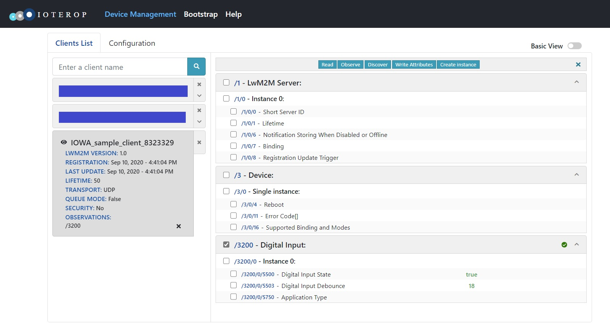

IOWA Reference
| Copyright | Copyright © 2020-2022 IoTerop |

2022-05-Eval
BY

Changelog
2022-05
This is a Long-Term Support release.
Upcoming Breaking Change
With the next release of IOWA, the configuration flags IOWA_SECURITY_LAYER_TINYDTLS, IOWA_SECURITY_LAYER_MBEDTLS, IOWA_SECURITY_LAYER_MBEDTLS_PSK_ONLY, IOWA_SECURITY_LAYER_MBEDTLS_OSCORE_ONLY will be deprecated. The configuration flag IOWA_SECURITY_LAYER_USER will be the default.
The samples secure_client_mbedtls3, secure_client_mbedtls2, and secure_client_tinydtls provides a feature equivalent integration with Mbed TLS and tinydtls. They also serve as a basis for integration with other TLS/DTLS libraries.
New Features
- It is now possible to set the access rights of a LwM2M Server to all known Objects at once by calling
iowa_client_acl_rights_server_set()with IOWA_LWM2M_ID_ALL as the Object ID. - Add a new API
iowa_client_get_server_configuration()to retrieve a LwM2M Server setting. - More LwM2M Server settings are accessible, including the CoAP retransmission parameters. See
iowa_server_setting_id_t. - IOWA generates new events of type IOWA_EVENT_SERVER_SETTING_CHANGED when a LwM2M Server setting is modified by a LwM2M operation on the LwM2M Server Object. See
iowa_event_t. - The provided implementations of the Location Object (ID: 6) and the IPSO Location Object (ID: 3336) have new APIs
iowa_client_location_update_with_time(),iowa_client_location_update_full_with_time(),iowa_client_gps_update_location_with_time(), andiowa_client_gps_update_location_full_with_time()allowing the caller to specify the measurement timestamp. - Add a new API `iowa_coap_peer_proxied_get() to perform a GET through a forward-proxy.
Breaking Change
- The value IOWA_IPSO_LEVEL_CONTROL is no longer part of the enumeration
iowa_IPSO_ID_t. To manipulate an IPSO level sensor, please use the IPSO Dimmer Object APIs. Note that the IPSO Level Control Object was renamed "Dimmer" in the LwM2M Registry.
Behavior Changes
- When a Response is bigger than the connection MTU, and IOWA_COAP_BLOCK_SUPPORT is defined, IOWA will now return the first block of the response instead of returning a 4.13 (Request Entity Too Large) code.
- The
iowa_server_info_tstructure now contains the LwM2M protocol version used by the LwM2M Server.
SDK Changes
- Some internal functions were renamed to avoid conflicts.
- Add three new samples illustrating how to integrate with a DTLS/TLS security library, one using Mbed TLS 3.1, one using Mbed TLS 2.28, and one using tinydtls.
- The sample custom_object_multiple_instances, illustrating how to manage multiple instances of a custom LwM2M Object, was simplified and documented.
Bug Fixes
- Fix a bug where corrupted data retrieved from the notification storage queues may lead to out-of-range memory accesses or value underflows.
- Fix a bug where a Notification bigger than the connection MTU was not correctly sent as the first block of a CoAP Block-Transfer.
- Fix a potential crash when handling a Observation on a multiple resource with no instance in Clients with no support of the Observe-Composite operation.
- Fix a bug where IOWA was returning an error to the LwM2M Server cancelling the Firmware Update process. The Firmware Update process was however cancelled correctly.
- Fix a bug where a Server lifetime or binding modified by calling
iowa_client_set_server_configuration()was not automatically saved when IOWA_STORAGE_CONTEXT_AUTOMATIC_BACKUP is defined. - Fix a bug where the Access Control List Object Instances where not correctly restored when loading a context. The saved access control rights were however still enforced.
User Manual ↵
LwM2M Overview
The Lightweight Machine To Machine designed by the Open Mobile Alliance is a device management protocol for the Internet of Things (IoT).
LwM2M Concepts
LwM2M Client/Device
The LwM2M Client/Device is the entity being managed by the LwM2M Server. The LwM2M Client presents resources for the LwM2M Server to manipulate.
LwM2M Server
The LwM2M Server is the entity managing the LwM2M Devices. It can Read, Write, Execute, Create or Delete the Devices resources.
The LwM2M Server URI can have one of the following formats:
- "coap://{hostname}[:{port}]" for unsecure UDP transport
- "coaps://{hostname}[:{port}]" for secure UDP transport (using DTLS)
- "coap+tcp://{hostname}[:{port}]" for unsecure TCP transport
- "coaps+tcp://{hostname}[:{port}]" for secure TCP transport (using TLS)
- "sms://{msisdn number}" for SMS binding in binary mode
- "lorawan://{FPort}" for LoRaWAN binding with FPort between 1 and 255
For UDP and TCP transports, if {port} is not present, the default port is used:
- 5683 for communication without security
- 5684 for secure communication
LwM2M Bootstrap Server
The LwM2M Bootstrap Server is a special LwM2M Server. It is the only Server allowed to provision or delete Server Accounts on the LwM2M Devices. It can Read (LwM2M 1.1), Write, Create and Delete the Devices resources.
LwM2M Endpoint Name
The endpoint name is the name presented by the LwM2M Client to the LwM2M Servers. A LwM2M Server or a LwM2M Bootstrap Server must be able to uniquely identify the LwM2M Client using this endpoint name. One possibility is to use an standard URN like:
- 3GPP Mobile Equipment Identity (RFC 8464):
urn:3gpp2:meid:<Manufacturer Code>-<Serial Number> - GSMA International Mobile station Equipment Identity (RFC 7274):
urn:gsma:imei:<Type Approval Code>-<Serial Number>-<Spare> - Universally Unique Identifier (RFC 4122):
urn:uuid:<UUID> - MAC address (RFC 9039):
urn:dev:mac:<EUI-64> - Organization specific identifier (RFC 9039):
urn:dev:org:<Enterprise Number>-<Anything> - Organization serial number (RFC 9039):
urn:dev:os:<Enterprise Number>-<Serial Number> - Organization product and serial number (RFC 9039):
urn:dev:ops:<Enterprise Number>-<Product Class>-<Serial Number>
LwM2M Resource
A LwM2M Resource is a data item presented by the LwM2M Device. A resource has a data type, a list of allowed operations and a unique URI.
Data types are defined in Lightweight M2M as follows:
- signed integer,
- unsigned integer,
- float,
- boolean,
- UTF-8 string,
- core link string,
- opaque binary,
- Unix time,
- reference to a LwM2M Object.
A resource can also be an array of the mentioned data types.
Operations on resources are Read, Write and Execute.
LwM2M Objects
The LwM2M Objects are a group of Device resources essential for some Device features such as firmware update, connectivity monitoring, physical sensor, etc. Standardized LwM2M Objects contain mandatory resources to support and optional resources to implement.
A LwM2M Device can have several instances of the same LwM2M Object.
All the Device resources are part of a LwM2M Object.
LwM2M Object Instance
Some LwM2M Objects are defined as multi-instance objects, meaning that a LwM2M Device can have several instances of the same LwM2M Object. These instances are identified by a numerical instance ID.
When a LwM2M Object is defined as a single-instance, the instance ID is always 0.
LwM2M URI
Resources and Objects have well-known IDs. The URI to a LwM2M resource is in the form: Object_ID ["/" Object_Instance_ID ["/" Resource_ID ["/" Resource_Instance_ID]]]
An URI can address an object, an object instance, a resource or a resource instance (i.e. an element when the resource is an array).
Server Account
A Server Account is a set of data enabling a LwM2M Device to connect to a LwM2M Server. It includes the Server URI and the Security Keys to use.
Bootstrap
A Bootstrap is the process by which the Device retrieves the Server Accounts. The information can come from factory settings, a SmartCard, or a LwM2M Bootstrap Server.
Registration
A LwM2M Server can only manage Devices registered with it.
When registering with the Bootstrap Server, the Device communicates only its unique endpoint name.
When registering with the LwM2M Server, the Device can communicate:
- its unique endpoint name,
- its lifetime,
- the list of LwM2M Objects implemented on the Device,
- its MSISDN,
- whether the Device requires Queue Mode or not.
Observation
The LwM2M Server can subscribe to one or several readable Device resources. When the value of the resource changes, the Device sends a Notification message to the Server containing the new value of the resource.
Lifetime
The Lifetime is the validity period of a LwM2M Device registration to the LwM2M Server. When this lifetime expires, the Server should no longer try to manage the Device.
The Device sends Registration Update messages to the Server to renew its registration validity period.
Queue Mode
Devices may go in stand-by mode and thus not be reachable by the LwM2M Servers at any time. To cope with this, the Device requests the Server to operate in Queue Mode. In this mode, the Device will initiate the communication with the Server (when sending a Notification or a Registration Update message). In the meantime, the Server is expected to queue its requests (hence the name).
SMS Trigger
A SMS Trigger is a special SMS sent to the Device. Upon reception of this SMS, the Device will either register to the Server or send a Registration Update message.
LwM2M Operations Overview
Bootstrap
When an endpoint is registered to a LwM2M Bootstrap Server, it can be managed by performing LwM2M operations on the endpoint's resources. The LwM2M operations are:
- Bootstrap Finish,
- Bootstrap Read,
- Bootstrap Write,
- Bootstrap Delete,
- Bootstrap Discover.
Bootstrap Request
The first action of LwM2M Client is to connect to the LwM2M Bootstrap Server and ask a Bootstrap Request. The Bootstrap Request message contains an endpoint’s unique ID.
Bootstrap Finish
A Bootstrap Finish operation is sent by the LwM2M Bootstrap Server. Upon reception of this operation, the LwM2M Client will perform a Bootstrap Consistency check to verify the Bootstrap information received from the LwM2M Bootstrap Server is valid. This means at least one LwM2M server is configured on the LwM2M Client.
Bootstrap Read
In LwM2M 1.1 or later, a Bootstrap Read operation can target the LwM2M Objects Access Control List or Server, or their LwM2M Object Instances. The endpoint returns data encoded in either TLV, JSON, SenML CBOR, or SenML JSON.
Bootstrap Write
A Bootstrap Write operation targets a LwM2M Object Instance. It contains data encoded in either TLV or JSON. The payload does not need to contain values for all the Object's resources.
In LwM2M 1.1 or in later version, it contains data encoded in either SenML CBOR or SenML JSON.
Bootstrap Delete
A Bootstrap Delete operation can target the root path, a LwM2M Object or a LwM2M Instance Object.
Bootstrap Discover
A Bootstrap Discover operation can target the root path or a LwM2M Object. The endpoint returns only the list of Objects and Object Instances with some attributes: LwM2M Enabler version ("lwm2m="), Short Server ID ("ssid="), and LwM2M Server URI ("uri=").
Registration
Initial Registration
The first action of LwM2M Client is to register to the LwM2M Server. The registration message contains an endpoint name and information about its capabilities (in the form of LwM2M Objects). The registration message also contains a lifetime parameter. When this lifetime expires, the LwM2M Server cancels the LwM2M Client registration.
The LwM2M Server replies with a "location". This location is a handle to the registration. The endpoint uses this handle to update or cancel its registration.
Registration Update
To keep its registration active or in case the list of LwM2M Objects is modified, the endpoint sends a Registration Update message.
Upon reception of this message, the LwM2M Server resets its internal lifetime timer.
De-registration
To cancel its registration, the LwM2M Client sends a De-registration message. The LwM2M Server may also automatically cancel an endpoint's registration if the registration lifetime expires.
Device Management and Service Enablement
When an endpoint is registered to a LwM2M Server, it can be managed by performing LwM2M operations on the endpoint's resources. The LwM2M operations are:
- Read,
- Write,
- Execute,
- Discover,
- Create,
- Delete,
- Read composite,
- Write composite.
Read
A Read operation can target a LwM2M Object, a LwM2M Object Instance or a LwM2M Resource. The endpoint returns data encoded in either TLV or JSON. For a single resource, a text encoding is possible.
In LwM2M 1.1 or later, the endpoint returns data encoded in either SenML CBOR or SenML JSON.
Write
A Write operation targets a LwM2M Object Instance. It contains data encoded in either TLV or JSON. The payload does not need to contain values for all the Object's resources.
In LwM2M 1.1 or in later version, it contains data encoded in either SenML CBOR or SenML JSON.
Execute
An Execute operation can only target a LwM2M Resource.
Discover
A Discover operation can target a LwM2M Object, a LwM2M Object Instance or a LwM2M Resource.
Create
A Create operation can target a LwM2M Object. It creates a new Object Instance.
Delete
A Delete operation can target a LwM2M Object Instance. It deletes an Object Instance.
Read composite
In LwM2M 1.1 or in later version, a Read composite operation can selectively Read a number of Resources, and/or Resource Instances of different Objects in a single request. The endpoint returns data encoded in either SenML CBOR, SenML JSON, or LwM2M CBOR.
Write composite
In LwM2M 1.1 or in later version, a Write composite operation can update values of a number of different Resources across different Instances of one or more Objects in a single request. It contains data encoded in either SenML CBOR , SenML JSON, or LwM2M CBOR.
Information Reporting
When a LwM2M Client is registered to a LwM2M Server, its resources can be observed. Whenever the value of the resource changes, the LwM2M Client sends a notification to the LwM2M Server. Moreover in LwM2M 1.1, the Client can send data to the LwM2M Server without initial solicitation. The LwM2M operations are:
- Observation,
- Observation composite,
- Cancel Observation,
- Write attributes,
- Send.
Observation
An observation can target a LwM2M Object, a LwM2M Object Instance or a LwM2M Resource.
Observe composite
In LwM2M 1.1 or in later version, a Observe composite operation can initiate observations or selectively read a group of Object, Object Instance, Resources, and/or Resource Instances of different Objects in a single request. The endpoint returns data encoded in either SenML CBOR or SenML JSON.
Notification
When an observed resource's value changes, the endpoint sends a notification message to the LwM2M Server.
Cancel Observation
The LwM2M Server can cancel an on-going observation.
Write attributes
The LwM2M Server can set the parameters of an observation. The possible attributes are:
| Name | Level | Description |
|---|---|---|
| pmin | Object, Object Instance, Resource | The minimum period in seconds to wait between notifications. |
| pmax | Object, Object Instance, Resource | The maximum period in seconds to wait between notifications. |
| gt | Numerical Resource | An upper threshold. A notification is sent when the resource value crosses this threshold. |
| lt | Numerical Resource | A lower threshold. A notification is sent when the resource value crosses this threshold. |
| st | Numerical Resource | A minimum difference in a resource value for a notification to be sent. |
| epmin | Object, Object Instance, Resource | The minimum sample time in seconds for the observed sensor in LwM2M 1.1 or in later version. |
| epmax | Object, Object Instance, Resource | The maximum sample time in seconds for the observed sensor in LwM2M 1.1 or in later version. |
Setting an attribute is in the form Name "=" value with some constraints:
ltvalue <gtvalueltvalue + 2 *stvalue <gtvalue- If
pmax<pmin,pmaxis ignored epmax>epmin
Clearing an attribute is in the form Name.
Examples
-
Receiving a notification every minute at most even if the observed URI did not change:
"pmax=60". -
Receiving only one notification per hour even if the observed URI changed several times per minute:
"pmin=3600". -
Receiving exactly one notification every sixty seconds:
"pmin=59&pmax=60". -
Receiving a notification when the resource value exceeds 95 or falls below 10, and when the resource value returns below 95 or above 10:
"lt=10>=95". -
Clearing the previously set minimum period and setting a maximum period of five minutes:
"pmin&pmax=300".
Send
In LwM2M 1.1 or in later version, a Send operation is used by the LwM2M Client to send data to the LwM2M Server without an explicit request from that Server. It contains data encoded in either SenML CBOR, SenML JSON, or LwM2M CBOR.
Later in the documentation, the Send operation is called a Data Push.
Standardized LwM2M Objects
The list of publics LwM2M Objects is available at the OMNA Registry: http://www.openmobilealliance.org/wp/OMNA/LwM2M/LwM2MRegistry.html
Security Object
This object provides the keying material of a LwM2M Client appropriate to access a specified LwM2M Server. One Object Instance should address a LwM2M Bootstrap-Server.
| ID | Resource Name | Access Type | Mandatory | Type | Description |
|---|---|---|---|---|---|
| 0 | LwM2M Server URI | Yes | String | Uniquely identifies the LwM2M Server or LwM2M Bootstrap-Server. The format of the CoAP URI is defined in Section 6 of RFC 7252. | |
| 1 | Bootstrap-Server | Yes | Boolean | Determines if the current instance concerns a LwM2M Bootstrap-Server (true) or a standard LwM2M Server (false). | |
| 2 | Security Mode | Yes | Integer | Determines which UDP payload security mode is used. | |
| 3 | Public Key or Identity | Yes | Opaque | Stores the LwM2M Client’s Certificate (Certificate mode), public key (RPK mode) or PSK Identity (PSK mode). | |
| 4 | Server Public Key | Yes | Opaque | Stores the LwM2M Server’s or LwM2M Bootstrap-Server’s Certificate (Certificate mode), public key (RPK mode). | |
| 5 | Secret Key | Yes | Opaque | Stores the secret key or private key of the security mode. | |
| 6 | SMS Security Mode | No | Integer | Determines which SMS security mode is used. | |
| 7 | SMS Binding Key Parameters | No | Opaque | Stores the KIc, KID, SPI and TAR. | |
| 8 | SMS Binding Secret Key(s) | No | Opaque | Stores the values of the key(s) for the SMS binding. | |
| 9 | LwM2M Server SMS Number | No | String | MSISDN used by the LwM2M Client to send messages to the LwM2M Server via the SMS binding. | |
| 10 | Short Server ID | No | Integer | This identifier uniquely identifies each LwM2M Server configured for the LwM2M Client. | |
| 11 | Client Hold Off Time | No | Integer | Relevant information for a Bootstrap-Server only. | |
| 12 | Bootstrap-Server Account Timeout | No | Integer | The LwM2M Client MUST purge the LwM2M Bootstrap-Server Account after the timeout value given by this resource. The lowest timeout value is 1. | |
| 13 | Matching Type | No | Unsigned Integer | The Matching Type Resource specifies how the certificate or raw public key in in the Server Public Key is presented. | |
| 14 | SNI | No | String | This resource holds the value of the Server Name Indication (SNI) value to be used during the TLS handshake. | |
| 15 | Certificate Usage | No | Unsigned Integer | The Certificate Usage Resource specifies the semantic of the certificate. | |
| 16 | DTLS/TLS Ciphersuite | No | Unsigned Integer | It instructs the TLS/DTLS client to propose the indicated ciphersuite(s) in the ClientHello of the handshake | |
| 17 | OSCORE Security Mode | No | Object link | It provides a link to the OSCORE Object Instance. |
Server Object
This object provides the data related to a LwM2M Server. A Bootstrap-Server has no such an Object Instance associated to it.
| ID | Resource Name | Access Type | Mandatory | Type | Description |
|---|---|---|---|---|---|
| 0 | Short Server ID | R | Yes | Integer | Used as link to associate server Object Instance. |
| 1 | Lifetime | RW | Yes | Integer | Specify the lifetime of the registration in seconds. |
| 2 | Default Minimum Period | RW | No | Integer | The default value the LwM2M Client should use for the Minimum Period of an Observation in the absence of this parameter being included in an Observation. |
| 3 | Default Maximum Period | RW | No | Integer | The default value the LwM2M Client should use for the Maximum Period of an Observation in the absence of this parameter being included in an Observation. |
| 4 | Disable | E | No | If this Resource is executed, this LwM2M Server Object is disabled for a certain period defined in the Disabled Timeout Resource. | |
| 5 | Disable Timeout | RW | No | Integer | A period to disable the Server. |
| 6 | Notification Storing When Disabled or Offline | RW | Yes | Boolean | If true, the LwM2M Client stores "Notify" operations to the LwM2M Server while the LwM2M Server account is disabled or the LwM2M Client is offline. |
| 7 | Binding | RW | Yes | String | This Resource defines the transport binding configured for the LwM2M Client. |
| 8 | Registration Update Trigger | E | Yes | If this Resource is executed the LwM2M Client MUST perform an "Update" operation with this LwM2M Server using that transport for the Current Binding Mode. | |
| 9 | Bootstrap-Request Trigger | E | No | If this Resource is executed the LwM2M Client MUST initiate a "Client Initiated Bootstrap" procedure in using the LwM2M Bootstrap-Server Account. | |
| 10 | APN Link | RW | No | Object link | It provides a link to the APN connection profile Object Instance (OMNA registered Object ID:11) to be used to communicate with this server. |
| 11 | TLS-DTLS Alert Code | R | No | Unsigned Integer | It contains the most recent TLS / DTLS alert message received from the LwM2M Server. |
| 12 | Last Bootstrapped | R | No | Time | It represents the last time that the bootstrap server updated this LwM2M Server Account. |
| 13 | Registration Priority Order | No | Unsigned Integer | The LwM2M Client sequences the LwM2M Server registrations in increasing order of this value. | |
| 14 | Initial Registration Delay Timer | No | Unsigned Integer | The delay before registration is attempted for this LwM2M Server based upon the completion of registration of the previous LwM2M Server in the registration order. | |
| 15 | Registration Failure Block | No | Boolean | Prevent or not the registration on the next LwM2M Server when the registration fails to connect with this LwM2M server. | |
| 16 | Bootstrap on Registration Failure | No | Boolean | Initiate a Bootstrap Request or not when the registration fails to connect with this LwM2M server. | |
| 17 | Communication Retry Count | No | Unsigned Integer | The number of successive communication attempts before which a communication sequence is considered as failed. | |
| 18 | Communication Retry Timer | No | Unsigned Integer | The delay between successive communication attempts in a communication sequence. | |
| 19 | Communication Sequence Delay Timer | No | Unsigned Integer | The delay between successive communication sequences. | |
| 20 | Communication Sequence Retry Count | No | Unsigned Integer | The number of successive communication sequences before which a registration attempt is considered as failed. | |
| 21 | Trigger | RW | No | Boolean | Using the Trigger Resource a LwM2M Client can indicate whether it is reachable over SMS (value set to 'true') or not (value set to 'false'). |
| 22 | Preferred Transport | RW | No | String | When the LwM2M client supports multiple transports, it MAY use this transport to initiate a connection. |
| 23 | Mute Send | RW | No | Boolean | De-activated the LwM2M Client Send command capability. |
Access Control List Object
This object is used to check whether the LwM2M Server has access right for performing an operation.
| ID | Resource Name | Access Type | Mandatory | Type | Description |
|---|---|---|---|---|---|
| 0 | Object ID | R | Yes | Integer | Used as link to associate Object which the access right is applicable. |
| 1 | Object Instance ID | R | Yes | Integer | Used as link to associate Object Instance which the access right is applicable. |
| 2 | ACL | RW | No | Integer | Set the access right for the corresponding LwM2M Servers. |
| 3 | Access Control Owner | RW | Yes | Integer | Short Server ID of a LwM2M Server. Only this LwM2M Server can manage the Resources of this Object Instance. |
Device Object
This object contains the device information: model, manufacturer, serial number, power source type, battery level, etc... It also contains a resource allowing the Server to reboot the Device.
| ID | Resource Name | Access Type | Mandatory | Type | Description |
|---|---|---|---|---|---|
| 0 | Manufacturer | R | No | String | Human readable manufacturer name |
| 1 | Model Number | R | No | String | A model identifier (manufacturer specified string) |
| 2 | Serial Number | R | No | String | Serial Number |
| 3 | Firmware Version | R | No | String | Current firmware version of the Device. |
| 4 | Reboot | E | Yes | none | Reboot the LwM2M Device. |
| 5 | Factory Reset | E | No | none | Perform factory reset of the LwM2M Device to make the LwM2M Device to go through initial deployment sequence where provisioning and bootstrap sequence is performed. |
| 6 | Available Power Sources | R | No | Integer array | Available power sources of the Device. |
| 7 | Power Source Voltage | R | No | Integer array | Present voltage for each Available Power Sources. |
| 8 | Power Source Current | R | No | Integer array | Present current for each Available Power Sources. |
| 9 | Battery Level | R | No | Integer | Contains the current battery level as a percentage. |
| 10 | Memory Free | R | No | Integer | Estimated current available amount of storage space in the Device (expressed in kilobytes). |
| 11 | Error Code | R | Yes | Integer array | List of errors experienced by the Device. |
| 12 | Reset Error Code | E | No | none | Delete all error codes in the previous resource. |
| 13 | Current Time | R/W | No | Time | Current UNIX time of the LwM2M Client. |
| 14 | UTC Offset | R/W | No | String | Indicates the UTC offset currently in effect for this LwM2M Device. |
| 15 | Timezone | R/W | No | String | Indicates in which time zone the LwM2M Device is located. |
| 16 | Supported Bindings | R | Yes | String | Indicates which transports are supported by the Device. |
| 17 | Device Type | R | No | String | Type of the device (manufacturer specified string). |
| 18 | Hardware Version | R | No | String | Current hardware version of the device. |
| 19 | Software Version | R | No | String | Current software version of the device. |
| 20 | Battery Status | R | No | Integer | Status of the Device battery (normal, charging, etc...) |
| 21 | Memory Total | R | No | Integer | Total amount of storage space in the Device (expressed in kilobytes). |
| 22 | ExtDevInfo | R | No | Object link | Reference to a vendor specific object containing device information. |
Connectivity Monitoring Object
This object provides high-level information on the current network type, signal strength, IP address, etc…
| ID | Resource Name | Access Type | Mandatory | Type | Description |
|---|---|---|---|---|---|
| 0 | Network Bearer | R | Yes | Integer | The network bearer used for the current LwM2M communication session. |
| 1 | Available Network Bearer | R | Yes | Integer array | List of current available network bearer. |
| 2 | Radio Signal Strength | R | Yes | Integer | The average value of the received signal strength. |
| 3 | Link Quality | R | No | Integer | The received link quality. |
| 4 | IP Addresses | R | Yes | String array | The IP addresses assigned to the connectivity interface. |
| 5 | Router IP Addresses | R | No | String array | The IP addresses of the next-hop IP routers. |
| 6 | Link Utilization | R | No | Integer | The average utilization of the link in %. |
| 7 | APN | R | No | String array | Access Point Names in case Network Bearer Resource is a Cellular Network. |
| 8 | Cell ID | R | No | Integer | Serving Cell ID in case Network Bearer Resource is a Cellular Network. |
| 9 | SMNC | R | No | Integer | Serving Mobile Network Code. |
| 10 | SMCC | R | No | Integer | Serving Mobile Country Code. |
| 11 | SignalSNR | R | No | Integer | Signal to Interference plus Noise Ratio SINR is the ratio of the strength of the received signal to the strength of the received interference signal. |
| 12 | LAC | R | No | Integer | Location Area Code in case Network Bearer Resource is a Cellular Network. |
Firmware Update Object
This object allows to update the firmware of the device. The firmware package can either be pushed by the Server to the Device or the Device can download it using the provided URI.
| ID | Resource Name | Access Type | Mandatory | Type | Description |
|---|---|---|---|---|---|
| 0 | Package | W | Yes | Opaque | The firmware package pushed by the Server. |
| 1 | Package URI | R/W | Yes | String | The URI from where the Device can download the firmware package. |
| 2 | Update | E | Yes | none | Updates the Device firmware by using the firmware package. |
| 3 | State | R | Yes | Integer | Indicates current state with respect to this firmware update. |
| 5 | Update Result | R | Yes | Integer | Contains the result of downloading or updating the firmware. |
| 6 | PkgName | R | No | String | The name of the Firmware Package. |
| 7 | PkgVersion | R | No | String | The version of the Firmware package. |
| 8 | Firmware Update Protocol Support | R | No | Integer | The download protocols the Device implements. |
| 9 | Firmware Update Delivery Method | R | Yes | Integer | The delivery methods the Device supports. |
Location Object
This object contains information on the device position and speed.
| ID | Resource Name | Access Type | Mandatory | Type | Description |
|---|---|---|---|---|---|
| 0 | Latitude | R | Yes | Float | The decimal notation of latitude. |
| 1 | Longitude | R | Yes | Float | The decimal notation of longitude. |
| 2 | Altitude | R | No | Float | The decimal notation of altitude in meters above sea level. |
| 3 | Radius | R | No | Float | The size in meters of a circular area around a point of geometry. |
| 4 | Velocity | R | No | Opaque | The velocity in the Device. |
| 5 | Timestamp | R | No | Time | The timestamp of when the location measurement was performed. |
| 6 | Speed | R | No | Float | The speed of the Device in meters per second. |
Connectivity Statistics Object
This object collects statistics on the network usage.
| ID | Resource Name | Access Type | Mandatory | Type | Description |
|---|---|---|---|---|---|
| 0 | SMS Tx Counter | R | No | Integer | The total number of SMS successfully transmitted during the collection period. |
| 1 | SMS Rx Counter | R | No | Integer | The total number of SMS successfully received during the collection period. |
| 2 | Tx Data | R | No | Integer | The total amount of IP data transmitted during the collection period. |
| 3 | Rx Data | R | No | Integer | The total amount of IP data received during the collection period. |
| 4 | Max Message Size | R | No | Integer | The maximum IP message size that is used during the collection period. |
| 5 | Average Message Size | R | No | Integer | The average IP message size that is used during the collection period. |
| 6 | Start | E | Yes | none | Start to collect information. |
| 7 | Stop | E | Yes | none | Stop collecting information. |
| 8 | Collection Period | R/W | No | Integer | The default collection period in seconds. |
Software Management Object
This object allows to update the software of the device. The software package can either be pushed by the Server to the Device or the Device can download it using the provided URI.
| ID | Resource Name | Access Type | Mandatory | Type | Description |
|---|---|---|---|---|---|
| 0 | PkgName | R | Yes | String | Name of the software package. |
| 1 | PkgVersion | R | Yes | String | Version of the software package. |
| 2 | Package | W | No | Opaque | The software package pushed by the Server. |
| 3 | Package URI | W | No | String | The URI from where the Device can download the software package. |
| 4 | Install | E | Yes | none | Install the software package. |
| 5 | Checkpoint | R | No | Objlink | Link to a Checkpoint object which allows to specify conditions/dependencies for a software update. |
| 6 | Uninstall | E | Yes | none | Uninstall the software package. |
| 7 | Update State | R/W | No | Boolean | Indicates current state with respect to this software update. |
| 8 | Update Supported Object | R | Yes | Integer | Indicates if the LwM2M Client MUST inform the registered LwM2M Servers of Objects and Object Instances parameter by sending an Update or Registration message after the software update operation. |
| 9 | Update Result | R | Yes | Integer | Contains the result of downloading or updating the software. |
| 10 | Activate | E | Yes | none | Activate the previously installed software package. |
| 11 | Deactivate | E | Yes | none | Deactivate the previously installed software package. |
| 12 | Activation State | R | Yes | Boolean | Indicate the current activation state of the software. |
| 13 | User Name | W | No | String | User name for access to software Update Package in pull mode. |
| 14 | Password | W | No | String | Password for access to software Update Package in pull mode. |
| 15 | Software Component Link | R | No | Objlink | Reference to SW Components downloaded and installed in scope of the present SW Update Package. |
Cellular Connectivity Object
This object is used to configure the cellular connectivity of the Device.
| ID | Resource Name | Access Type | Mandatory | Type | Description |
|---|---|---|---|---|---|
| 11 | Activated Profile Names | R | Yes | String array | Links to instances of the "APN connection profile" object. |
| 0 | SMSC address | R/W | No | String | E.164 address of SMSC. |
| 1 | Disable radio period | R/W | No | Integer | Time period for which the device shall disconnect from cellular radio. |
| 2 | Module activation code | R/W | No | String | AT command to activate the module. |
| 3 | Vendor specific extensions | R | No | Object Link | Link to a vendor specific object. |
| 4 | PSM Timer | R/W | No | Integer | Power saving mode timer. |
| 5 | Active Timer | R/W | No | Integer | Active timer = T3324 as defined in [3GPP-TS_24.008]. |
| 6 | Serving PLMN Rate control | R | No | Integer | Maximum the number of allowed uplink PDU transmissions per 6 minute interval. |
| 7 | eDRX parameters for Iu mode | R/W | No | Opaque | Extended DRX parameters (Paging Time Window and eDRX value) for Iu mode. |
| 8 | eDRX parameters for WB-S1 mode | R/W | No | Opaque | Extended DRX parameters (Paging Time Window and eDRX value) for WB-S1 mode. |
| 9 | eDRX parameters for NB-S1 mode | R/W | No | Opaque | Extended DRX parameters (Paging Time Window and eDRX value) for NB-S1 mode. |
| 10 | eDRX parameters for A/Gb mode | R/W | No | Opaque | Extended DRX parameters (Paging Time Window and eDRX value) for A/Gb mode. |
APN Connection Profile Object
This object specifies resources to enable a device to connect to an APN.
| ID | Resource Name | Access Type | Mandatory | Type | Description |
|---|---|---|---|---|---|
| 0 | Profile name | R/W | Yes | String | Human-readable identifier. |
| 1 | APN | R/W | No | String | Presented to network during connection to PDN. |
| 2 | Auto select APN by device | R/W | No | Boolean | Enables the device to choose an APN according to a device specific algorithm. |
| 3 | Enable status | R/W | No | Boolean | Connection is activated or not. |
| 4 | Authentication Type | R/W | Yes | Integer | . |
| 5 | User Name | R/W | No | String | . |
| 6 | Secret | R/W | No | String | . |
| 7 | Reconnect Schedule | R/W | No | String | Comma separated list of retry delay values in seconds. |
| 8 | Validity (MCC, MNC) | R/W | No | String array | Coma separated mobile country code, then mobile network code. |
| 9 | Connection establishment time | R | No | Time array | UTC time of connection request. |
| 10 | Connection establishment result | R | No | Integer array | . |
| 11 | Connection establishment reject cause | R | No | Integer array | Reject cause, see [3GPP-TS_24.008, 3GPP-TS_24.301]. |
| 12 | Connection end time | R | No | Time array | UTC time of connection end. |
| 13 | TotalBytesSent | R | No | Integer array | Rolling counter for total number of bytes sent via this interface since last device reset. |
| 14 | TotalBytesReceived | R | No | Integer | Rolling counter for total number of bytes received via this interface since last device reset. |
| 15 | IP address | R/W | No | String array | IP addresses. |
| 16 | Prefix length | R/W | No | String array | Associated with IPv6 addresses. |
| 17 | Subnet mask | R/W | No | String array | Subnet masks. |
| 18 | Gateway | R/W | No | String array | Gateways. |
| 19 | Primary DNS address | R/W | No | String array | Primary DNS addresses. |
| 20 | Secondary DNS address | R/W | No | String array | Secondary DNS addresses. |
| 21 | QCI | R | No | Integer | Quality of service Class Identifier. |
| 22 | Vendor specific extensions | R | No | Objlnk | Links to a vendor specific object. |
| 23 | TotalPacketsSent | R | No | Integer | Rolling counter for total number of packets sent via this interface since last device reset. |
| 24 | PDN Type | R/W | No | Integer | . |
| 25 | APN Rate Control | R | No | Integer | Determines the number of allowed uplink PDU transmissions per time interval per APN. |
Bearer selection Object
This object specifies resources to enable a device to choose a PLMN/network on which to attach/register and what type of bearer to then connect.
| ID | Resource Name | Access Type | Mandatory | Type | Description |
|---|---|---|---|---|---|
| 0 | Preferred Communications Bearer | R/W | No | Integer array | Used in network selection and, if applicable, in subsequent mobility management procedures. |
| 1 | Acceptable RSSI (GSM) | R/W | No | Integer | Provides guide to the application when performing manual network selection. |
| 2 | Acceptable RSCP (UMTS) | R/W | No | Integer | Provides guide to the application when performing manual network selection. |
| 3 | Acceptable RSRP (LTE) | R/W | No | Integer | Provides guide to the application when performing manual network selection. |
| 4 | Acceptable RSSI (1xEV-DO) | R/W | No | Integer | Provides guide to the application when performing manual network selection. |
| 5 | Cell lock list | R/W | No | String | Comma separated list of allowed Global Cell Identities. |
| 6 | Operator list | R/W | No | String | Comma separated list of MCC+MNC of operators, in priority order. |
| 7 | Operator list mode | R/W | No | Boolean | Indicates whether resource "operator list" represents the allowed operator list (white list), or, the preferred operator list. |
| 8 | List of available PLMNs | R | No | String | Allows server to see results of network scan. |
| 9 | Vendor specific extensions | R | No | Object link | Links to a vendor specific object. |
| 10 | Acceptable RSRP (NB-IoT) | R/W | No | Integer | Provides guide to the application when performing manual network selection. |
| 11 | Higher Priority PLMN Search Timer | R/W | No | Integer | Interval between periodic searches for higher priority PLMN. |
| 12 | Attach without PDN connection | R/W | No | Boolean | . |
Software Component Object
This object provides the resources needed to activate/deactivate software components on the device.
| ID | Resource Name | Access Type | Mandatory | Type | Description |
|---|---|---|---|---|---|
| 0 | Component Identity | R | No | String | Name or identifier of the software component. |
| 1 | Component Pack | R | No | Opaque | Software components is stored in this resource. |
| 2 | Component Version | R | No | String | Version of the software component. |
| 3 | Activate | E | No | none | Activate the installed software component. |
| 4 | Deactivate | E | No | none | Deactivate the installed software component. |
| 5 | Activation State | R | No | Boolean | Indicate the current activation state of the software. |
LwM2M OSCORE
This object provides the resources needed to activate/deactivate software components on the device.
| ID | Resource Name | Access Type | Mandatory | Type | Description |
|---|---|---|---|---|---|
| 0 | OSCORE Master Secret | Yes | String | Store the pre-shared key used in LwM2M Client and LwM2M Server/Bootstrap-Server, called the Master Secret. | |
| 1 | OSCORE Sender ID | Yes | String | Store an OSCORE identifier for the LwM2M Client called the Sender ID. | |
| 2 | OSCORE Recipient ID | Yes | String | Store an OSCORE identifier for the LwM2M Client called the Recipient ID. | |
| 3 | OSCORE AEAD Algorithm | No | Integer | Store the encoding of the AEAD Algorithm as defined in Table 10 of RFC 8152. The AEAD is used by OSCORE for encryption and integrity protection of CoAP message fields. | |
| 4 | OSCORE HMAC Algorithm | No | Integer | Store the encoding of the HMAC Algorithm used in the HKDF. The encoding of HMAC algorithms are defined in Table 7 of RFC 8152. The HKDF is used to derive the security context used by OSCORE. | |
| 5 | OSCORE Master Salt | No | String | Store a non-secret random value called the Master Salt. The Master Salt is used to derive the security context used by OSCORE. |
Samples Compilation
On Linux
Prerequisites: An x86-64 computer with a Linux distribution installed, the cmake utility, the make utility and a C compiler.
- Create a build folder
mkdir build
- Go to this folder
cd build
- Launch cmake in debug mode
cmake -DCMAKE_BUILD_TYPE=Debug ..
(the last parameter point to the folder containing the CMakeLists.txt file of your target. In this case the one at the root of the repo including all the samples)
- Build the client and the server
make -j 4
( the -j 4 parameter enables four parallel compilations)
After making some modifications to the code, only the step 4 is required.
On Windows
Using Visual Studio Code
- Install the Microsoft C++ compiler as explained here: https://docs.microsoft.com/en-us/cpp/build/building-on-the-command-line?view=vs-2019
- Select the "Build Tools for Visual Studio 2019".
- In the Installer, make sure the following optional features are checked:
- MSVC v142 - VS 2019 C++ x64/x86 build tools (Note that the version may differ)
- Windows 10 SDK
- C++ CMake tools for Windows
- Install Visual Studio Code from https://code.visualstudio.com/
- Launch Visual Studio Code.
- Go to the "Extensions" panel (Ctrl+Shift+X) on the left side.
- Install the "C/C++", "CMake", and "CMake Tools" extensions
- Open the folder containing the IOWA Samples ("File" menu -> "Open Folder..." or "Ctrl+K Ctrl+O")
- Open the CMake panel on the left side.
- On the top bar of the CMake panel, click on the icon "Configure All Projects".
- When prompted to select a kit, choose one of the Visual Studio Build Tools.
- On the top bar of the CMake panel, click on the icon "Build All Projects".
- Click on the sample of your choice.
- Right-click on the application and select "Run in terminal"
Using Visual Studio with C++ support.
Visual Studio version must be at least 2017 for the CMake support.
- In the Visual Studio menu bar, go to "File", "Open", "Folder". Select the IOWA Samples folder.
- In the "Solution Explorer" windows, right-click on "CMakeList.txt" and choose "Set as Startup Item".
- In the Visual Studio menu bar, go to "Build", "Build All"
Configuration
IOWA relies on the compilation flags described below to enable or disable features. These compilation flags can be set in the header file iowa_config.h. Every source file of IOWA includes this header file.
To create your product, a template is provided in the include folder.
Platform Configuration
LWM2M_BIG_ENDIAN and LWM2M_LITTLE_ENDIAN
Define one and only one of these two to specify the endianness of your platform.
IOWA_BUFFER_SIZE
When using a packet switching transport (e.g. UDP), IOWA stores the received data in a static buffer. IOWA_BUFFER_SIZE defines the size in bytes of this static buffer. Note that for the WebSocket transport, IOWA uses a dynamically allocated buffer instead of a static one.
IOWA_USE_SNPRINTF
When using a text content format, IOWA uses snprintf to serialize float which absolute value is greater than INT64_MAX.
IOWA Configuration
Transports
IOWA can support various transports. These transports are enabled by defining the following:
- IOWA_UDP_SUPPORT
- Support for UDP transport. URI scheme is in the form "coap://" or "coaps://". This transport requires IOWA_BUFFER_SIZE to be defined.
- IOWA_TCP_SUPPORT
- Support for TCP transport. URI scheme is in the form "coap+tcp://" or "coaps+tcp://".
- IOWA_WEBSOCKET_SUPPORT
- Support for WebSocket transport. URI scheme is in the form "coap+ws://" or "coaps+ws://". This transport requires IOWA_BUFFER_SIZE to be defined. Note that this transport is not part of the LwM2M standard and may work only with IoTerop's ALASKA device management platform.
- IOWA_SMS_SUPPORT
- Support for SMS transport. URI scheme is in the form "coap+sms://" for text SMS or "sms://" for binary SMS. This transport requires IOWA_BUFFER_SIZE to be defined.
- IOWA_LORAWAN_SUPPORT
- Support for LoRaWAN transport. URI scheme is in the form "lorawan://". This transport requires IOWA_BUFFER_SIZE to be defined.
Additional Flags
- IOWA_COAP_BLOCK_SUPPORT
- Support for full packet fragmentation at CoAP level as defined in RFC 7959 "Block-Wise Transfers in the Constrained Application Protocol (CoAP)".
- IOWA_COAP_BLOCK_MINIMAL_SUPPORT
- Support for reassembly of fragmented packets at CoAP level. Automatically defined with IOWA_COAP_BLOCK_SUPPORT. Useful for constrained devices using the "Push" method of Device Update.
- IOWA_COAP_OSCORE_SUPPORT
- Support for security at the CoAP message level using Object Security for Constrained RESTful Environments (RFC 8613).
- IOWA_COAP_ACK_MEMORY_LIMIT
- Define a limit in bytes for the memory used by CoAP Acknowledgements stored for potential re-transmissions e.g.
#define IOWA_COAP_ACK_MEMORY_LIMIT 1024. Useful for memory constrained devices. Note that CoAP Acknowledgements are stored only until MAX_TRANSMIT_WAIT has expired.
IOWA_ABSTRACTION_EXTENSION
IOWA will use the new system abstraction function iowa_system_connection_open_server() instead of iowa_system_connection_open().
IOWA_SECURITY_LAYER
IOWA can use different DTLS/TLS stacks to secure communication between LwM2M Clients and Servers. The possible values for this define are:
- IOWA_SECURITY_LAYER_NONE
- No security features can be used. This is the default value if IOWA_SECURITY_LAYER is not defined.
- IOWA_SECURITY_LAYER_USER
- To provide your security stack. Refer to the Providing your security implementation section for details.
- IOWA_SECURITY_LAYER_MBEDTLS
- Use mbed TLS as the DTLS/TLS stack. The sources of mbed TLS are provided in the
externals/mbedtlsfolder. - IOWA_SECURITY_LAYER_MBEDTLS_OSCORE_ONLY
- Use mbed TLS as the cryptographic stack restricted to OSCORE mode. The sources of mbed TLS are provided in the
externals/mbedtlsfolder. - IOWA_SECURITY_LAYER_MBEDTLS_PSK_ONLY
- Use mbed TLS as the DTLS/TLS stack restricted to Pre-Shared Key mode. The sources of mbed TLS are provided in the
externals/mbedtlsfolder. - IOWA_SECURITY_LAYER_TINYDTLS
- Use tinydtls as the DTLS/TLS stack. The sources of tinydtls are provided in the
externals/mbedtlsfolder. Note that tinydtls does not handle certificate based security modes.
If security is in use, the platform abstraction functions iowa_system_security_data() and iowa_system_random_vector_generator() must be implemented.
Be aware, security increases the ROM/RAM footprints. The mbed TLS or tinyDTLS layer have been configured to keep a good ratio between the ROM/RAM footprints and optimal security. But on constrained devices, the Flash used is small and designed to be optimal (fully used). Thus, if the security layer exceeds the footprints, additional defines can be set depending of the device. These defines are outside of the scope of IOWA.
For mbed TLS layer, the following defines can be set in externals/mbedtls/include/mbedtls/config.h:
- MBEDTLS_AES_ROM_TABLES: Store the pre-computed AES tables in the ROM instead of the RAM. It can reduce RAM usage by ~8kb, but increase ROM usage by ~8kb.
- MBEDTLS_AES_FEWER_TABLES: Store a smaller pre-computed AES tables in the ROM/RAM. It can reduce the usage by ~6kb, and thus pre-computed AES tables cost only ~2kb.
IOWA_LOG_LEVEL and IOWA_LOG_PART
These defines configure the traces provided by IOWA. Obviously, having more traces increase the code footprint of IOWA. Note that all traces are provided to the platform abstraction function iowa_system_trace().
IOWA_LOG_LEVEL possible values are:
- IOWA_LOG_LEVEL_NONE: No traces are generated. This is the default value if IOWA_LOG_LEVEL is not defined.
- IOWA_LOG_LEVEL_ERROR: Only the most critical errors are reported like calling IOWA APIs with wrong parameters or memory allocation failures.
- IOWA_LOG_LEVEL_WARNING: Recoverable errors are also reported.
- IOWA_LOG_LEVEL_INFO: IOWA reports information on major steps of its execution. This is the recommended setting during integration.
- IOWA_LOG_LEVEL_TRACE: IOWA reports every step of its execution. It is advised to use this value only to provide details when contacting the support.
IOWA_LOG_PART is useful to restrict traces to some components of IOWA. It is a combination of the following:
- IOWA_PART_BASE IOWA APIs and execution.
- IOWA_PART_COAP the CoAP layer.
- IOWA_PART_COMM the communication handling.
- IOWA_PART_DATA the serialization/deserialization payload packet handling.
- IOWA_PART_LWM2M the Lightweight M2M layer.
- IOWA_PART_OBJECT the object layer.
- IOWA_PART_SECURITY the security layer.
- IOWA_PART_SYSTEM the platform abstraction layer.
Additionally, IOWA_PART_ALL is defined as enabling traces of all components. This is the default value if IOWA_LOG_PART is not defined.
IOWA_LOG_BUFFER_LIMIT
By default, when logging a buffer, IOWA logs all the content. To limit the outputs, set this define to a numerical value, e.g.
#define IOWA_LOG_BUFFER_LIMIT 512
IOWA_THREAD_SUPPORT
When using IOWA in a multithreaded system, defining IOWA_THREAD_SUPPORT enables thread safety in IOWA.
This feature requires the platform abstraction functions iowa_system_connection_interrupt_select(), iowa_system_mutex_lock(), and iowa_system_mutex_unlock() to be implemented.
IOWA_STORAGE_CONTEXT_SUPPORT
IOWA can save and restore its context through the APIs iowa_save_context(), iowa_save_context_snapshot() and iowa_load_context(). This feature requires this compilation flag to be set.
This feature allows external data to be saved and restored with the context through callback. Callbacks can be added and deleted through the APIs iowa_backup_register_callback() and iowa_backup_deregister_callback().
This feature requires the platform abstraction functions iowa_system_store_context() and iowa_system_retrieve_context() to be implemented.
IOWA_STORAGE_CONTEXT_AUTOMATIC_BACKUP
When this flag is set, IOWA would save the LwM2M Client context after every modification by a LwM2M Server or LwM2M Bootstrap Server. This feature does not save the server's runtime information. This is only relevant when IOWA is in Client mode and requires IOWA_STORAGE_CONTEXT_SUPPORT to be set.
IOWA_STORAGE_CONTEXT_MANUAL_HEARTBEAT_ON_LOAD
By default, iowa_load_context() automatically sends a Registration Update to loaded LwM2M Servers the Client is registered to. When this flag is enabled, iowa_load_context() only opens the connection to the registered LwM2M Servers. The application can decide to call either iowa_client_send_heartbeat() or iowa_clock_reset().
IOWA_CONFIG_SKIP_SYSTEM_FUNCTION_CHECK
This define allows disabling system function checks such as memory allocation. It assumes that system functions can not fail. This define is useful to reduce the code footprint.
IOWA_CONFIG_SKIP_ARGS_CHECK
This define allows disabling check functions' arguments. It assumes that the functions' arguments are valid. This define is useful to reduce the code footprint.
IOWA_LOGGER_USER
This define allows implementing your Logger's functions. If not defined, use the IOWA Logger implementation.
If this define is set, the platform abstraction functions iowa_log(), iowa_log_arg(), iowa_log_buffer() and iowa_log_arg_buffer() must be implemented.
IOWA_PEER_IDENTIFIER_SIZE
This is only relevant when IOWA is in Server and/or Bootstrap Server mode. This define is used to set the maximum size of the peer identifier on the network. This is used when the endpoint name is not found in the registration payload and the stack calls iowa_system_connection_get_peer_identifier.
LwM2M Configuration
LwM2M Role
Lightweight M2M defines three possible roles for the elements of a LwM2M system: Client, Server, or Bootstrap Server. You can define the role of your device by defining one of LWM2M_CLIENT_MODE, LWM2M_SERVER_MODE, or LWM2M_BOOTSTRAP_SERVER_MODE.
LwM2M Version
LWM2M_VERSION_1_0_REMOVE
This disables the default Lightweight M2M version of this stack: LwM2M version 1.0.
LWM2M_VERSION_1_1_SUPPORT
This enables the support of the LwM2M version 1.1.
LWM2M_BOOTSTRAP
This is only relevant when IOWA is in Client mode. This allows the LwM2M Client to be configured by a LwM2M Bootstrap Server.
LWM2M_BOOTSTRAP_PACK_SUPPORT
This is only relevant when IOWA is Bootstrap Server mode, or in Client mode with LWM2M_BOOTSTRAP set. This enables the Bootstrap-Pack operation defined in the LightweightM2M 1.2 specification. The Bootstrap-Pack operation allows to configure a LwM2M Client in a single exchange. In Client mode, when bootstrapping, IOWA will first send a Bootstrap-Pack request. If the request fails, IOWA will then initiate a Bootstrap sequence.
LwM2M Data Encoding
LWM2M_SUPPORT_JSON
This enables the support of JSON encoding for LwM2M payload. This support is optional for LwM2M Clients and mandatory for LwM2M Servers. Thus, the feature is enabled automatically when LWM2M_SERVER_MODE or LWM2M_BOOTSTRAP_SERVER_MODE are set. Note that JSON is a verbose encoding in LwM2M.
Note that JSON encoding is deprecated in LwM2M 1.1.
LWM2M_SUPPORT_SENML_JSON
This enables the support of SenML JSON encoding for LwM2M 1.1 payload. This support is optional for LwM2M Clients and mandatory for LwM2M Servers:
- For LwM2M Clients, at least one of the following format must be supported: SenML CBOR or SenML JSON if LWM2M_VERSION_1_1_SUPPORT is set.
- For LwM2M Servers, the support is enabled automatically when LWM2M_SERVER_MODE or LWM2M_BOOTSTRAP_SERVER_MODE are set.
Note that SenML JSON is a verbose encoding in LwM2M.
LWM2M_SUPPORT_CBOR
This enables the support of CBOR encoding for LwM2M 1.1 payloads containing a single resource value. This support is optional for LwM2M Clients and mandatory for LwM2M Servers. This support is enabled automatically when LWM2M_SERVER_MODE or LWM2M_BOOTSTRAP_SERVER_MODE are set.
LWM2M_SUPPORT_SENML_CBOR
This enables the support of SenML CBOR encoding for LwM2M 1.1 payload. This support is optional for LwM2M Clients and mandatory for LwM2M Servers:
- For LwM2M Clients, at least one of the following format must be supported: SenML CBOR or SenML JSON if LWM2M_VERSION_1_1_SUPPORT is set.
- For LwM2M Servers, the support is enabled automatically when LWM2M_SERVER_MODE or LWM2M_BOOTSTRAP_SERVER_MODE are set.
LWM2M_SUPPORT_LWM2M_CBOR
This enables the support of LwM2M CBOR encoding for LwM2M 1.2 payload. This support is optional for LwM2M Clients and mandatory for LwM2M Servers. For LwM2M Servers, the support is enabled automatically when LWM2M_SERVER_MODE or LWM2M_BOOTSTRAP_SERVER_MODE are set.
LWM2M_SUPPORT_TLV
This enables the support of TLV encoding for LwM2M payload.
This support is mandatory in LwM2M 1.0, this means that this feature is automatically set if LWM2M_VERSION_1_0_REMOVE is NOT set.
In LwM2M 1.1 and later, this support is optional for LwM2M Clients and mandatory for LwM2M Servers. Thus, the feature is enabled automatically when LWM2M_SERVER_MODE or LWM2M_BOOTSTRAP_SERVER_MODE are set if LWM2M_VERSION_1_0_REMOVE is set.
Note that TLV encoding is deprecated in LwM2M 1.1.
LWM2M_STORAGE_QUEUE_SUPPORT
When a LwM2M Server observing some resources is not reachable, the LwM2M Client stores the notifications until the connectivity is restored. By default, IOWA stores the last notifications in memory. When this flag is set, IOWA discharges the storage of these notifications to the platform.
This feature requires the system abstraction functions iowa_system_queue_create(), iowa_system_queue_enqueue(), iowa_system_queue_dequeue(), and iowa_system_queue_delete() to be implemented.
LWM2M_STORAGE_QUEUE_PEEK_SUPPORT
When a LwM2M Server observing some resources is not reachable, the LwM2M Client stores the notifications until the connectivity is restored. By default, IOWA stores the last notifications in memory. When this flag is set, IOWA discharges the storage of these notifications to the platform. New version using a peek/remove mechanism instead of a dequeue mechanism.
This feature requires the system abstraction functions iowa_system_queue_create(), iowa_system_queue_enqueue(), iowa_system_queue_peek(), iowa_system_queue_remove(), and iowa_system_queue_delete() to be implemented.
LWM2M_SUPPORT_TIMESTAMP
This enables the support of the timestamp for notifications. Timestamp can only be used with the following Content format:
- JSON with LWM2M_SUPPORT_JSON
- SenML JSON with LWM2M_SUPPORT_SENML_JSON
- SenML CBOR with LWM2M_SUPPORT_SENML_CBOR
LWM2M_ALTPATH_SUPPORT
By default, the LwM2M Objects are located under the root path. However, devices might be hosting other CoAP Resources on an endpoint, and there may be the need to place LwM2M Objects under an alternate path.
This define allows the use of the Alternate Path. For LwM2M Servers, the support is enabled automatically when LWM2M_SERVER_MODE is set.
LWM2M_CLIENT_INCOMING_CONNECTION_SUPPORT
This is only relevant when IOWA is in Client mode. When set, this define enables the iowa_client_new_incoming_connection() API.
LWM2M_CLIENT_ASYNCHRONOUS_OPERATION_SUPPORT
This is only relevant when IOWA is in Client mode. When this compilation flag is activated, operations on LwM2M Objects can be declared as asynchronous. See iowa_client_object_set_mode().
Composite operations
The composite operations are automatically enabled when LWM2M_SERVER_MODE and LWM2M_VERSION_1_1_SUPPORT are set.
Those features require that either LWM2M_SUPPORT_SENML_JSON, LWM2M_SUPPORT_SENML_CBOR, or LWM2M_SUPPORT_LWM2M_CBOR are set.
LWM2M_READ_COMPOSITE_SUPPORT
This enables the support of the Read-Composite operation defined in LwM2M 1.1.
LWM2M_OBSERVE_COMPOSITE_SUPPORT
This enables the support of Observe-Composite operation and Read-Composite operation defined in LwM2M 1.1. This means that LWM2M_READ_COMPOSITE_SUPPORT will be automatically set.
LWM2M_WRITE_COMPOSITE_SUPPORT
This enables the support of the Write-Composite operation defined in LwM2M 1.1.
LWM2M_DATA_PUSH_SUPPORT
This enables the support of data push operation defined in LwM2M 1.1. This feature requires that either LWM2M_SUPPORT_SENML_JSON, LWM2M_SUPPORT_SENML_CBOR, or LWM2M_SUPPORT_LWM2M_CBOR are set.
Non-Standard Features Configuration
IOWA_VERIZON_OPERATOR_SUPPORT
This enables the non-standard features required to interact with the Verizon LwM2M Servers. Namely:
- The out-of-band message (SMS Registration Update Trigger) can trigger a reboot or a factory reset in addition to the standard registration update.
- If a LwM2M Server performs a Write operation on the Package URI Resource (ID: 1) of the Firmware Update object (ID: 5) while the state is Downloading or Updating, IOWA will reply with a 4.00 (Bad Request) error code.
- IOWA will accept Write operations on the LwM2M Server Object's Resource Binding (/1/x/7).
- The Server Object (ID: 1) presents a Resource with ID 30000 with two Resource Instances:
| Name | Resource ID | Resource Instance ID | Operations | Default value | Type | Description |
|---|---|---|---|---|---|---|
| IsRegistered | 30000 | 0 | R/W | 0 | Integer | After the successful registration with the DM server, the device shall set IsRegistered = 1 to indicate the device is registered with the DM server. |
| ClientHoldOffTimer | 30000 | 1 | R | 30 Sec | Integer | The time the device must wait before attempting registration with the DM server |
Note that a LwM2M Client with this flag set will wait for the "ClientHoldOffTimer" to expire before trying to register to a LwM2M Server.
Objects Configuration
OMA Objects
IOWA_SUPPORT_ACCESS_CONTROL_LIST_OBJECT
This enables the support of Access Control List OMA Object. Refer to the Access Control List Object for details.
IOWA_SUPPORT_BEARER_SELECTION_OBJECT
This enables the support of Bearer Selection OMA Object. Refer to the Bearer selection Object for details.
IOWA_SUPPORT_FIRMWARE_UPDATE_OBJECT
This enables the support of Firmware Update OMA Object. Refer to the Firmware Update Object for details.
IOWA_FIRMWARE_UPDATE_MAX_BLOCK_INTERVAL
When the LwM2M Client supports the "Push" method of Device Update, and IOWA_COAP_BLOCK_MINIMAL_SUPPORT, this defines the maximum time in seconds to wait between blocks before considering the connection as lost.
IOWA_SUPPORT_SOFTWARE_COMPONENT_OBJECT
This enables the support of Software Component OMA Object. Refer to the Software Component Object for details.
IOWA_SUPPORT_SOFTWARE_MANAGEMENT_OBJECT
This enables the support of Software Management OMA Object. Refer to the Software Management Object for details.
Object Resources
By default, all the resources of an IOWA-implemented Object are enabled. The optional Resources can be removed by using the compilation flags in the form IOWA_<OBJECT>_RSC_<RESOURCE>_REMOVE.
IOWA_REMOVE_ALL_OPTIONAL_RESOURCES
This flag removes all the optional Resources in the IOWA-implemented Objects. Optional Ressources can be enabled by using the compilation flags in the form IOWA_<OBJECT>_SUPPORT_RSC_<RESOURCE>.
APN Connection Profile
Default Mode
- IOWA_APN_CONNECTION_PROFILE_RSC_APN_REMOVE: Disable the resource "APN" (Id: 1)
- IOWA_APN_CONNECTION_PROFILE_RSC_AUTO_SELECT_APN_DEVICE_REMOVE: Disable the resource "Auto select APN by device" (Id: 2)
- IOWA_APN_CONNECTION_PROFILE_RSC_ENABLE_STATUS_REMOVE: Disable the resource "Enable status" (Id: 3)
- IOWA_APN_CONNECTION_PROFILE_RSC_USER_NAME_REMOVE: Disable the resource "User Name" (Id: 5)
- IOWA_APN_CONNECTION_PROFILE_RSC_SECRET_REMOVE: Disable the resource "Secret" (Id: 6)
- IOWA_APN_CONNECTION_PROFILE_RSC_RECONNECT_SCHEDULE_REMOVE: Disable the resource "Reconnect Schedule" (Id: 7)
- IOWA_APN_CONNECTION_PROFILE_RSC_VALIDITY_REMOVE: Disable the resource "Validity (MCC, MNC)" (Id: 8)
- IOWA_APN_CONNECTION_PROFILE_RSC_CONN_ESTABLISHMENT_TIME_REMOVE: Disable the resource "Connection establishment time" (Id: 9)
- IOWA_APN_CONNECTION_PROFILE_RSC_CONN_ESTABLISHMENT_RESULT_REMOVE: Disable the resource "Connection establishment result" (Id: 10)
- IOWA_APN_CONNECTION_PROFILE_RSC_CONN_ESTABLISHMENT_REJECT_CAUSE_REMOVE: Disable the resource "Connection establishment reject cause" (Id: 11)
- IOWA_APN_CONNECTION_PROFILE_RSC_CONNECTION_END_TIME_REMOVE: Disable the resource "Connection end time" (Id: 12)
- IOWA_APN_CONNECTION_PROFILE_RSC_TOTAL_BYTES_SENT_REMOVE: Disable the resource "TotalBytesSent" (Id: 13)
- IOWA_APN_CONNECTION_PROFILE_RSC_TOTAL_BYTES_RECEIVED_REMOVE: Disable the resource "TotalBytesReceived" (Id: 14)
- IOWA_APN_CONNECTION_PROFILE_RSC_IP_ADDRESS_REMOVE: Disable the resource "IP address" (Id: 15)
- IOWA_APN_CONNECTION_PROFILE_RSC_PREFIX_LENGTH_REMOVE: Disable the resource "Prefix length" (Id: 16)
- IOWA_APN_CONNECTION_PROFILE_RSC_SUBNET_MASK_REMOVE: Disable the resource "Subnet mask" (Id: 17)
- IOWA_APN_CONNECTION_PROFILE_RSC_GATEWAY_REMOVE: Disable the resource "Gateway" (Id: 18)
- IOWA_APN_CONNECTION_PROFILE_RSC_PRIMARY_DNS_ADDRESS_REMOVE: Disable the resource "Primary DNS address" (Id: 19)
- IOWA_APN_CONNECTION_PROFILE_RSC_SECONDARY_DNS_ADDRESS_REMOVE: Disable the resource "Secondary DNS address" (Id: 20)
- IOWA_APN_CONNECTION_PROFILE_RSC_QCI_REMOVE: Disable the resource "QCI" (Id: 21)
- IOWA_APN_CONNECTION_PROFILE_RSC_TOTAL_PACKETS_SENT_REMOVE: Disable the resource "TotalPacketsSent" (Id: 23)
- IOWA_APN_CONNECTION_PROFILE_RSC_PDN_TYPE_REMOVE: Disable the resource "PDN Type" (Id: 24)
- IOWA_APN_CONNECTION_PROFILE_RSC_APN_RATE_CONTROL_REMOVE: Disable the resource "APN Rate Control" (Id: 25)
Remove All Mode
When IOWA_REMOVE_ALL_OPTIONAL_RESOURCES is defined.
- IOWA_APN_CONNECTION_PROFILE_SUPPORT_RSC_APN: Enable the resource "APN" (Id: 1)
- IOWA_APN_CONNECTION_PROFILE_SUPPORT_RSC_AUTO_SELECT_APN_DEVICE: Enable the resource "Auto select APN by device" (Id: 2)
- IOWA_APN_CONNECTION_PROFILE_SUPPORT_RSC_ENABLE_STATUS: Enable the resource "Enable status" (Id: 3)
- IOWA_APN_CONNECTION_PROFILE_SUPPORT_RSC_USER_NAME: Enable the resource "User Name" (Id: 5)
- IOWA_APN_CONNECTION_PROFILE_SUPPORT_RSC_SECRET: Enable the resource "Secret" (Id: 6)
- IOWA_APN_CONNECTION_PROFILE_SUPPORT_RSC_RECONNECT_SCHEDULE: Enable the resource "Reconnect Schedule" (Id: 7)
- IOWA_APN_CONNECTION_PROFILE_SUPPORT_RSC_VALIDITY: Enable the resource "Validity (MCC, MNC)" (Id: 8)
- IOWA_APN_CONNECTION_PROFILE_SUPPORT_RSC_CONN_ESTABLISHMENT_TIME: Enable the resource "Connection establishment time" (Id: 9)
- IOWA_APN_CONNECTION_PROFILE_SUPPORT_RSC_CONN_ESTABLISHMENT_RESULT: Enable the resource "Connection establishment result" (Id: 10)
- IOWA_APN_CONNECTION_PROFILE_SUPPORT_RSC_CONN_ESTABLISHMENT_REJECT_CAUSE: Enable the resource "Connection establishment reject cause" (Id: 11)
- IOWA_APN_CONNECTION_PROFILE_SUPPORT_RSC_CONNECTION_END_TIME: Enable the resource "Connection end time" (Id: 12)
- IOWA_APN_CONNECTION_PROFILE_SUPPORT_RSC_TOTAL_BYTES_SENT: Enable the resource "TotalBytesSent" (Id: 13)
- IOWA_APN_CONNECTION_PROFILE_SUPPORT_RSC_TOTAL_BYTES_RECEIVED: Enable the resource "TotalBytesReceived" (Id: 14)
- IOWA_APN_CONNECTION_PROFILE_SUPPORT_RSC_IP_ADDRESS: Enable the resource "IP address" (Id: 15)
- IOWA_APN_CONNECTION_PROFILE_SUPPORT_RSC_PREFIX_LENGTH: Enable the resource "Prefix length" (Id: 16)
- IOWA_APN_CONNECTION_PROFILE_SUPPORT_RSC_SUBNET_MASK: Enable the resource "Subnet mask" (Id: 17)
- IOWA_APN_CONNECTION_PROFILE_SUPPORT_RSC_GATEWAY: Enable the resource "Gateway" (Id: 18)
- IOWA_APN_CONNECTION_PROFILE_SUPPORT_RSC_PRIMARY_DNS_ADDRESS: Enable the resource "Primary DNS address" (Id: 19)
- IOWA_APN_CONNECTION_PROFILE_SUPPORT_RSC_SECONDARY_DNS_ADDRESS: Enable the resource "Secondary DNS address" (Id: 20)
- IOWA_APN_CONNECTION_PROFILE_SUPPORT_RSC_QCI: Enable the resource "QCI" (Id: 21)
- IOWA_APN_CONNECTION_PROFILE_SUPPORT_RSC_TOTAL_PACKETS_SENT: Enable the resource "TotalPacketsSent" (Id: 23)
- IOWA_APN_CONNECTION_PROFILE_SUPPORT_RSC_PDN_TYPE: Enable the resource "PDN Type" (Id: 24)
- IOWA_APN_CONNECTION_PROFILE_SUPPORT_RSC_APN_RATE_CONTROL: Enable the resource "APN Rate Control" (Id: 25)
Bearer Selection
Those defines are only relevant if IOWA_SUPPORT_BEARER_SELECTION_OBJECT is set.
Default Mode
- IOWA_BEARER_SELECTION_RSC_PREFERRED_COMM_BEARER_REMOVE: Disable the resource "Preferred Communications Bearer" (Id: 0)
- IOWA_BEARER_SELECTION_RSC_ACCEPTABLE_RSSI_GSM_REMOVE: Disable the resource "Acceptable RSSI (GSM)" (Id: 1)
- IOWA_BEARER_SELECTION_RSC_ACCEPTABLE_RSCP_UMTS_REMOVE: Disable the resource "Acceptable RSCP (UMTS)" (Id: 2)
- IOWA_BEARER_SELECTION_RSC_ACCEPTABLE_RSRP_LTE_REMOVE: Disable the resource "Acceptable RSRP (LTE)" (Id: 3)
- IOWA_BEARER_SELECTION_RSC_ACCEPTABLE_RSSI_EV_DO_REMOVE: Disable the resource "Acceptable RSSI (1xEV-DO)" (Id: 4)
- IOWA_BEARER_SELECTION_RSC_CELL_LOCK_LIST_REMOVE: Disable the resource "Cell lock list" (Id: 5)
- IOWA_BEARER_SELECTION_RSC_OPERATOR_LIST_REMOVE: Disable the resource "Operator list" (Id: 6)
- IOWA_BEARER_SELECTION_RSC_OPERATOR_LIST_MODE_REMOVE: Disable the resource "Operator list mode" (Id: 7)
- IOWA_BEARER_SELECTION_RSC_AVAILABLE_PLMNS_REMOVE: Disable the resource "List of available PLMNs" (Id: 8)
- IOWA_BEARER_SELECTION_RSC_ACCEPTABLE_RSRP_NB_IOT_REMOVE: Disable the resource "Acceptable RSRP (NB-IoT" (Id: 10)
- IOWA_BEARER_SELECTION_RSC_PLMN_SEARCH_TIMER_REMOVE: Disable the resource "Higher Priority PLMN Search Timer" (Id: 11)
- IOWA_BEARER_SELECTION_RSC_ATTACH_WO_PDN_CONNECTION_REMOVE: Disable the resource "Attach without PDN connection" (Id: 12)
Remove All Mode
When IOWA_REMOVE_ALL_OPTIONAL_RESOURCES is defined.
At least one of these defines must be set as this Object composed of only optional Resources.
- IOWA_BEARER_SELECTION_SUPPORT_RSC_PREFERRED_COMM_BEARER: Enable the resource "Preferred Communications Bearer" (Id: 0)
- IOWA_BEARER_SELECTION_SUPPORT_RSC_ACCEPTABLE_RSSI_GSM: Enable the resource "Acceptable RSSI (GSM)" (Id: 1)
- IOWA_BEARER_SELECTION_SUPPORT_RSC_ACCEPTABLE_RSCP_UMTS: Enable the resource "Acceptable RSCP (UMTS)" (Id: 2)
- IOWA_BEARER_SELECTION_SUPPORT_RSC_ACCEPTABLE_RSRP_LTE: Enable the resource "Acceptable RSRP (LTE)" (Id: 3)
- IOWA_BEARER_SELECTION_SUPPORT_RSC_ACCEPTABLE_RSSI_EV_DO: Enable the resource "Acceptable RSSI (1xEV-DO)" (Id: 4)
- IOWA_BEARER_SELECTION_SUPPORT_RSC_CELL_LOCK_LIST: Enable the resource "Cell lock list" (Id: 5)
- IOWA_BEARER_SELECTION_SUPPORT_RSC_OPERATOR_LIST: Enable the resource "Operator list" (Id: 6)
- IOWA_BEARER_SELECTION_SUPPORT_RSC_OPERATOR_LIST_MODE: Enable the resource "Operator list mode" (Id: 7)
- IOWA_BEARER_SELECTION_SUPPORT_RSC_AVAILABLE_PLMNS: Enable the resource "List of available PLMNs" (Id: 8)
- IOWA_BEARER_SELECTION_SUPPORT_RSC_ACCEPTABLE_RSRP_NB_IOT: Enable the resource "Acceptable RSRP (NB-IoT" (Id: 10)
- IOWA_BEARER_SELECTION_SUPPORT_RSC_PLMN_SEARCH_TIMER: Enable the resource "Higher Priority PLMN Search Timer" (Id: 11)
- IOWA_BEARER_SELECTION_SUPPORT_RSC_ATTACH_WO_PDN_CONNECTION: Enable the resource "Attach without PDN connection" (Id: 12)
Cellular Connectivity
Default Mode
- IOWA_CELLULAR_CONNECTIVITY_RSC_SMSC_ADDRESS_REMOVE: Disable the resource "SMSC address" (Id: 0)
- IOWA_CELLULAR_CONNECTIVITY_RSC_DISABLE_RADIO_PERIOD_REMOVE: Disable the resource "Disable radio period" (Id: 1)
- IOWA_CELLULAR_CONNECTIVITY_RSC_MODULE_ACTIVATION_CODE_REMOVE: Disable the resource "Module activation code" (Id: 2)
- IOWA_CELLULAR_CONNECTIVITY_RSC_PSM_TIMER_REMOVE: Disable the resource "PSM Timer" (Id: 4)
- IOWA_CELLULAR_CONNECTIVITY_RSC_ACTIVE_TIMER_REMOVE: Disable the resource "Active Timer" (Id: 5)
- IOWA_CELLULAR_CONNECTIVITY_RSC_PLMN_RATE_CONTROL_REMOVE: Disable the resource "Serving PLMN Rate control" (Id: 6)
- IOWA_CELLULAR_CONNECTIVITY_RSC_EDRX_PARAM_IU_MODE_REMOVE: Disable the resource "eDRX parameters for Iu mode" (Id: 7)
- IOWA_CELLULAR_CONNECTIVITY_RSC_EDRX_PARAM_WB_S1_MODE_REMOVE: Disable the resource "eDRX parameters for WB-S1 mode" (Id: 8)
- IOWA_CELLULAR_CONNECTIVITY_RSC_EDRX_PARAM_NB_S1_MODE_REMOVE: Disable the resource "eDRX parameters for NB-S1 mode" (Id: 9)
- IOWA_CELLULAR_CONNECTIVITY_RSC_EDRX_PARAM_A_GB_MODE_REMOVE: Disable the resource "eDRX parameters for A/Gb mode" (Id: 10)
Remove All Mode
When IOWA_REMOVE_ALL_OPTIONAL_RESOURCES is defined.
- IOWA_CELLULAR_CONNECTIVITY_SUPPORT_RSC_SMSC_ADDRESS: Enable the resource "SMSC address" (Id: 0)
- IOWA_CELLULAR_CONNECTIVITY_SUPPORT_RSC_DISABLE_RADIO_PERIOD: Enable the resource "Disable radio period" (Id: 1)
- IOWA_CELLULAR_CONNECTIVITY_SUPPORT_RSC_MODULE_ACTIVATION_CODE: Enable the resource "Module activation code" (Id: 2)
- IOWA_CELLULAR_CONNECTIVITY_SUPPORT_RSC_PSM_TIMER: Enable the resource "PSM Timer" (Id: 4)
- IOWA_CELLULAR_CONNECTIVITY_SUPPORT_RSC_ACTIVE_TIMER: Enable the resource "Active Timer" (Id: 5)
- IOWA_CELLULAR_CONNECTIVITY_SUPPORT_RSC_PLMN_RATE_CONTROL: Enable the resource "Serving PLMN Rate control" (Id: 6)
- IOWA_CELLULAR_CONNECTIVITY_SUPPORT_RSC_EDRX_PARAM_IU_MODE: Enable the resource "eDRX parameters for Iu mode" (Id: 7)
- IOWA_CELLULAR_CONNECTIVITY_SUPPORT_RSC_EDRX_PARAM_WB_S1_MODE: Enable the resource "eDRX parameters for WB-S1 mode" (Id: 8)
- IOWA_CELLULAR_CONNECTIVITY_SUPPORT_RSC_EDRX_PARAM_NB_S1_MODE: Enable the resource "eDRX parameters for NB-S1 mode" (Id: 9)
- IOWA_CELLULAR_CONNECTIVITY_SUPPORT_RSC_EDRX_PARAM_A_GB_MODE: Enable the resource "eDRX parameters for A/Gb mode" (Id: 10)
Connectivity Monitoring
Default Mode
- IOWA_CONNECTIVITY_MONITORING_RSC_LINK_QUALITY_REMOVE: Disable the resource "Link Quality" (Id: 3)
- IOWA_CONNECTIVITY_MONITORING_RSC_ROUTER_IP_ADDR_REMOVE: Disable the resource "Router IP Addresses" (Id: 5)
- IOWA_CONNECTIVITY_MONITORING_RSC_LINK_USAGE_REMOVE: Disable the resource "Link Utilization" (Id: 6)
- IOWA_CONNECTIVITY_MONITORING_RSC_APN_REMOVE: Disable the resource "APN" (Id: 7)
- IOWA_CONNECTIVITY_MONITORING_RSC_CELL_ID_REMOVE: Disable the resource "Cell ID" (Id: 8)
- IOWA_CONNECTIVITY_MONITORING_RSC_SMNC_REMOVE: Disable the resource "SMNC" (Id: 9)
- IOWA_CONNECTIVITY_MONITORING_RSC_SMCC_REMOVE: Disable the resource "SMCC" (Id: 10)
Remove All Mode
When IOWA_REMOVE_ALL_OPTIONAL_RESOURCES is defined.
- IOWA_CONNECTIVITY_MONITORING_SUPPORT_RSC_LINK_QUALITY: Disable the resource "Link Quality" (Id: 3)
- IOWA_CONNECTIVITY_MONITORING_SUPPORT_RSC_ROUTER_IP_ADDR: Disable the resource "Router IP Addresses" (Id: 5)
- IOWA_CONNECTIVITY_MONITORING_SUPPORT_RSC_LINK_USAGE: Disable the resource "Link Utilization" (Id: 6)
- IOWA_CONNECTIVITY_MONITORING_SUPPORT_RSC_APN: Disable the resource "APN" (Id: 7)
- IOWA_CONNECTIVITY_MONITORING_SUPPORT_RSC_CELL_ID: Disable the resource "Cell ID" (Id: 8)
- IOWA_CONNECTIVITY_MONITORING_SUPPORT_RSC_SMNC: Disable the resource "SMNC" (Id: 9)
- IOWA_CONNECTIVITY_MONITORING_SUPPORT_RSC_SMCC: Disable the resource "SMCC" (Id: 10)
Device
Default Mode
- IOWA_DEVICE_RSC_MANUFACTURER_REMOVE: Disable the resource "Manufacturer" (Id: 0)
- IOWA_DEVICE_RSC_MODEL_NUMBER_REMOVE: Disable the resource "Model Number" (Id: 1)
- IOWA_DEVICE_RSC_SERIAL_NUMBER_REMOVE: Disable the resource "Serial Number" (Id: 2)
- IOWA_DEVICE_RSC_FIRMWARE_VERSION_REMOVE: Disable the resource "Firmware Version" (Id: 3)
- IOWA_DEVICE_RSC_FACTORY_RESET_REMOVE: Disable the resource "Factory Reset" (Id: 5)
- IOWA_DEVICE_RSC_POWER_SOURCE_REMOVE: Disable the resources "Available Power Sources" (Id: 6), "Power Source Voltage" (Id: 7) and "Power Source Current" (Id: 8)
- IOWA_DEVICE_RSC_BATTERY_REMOVE: Disable the resources "Battery Level" (Id: 9) and "Battery Status" (Id: 20)
- IOWA_DEVICE_RSC_RESET_ERROR_REMOVE: Disable the resource "Reset Error Code" (Id: 12)
- IOWA_DEVICE_RSC_CURRENT_TIME_REMOVE: Disable the resource "Current Time" (Id: 13)
- IOWA_DEVICE_RSC_UTC_OFFSET_REMOVE: Disable the resource "UTC Offset" (Id: 14)
- IOWA_DEVICE_RSC_TIMEZONE_REMOVE: Disable the resource "Timezone" (Id: 15)
- IOWA_DEVICE_RSC_DEVICE_TYPE_REMOVE: Disable the resource "Device Type" (Id: 17)
- IOWA_DEVICE_RSC_HARDWARE_VERSION_REMOVE: Disable the resource "Hardware Version" (Id: 18)
- IOWA_DEVICE_RSC_SOFTWARE_VERSION_REMOVE: Disable the resource "Software Version" (Id: 19)
- IOWA_DEVICE_RSC_MEMORY_TOTAL_REMOVE: Disable the resource "Memory Total" (Id: 21)
- IOWA_DEVICE_RSC_MEMORY_FREE_REMOVE: Disable the resource "Memory Free" (Id: 10)
- IOWA_DEVICE_RSC_EXTERNAL_INFO_REMOVE: Disable the resource "ExtDevInfo" (Id: 22)
Remove All Mode
When IOWA_REMOVE_ALL_OPTIONAL_RESOURCES is defined.
- IOWA_DEVICE_SUPPORT_RSC_MANUFACTURER: Enable the resource "Manufacturer" (Id: 0)
- IOWA_DEVICE_SUPPORT_RSC_MODEL_NUMBER: Enable the resource "Model Number" (Id: 1)
- IOWA_DEVICE_SUPPORT_RSC_SERIAL_NUMBER: Enable the resource "Serial Number" (Id: 2)
- IOWA_DEVICE_SUPPORT_RSC_FIRMWARE_VERSION: Enable the resource "Firmware Version" (Id: 3)
- IOWA_DEVICE_SUPPORT_RSC_FACTORY_RESET: Enable the resource "Factory Reset" (Id: 5)
- IOWA_DEVICE_SUPPORT_RSC_POWER_SOURCE: Enable the resources "Available Power Sources" (Id: 6), "Power Source Voltage" (Id: 7) and "Power Source Current" (Id: 8)
- IOWA_DEVICE_SUPPORT_RSC_BATTERY: Enable the resources "Battery Level" (Id: 9) and "Battery Status" (Id: 20)
- IOWA_DEVICE_SUPPORT_RSC_RESET_ERROR: Enable the resource "Reset Error Code" (Id: 12)
- IOWA_DEVICE_SUPPORT_RSC_CURRENT_TIME: Enable the resource "Current Time" (Id: 13)
- IOWA_DEVICE_SUPPORT_RSC_UTC_OFFSET: Enable the resource "UTC Offset" (Id: 14)
- IOWA_DEVICE_SUPPORT_RSC_TIMEZONE: Enable the resource "Timezone" (Id: 15)
- IOWA_DEVICE_SUPPORT_RSC_DEVICE_TYPE: Enable the resource "Device Type" (Id: 17)
- IOWA_DEVICE_SUPPORT_RSC_HARDWARE_VERSION: Enable the resource "Hardware Version" (Id: 18)
- IOWA_DEVICE_SUPPORT_RSC_SOFTWARE_VERSION: Enable the resource "Software Version" (Id: 19)
- IOWA_DEVICE_SUPPORT_RSC_MEMORY_TOTAL: Enaable the resource "Memory Total" (Id: 21)
- IOWA_DEVICE_SUPPORT_RSC_MEMORY_FREE: Enable the resource "Memory Free" (Id: 10)
- IOWA_DEVICE_SUPPORT_RSC_EXTERNAL_INFO: Enable the resource "ExtDevInfo" (Id: 22)
Server
Default Mode
- IOWA_SERVER_RSC_DISABLE_TIMEOUT_REMOVE: Disable resources "Disable" (Id: 4) and "Disable Timeout" (Id: 5)
- IOWA_SERVER_RSC_DEFAULT_PERIODS_REMOVE: Disable resources "Default Minimum Period" (Id: 2) and "Default Maximum Period" (Id: 3)
- IOWA_SERVER_RSC_BOOTSTRAP_TRIGGER_REMOVE: Disable the resource "Bootstrap-Request Trigger" (Id: 9). This resource is also disabled when LWM2M_BOOTSTRAP is not defined.
- IOWA_SERVER_RSC_REGISTRATION_BEHAVIOUR_REMOVE: Disable resources "Registration Priority Order" (Id: 13), "Initial Registration Delay Timer" (Id: 14), "Registration Failure Block" (Id: 15) and "Bootstrap on Registration Failure" (Id: 16). These resources are also disabled when LWM2M_VERSION_1_1_SUPPORT is not defined.
- IOWA_SERVER_RSC_COMMUNICATION_ATTEMPTS_REMOVE: Disable resources "Communication Retry Count" (Id: 17), "Communication Retry Timer" (Id: 18), "Communication Sequence Delay Timer" (Id: 19) and "Communication Sequence Retry Count" (Id: 20). These resources are also disabled when LWM2M_VERSION_1_1_SUPPORT is not defined.
- IOWA_SERVER_RSC_MUTE_SEND_REMOVE: Disable resources "Mute Send" (Id: 23). Only relevant when LWM2M_DATA_PUSH_SUPPORT is set.
Remove All Mode
When IOWA_REMOVE_ALL_OPTIONAL_RESOURCES is defined.
- IOWA_SERVER_SUPPORT_RSC_DISABLE_TIMEOUT: Enable resources "Disable" (Id: 4) and "Disable Timeout" (Id: 5)
- IOWA_SERVER_SUPPORT_RSC_DEFAULT_PERIODS: Enable resources "Default Minimum Period" (Id: 2) and "Default Maximum Period" (Id: 3)
- IOWA_SERVER_SUPPORT_RSC_BOOTSTRAP_TRIGGER: Enable the resource "Bootstrap-Request Trigger" (Id: 9). This resource is available only if LWM2M_BOOTSTRAP is defined.
- IOWA_SERVER_SUPPORT_RSC_REGISTRATION_BEHAVIOUR: Enable resources "Registration Priority Order" (Id: 13), "Initial Registration Delay Timer" (Id: 14), "Registration Failure Block" (Id: 15) and "Bootstrap on Registration Failure" (Id: 16). These resources are available only if LWM2M_VERSION_1_1_SUPPORT is defined.
- IOWA_SERVER_SUPPORT_RSC_COMMUNICATION_ATTEMPTS: Enable resources "Communication Retry Count" (Id: 17), "Communication Retry Timer" (Id: 18), "Communication Sequence Delay Timer" (Id: 19) and "Communication Sequence Retry Count" (Id: 20). These resources are available only if LWM2M_VERSION_1_1_SUPPORT is defined.
- IOWA_SERVER_SUPPORT_RSC_MUTE_SEND: Enable resources "Mute Send" (Id: 23). This resource is available only if LWM2M_DATA_PUSH_SUPPORT is defined.
Default Values
As well, some resources contain default value which can be updated using the following defines:
- IOWA_SERVER_RSC_DISABLE_TIMEOUT_DEFAULT_VALUE: Update default resource value of "Disable Timeout" (Id: 5). Only relevant if IOWA_SERVER_SUPPORT_RSC_DISABLE_TIMEOUT is defined.
- IOWA_SERVER_RSC_STORING_DEFAULT_VALUE: Update default resource value of "Notification Storing When Disabled or Offline" (Id: 6)
- IOWA_SERVER_RSC_MUTE_SEND_DEFAULT_VALUE: Update default resource value of "Mute Send" (Id: 23). Only relevant if IOWA_SERVER_SUPPORT_RSC_MUTE_SEND is defined.
Light Control
Default Mode
- IOWA_LIGHT_CONTROL_RSC_DIMMER_REMOVE: Disable the resource "Dimmer" (Id: 5851)
- IOWA_LIGHT_CONTROL_RSC_ON_TIME_REMOVE: Disable the resource "On time" (Id: 5852)
- IOWA_LIGHT_CONTROL_RSC_CUMULATIVE_ACTIVE_POWER_REMOVE: Disable the resource "Cumulative active power" (Id: 5805)
- IOWA_LIGHT_CONTROL_RSC_POWER_FACTOR_REMOVE: Disable the resource "Power factor" (Id: 5820)
- IOWA_LIGHT_CONTROL_RSC_COLOUR_REMOVE: Disable the resources "Colour" (Id: 5706) and "Sensor Units" (Id: 5701)
Remove All Mode
When IOWA_REMOVE_ALL_OPTIONAL_RESOURCES is defined.
- IOWA_LIGHT_CONTROL_SUPPORT_RSC_DIMMER: Enable the resource "Dimmer" (Id: 5851)
- IOWA_LIGHT_CONTROL_SUPPORT_RSC_ON_TIME: Enable the resource "On time" (Id: 5852)
- IOWA_LIGHT_CONTROL_SUPPORT_RSC_CUMULATIVE_ACTIVE_POWER: Enable the resource "Cumulative active power" (Id: 5805)
- IOWA_LIGHT_CONTROL_SUPPORT_RSC_POWER_FACTOR: Enable the resource "Power factor" (Id: 5820)
- IOWA_LIGHT_CONTROL_SUPPORT_RSC_COLOUR: Enable the resources "Colour" (Id: 5706) and "Sensor Units" (Id: 5701)
Security
Please refer to Security Implementation APIs
This feature is detailled only in the IOWA Full SDK.
IOWA Multithread Environment
This feature is present only in the IOWA Full SDK.
Bootstrap
This feature is present only in the IOWA Full SDK.
Device Update
This feature is present only in the IOWA Full SDK.
Custom Object
IOWA abstracts lot of objects for the LwM2M Client through dedicated API. But additional object can be provided to the stack by using the following functions:
iowa_client_add_custom_objectiowa_client_remove_custom_objectiowa_client_object_resource_changediowa_client_object_instance_changed
Below some examples described how to use these APIs to implement your objects.
Controlling a Power Switch
Let’s consider that the device containing the IOWA Client is connected to a power switch. You want to be able to monitor and control this power switch from a LwM2M Server.
The first step is to determine the best layout of the LwM2M Object describing the power switch. Fortunately, the IPSO Alliance defined the Power Control Object (ID: 3312) which suits our needs. By re-using a standardized Object, we do not need to provide the LwM2M Servers with the layout of our Object. A server already knows the Object 3312 which contains the following resources:
| Resource Name | Resource ID | Access Type | Mandatory | Type | Description |
|---|---|---|---|---|---|
| On/Off | 5850 | R, W | Mandatory | Boolean | On/off control, 0=OFF, 1=ON. |
| Dimmer | 5851 | R, W | Optional | Integer | Proportional control, integer value between 0 and 100 as a percentage. |
| On Time | 5852 | R, W | Optional | Integer | The time in seconds that the power relay has been on. Writing a value of 0 resets the counter. |
| Cumulative active power | 5805 | R | Optional | Float | The cumulative active power since the last cumulative energy reset or device start. |
| Power factor | 5820 | R | Optional | Float | The power factor of the load. |
| Application Type | 5750 | R, W | Optional | String | The application type of the sensor or actuator as a string, for instance, "Air Pressure". |
The On/Off resource is mandatory to implement and is used to both control and monitor our power switch.
The Dimmer resource is not relevant to our use case. As it is optional, we do not implement it.
The On Time is optional but interesting for this example unlike the Cumulative active power, Power factor and Application Type resources.
To implement this Object in our device, in our main(), after initializing the IOWA context (see above), we declare an array describing the two resources:
iowa_lwm2m_resource_desc_t resources[2] =
{ {5850, IOWA_LWM2M_TYPE_BOOLEAN, IOWA_DM_READ | IOWA_DM_WRITE, IOWA_RESOURCE_FLAG_MANDATORY},
{5852, IOWA_LWM2M_TYPE_INTEGER, IOWA_DM_READ | IOWA_DM_WRITE, IOWA_RESOURCE_FLAG_OPTIONAL} };
Note that the header file "iowa_IPSO_ID.h" in the "include" folder contains defines for the ID, type and operations of the Reusable Resources defined by the IPSO Alliance. Using these macros, we can write the equivalent code as:
iowa_lwm2m_resource_desc_t resources[2] =
{ {IPSO_RSC_ID_ON_OFF, IPSO_RSC_TYPE_ON_OFF, IPSO_RSC_OP_ON_OFF, IOWA_RESOURCE_FLAG_MANDATORY},
{IPSO_RSC_ID_ON_TIME, IPSO_RSC_TYPE_ON_TIME, IPSO_RSC_OP_ON_TIME, IOWA_RESOURCE_FLAG_OPTIONAL} };
Instance-wise, we only have one power switch to control and it makes no sense that the LwM2M Server could create new instances or delete some and the object does not used resources that can be multiple. The instanceCallback and the resInstanceCallback can be omitted and we declare a single instance with ID 0:
uint16_t singleInstanceID[1] = { 0 };
result = iowa_client_add_custom_object(contextP,
3312,
1, singleInstanceID,
2, resources,
powerSwitchCallback, NULL, NULL,
NULL);
Now the Power Control Object is presented to the LwM2M Servers by the IOWA stack.
When a Server performs a command on one of its resources (or the whole Object), the powerSwitchCallback function is called.
Let’s assume our device provides two functions switch_on() and switch_off() to control the power switch and three interruptions to handle:
SWITCH_ONwhen the power switch is set to On,SWITCH_OFFwhen the power switch is set to OffTIMERwhen a second had elapsed.
We first define two global variables to store the power switch state:
bool switchState;
unsigned int onTime;
In the interrupt handler, we modify these variables to be in sync with the actual power switch state (pseudo-code):
switch (interrupt)
{
(...)
case SWITCH_ON:
switchState = true;
break;
case SWITCH_OFF:
switchState = false;
break;
case TIMER:
if (switchState == true)
{
onTime++;
}
break;
(...)
}
Now the powerSwitchCallback function can be implemented:
iowa_status_t powerSwitchCallback(iowa_dm_operation_t operation,
iowa_lwm2m_data_t *dataP,
size_t numData,
void *userData,
iowa_context_t iowaH)
{
size_t i;
switch (operation)
{
case IOWA_DM_READ:
for (i = 0; i < numData; i++)
{
switch (dataP[i].resourceID)
{
case 5850:
dataP[i].value.asBoolean = switchState;
break;
case 5852:
dataP[i].value.asInteger = onTime;
break;
default:
// Already handled by IOWA stack
break;
}
}
break;
case IOWA_DM_WRITE:
for (i = 0; i < numData; i++)
{
switch (dataP[i].resourceID)
{
case 5850:
if (dataP[i].value.asBoolean == true)
{
switch_on();
}
else
{
switch_off();
}
break;
case 5852:
if (dataP[i].value.asInteger == 0)
{
onTime = 0;
}
else
{
return IOWA_COAP_406_NOT_ACCEPTABLE;
}
break;
default:
// Already handled by IOWA stack
break;
}
}
break;
default:
// Already handled by IOWA stack
break;
}
return IOWA_COAP_NO_ERROR;
}
Here we assume that the switch_on() and switch_off() functions will trigger an interrupt and the switchState variable is updated by the interrupt handler.
A LwM2M Server can write only 0 as the new value of the On Time resource hence the check.
If you test this code, you will notice that you can control the power switch remotely and check its state. However the LwM2M Server will not receive notifications when observing the Object resources.
To correct this, we need to inform the IOWA stack of the changes not triggered by a LwM2M Server. This is done by calling the API iowa_client_object_resource_changed() whenever a change occurs.
A correct interrupt handler is then:
switch (interrupt)
{
(...)
case SWITCH_ON:
if (switchState == false)
{
iowa_client_object_resource_changed(contextP, 3312, 0, 5850);
}
switchState = true;
break;
case SWITCH_OFF:
if (switchState == true)
{
iowa_client_object_resource_changed(contextP, 3312, 0, 5850);
}
switchState = false;
break;
case TIMER:
if (switchState == true)
{
onTime++;
iowa_client_notification_lock(contextP, true);
iowa_client_object_resource_changed(contextP, 3312, 0, 5852);
iowa_client_notification_lock(contextP, false);
}
break;
(...)
}
Note that the calls to iowa_client_notification_lock() are not necessary but are here as an example.
Monitoring the temperature during a period
Let’s consider that the device containing the IOWA Client is connected to a temperature sensor. You want to be able to monitor this sensor from a LwM2M Server. Monitored value will be reported with the time at which the value was taken.
The following example can be implemented with iowa_client_IPSO_add_sensor and iowa_client_IPSO_update_values. But we will instead implement our own Custom Object to understand how monitored values with timestamp can be sent to a LwM2M Server.
The first step is to determine the best layout of the LwM2M Object describing the temperature sensor. Fortunately, the IPSO Alliance defined the Temperature Object (ID: 3303) which suits our needs. By re-using a standardized Object, we do not need to provide the LwM2M Servers with the layout of our Object. A server already knows the Object 3303 which contains the following resources:
| Resource Name | Resource ID | Access Type | Mandatory | Type | Description |
|---|---|---|---|---|---|
| Sensor Value | 5700 | R | Mandatory | Float | Last or Current Measured Value from the Sensor. |
| Min Measured Value | 5601 | R | Optional | Float | The minimum value measured by the sensor since power ON or reset. |
| Max Measured Value | 5602 | R | Optional | Float | The maximum value measured by the sensor since power ON or reset. |
| Min Range Value | 5603 | R | Optional | Float | The minimum value that can be measured by the sensor. |
| Max Range Value | 5604 | R | Optional | Float | The maximum value that can be measured by the sensor. |
| Sensor Units | 5701 | R | Optional | String | Measurement Units Definition e.g. "Cel" for Temperature in Celsius. |
| Reset Min and Max Measured Values | 5605 | E | Optional | Reset the Min and Max Measured Values to Current Value. |
The Sensor Value resource is mandatory to implement and is used to monitor the temperature value.
All the others resources are not relevant to our use case. As they are optional, we do not implement them.
To implement this Object in our device, in our main(), after initializing the IOWA context (see above), we declare an array describing resource:
iowa_lwm2m_resource_desc_t resources[1] =
{ {5700, IOWA_LWM2M_TYPE_FLOAT, IOWA_DM_READ , IOWA_RESOURCE_FLAG_MANDATORY} };
Note that the header file "iowa_IPSO_ID.h" in the "include" folder contains defines for the ID, type and operations of the Reusable Resources defined by the IPSO Alliance. Using these macros, we can write the equivalent code as:
iowa_lwm2m_resource_desc_t resources[1] =
{ {IPSO_RSC_ID_SENSOR_VALUE, IPSO_RSC_TYPE_SENSOR_VALUE, IPSO_RSC_OP_SENSOR_VALUE, IOWA_RESOURCE_FLAG_MANDATORY} };
Instance-wise, we only have one temperature sensor to monitor and it makes no sense that the LwM2M Server could create new instances or delete some and the object does not used resources that can be multiple. The instanceCallback and the resInstanceCallback can be omitted and we declare a single instance with ID 0:
uint16_t singleInstanceID[1] = { 0 };
result = iowa_client_add_custom_object(contextP,
3303,
1, singleInstanceID,
1, resources,
tempSensorCallback, NULL, NULL,
NULL);
Now the Temperature Object is presented to the LwM2M Servers by the IOWA stack.
When a Server performs a command on one of its resources (or the whole Object), the tempSensorCallback function is called.
We want to inform to the LwM2M Server the last values taken with the timestamp associated to each value.
Let’s assume our device provides two functions get_time() and get_temperature() to monitor the temperature value and one interruption to handle:
NEW_TEMPwhen a new temperature value is available.
We first define a new structure and two global variables to store the temperature values. The temperature values will be stored inside a circular buffer:
#define NB_VALUE 10
typedef struct
{
int32_t timestamp;
float value;
} temp_value_t;
temp_value_t valuesList[NB_VALUE] = {0};
size_t currentIndex = 0;
In the interrupt handler, we modify these variables to store the temperature values (pseudo-code):
switch (interrupt)
{
(...)
case NEW_TEMP:
{
valuesList[currentIndex].timestamp = get_time();
valuesList[currentIndex].value = get_temperature();
currentIndex++;
if (currentIndex == NB_VALUE)
{
currentIndex = 0;
}
break;
}
(...)
}
Now the tempSensorCallback function can be implemented:
iowa_status_t tempSensorCallback(iowa_dm_operation_t operation,
iowa_lwm2m_data_t *dataP,
size_t numData,
void *userData,
iowa_context_t iowaH)
{
iowa_status_t result;
size_t i;
result = IOWA_COAP_NO_ERROR;
switch (operation)
{
case IOWA_DM_READ:
for (i = 0; i < numData; i++)
{
switch (dataP[i].resourceID)
{
case 5700:
{
// On a Read operation, provides all the timestamp values
size_t j;
if (valuesList[0].timestamp == 0)
{
// No value added yet
break;
}
if (dataP[i].timestamp != 0)
{
// Loop on next element
break;
}
// Find the latest timestamp not currently added
j = currentIndex - 1;
if (i > 0)
{
while (j != currentIndex)
{
if (j > 0)
{
if (valuesList[j-1].timestamp == 0)
{
break;
}
}
else if(valuesList[NB_VALUE-1].timestamp == 0)
{
break;
}
if (valuesList[j].timestamp < dataP[i-1].timestamp)
{
break;
}
if (j == 0)
{
j = NB_VALUE - 1;
}
else
{
j--;
}
}
}
dataP[i].value.asFloat = valuesList[j].value;
dataP[i].timestamp = valuesList[j].timestamp;
if (j > 0)
{
if (valuesList[j-1].timestamp != 0)
{
// Changed result to be called again in the callback
result = IOWA_COAP_231_CONTINUE;
}
}
else if (valuesList[NB_VALUE-1].timestamp != 0)
{
// Changed result to be called again in the callback
result = IOWA_COAP_231_CONTINUE;
}
break;
}
default:
// Already handled by IOWA stack
break;
}
}
break;
default:
// Already handled by IOWA stack
break;
}
return result;
}
Pay attention that the timestamp must be absolute and not relative to the current time, means negative values are not accepted. If the timestamp is zero, it's ignored.
If you test this code, you will notice that you can retrieve the current temperature value. However the LwM2M Server will not receive notifications when observing the Object resources.
To correct this, we need to inform the IOWA stack of the changes not triggered by a LwM2M Server. This is done by calling the API iowa_client_object_resource_changed() whenever a change occurs.
A correct interrupt handler is then:
switch (interrupt)
{
(...)
case NEW_TEMP:
{
valuesList[currentIndex].timestamp = get_time();
valuesList[currentIndex].value = get_temperature();
currentIndex++;
if (currentIndex == NB_VALUE)
{
currentIndex = 0;
}
iowa_client_object_resource_changed(contextP, 3303, 0, 5700);
break;
}
(...)
}
The diagram of the above example can be:

- The Server sends first an Observation on /3303/0/5700.
- At this time the LwM2M Client has only one value to send back, and so the return value of the callback is 0.00 (No Error).
- Then the LwM2M Client retrieves the temperature values and call
iowa_client_object_resource_changedfor each new value. The Object callback has the possibility to return multiple values by returning the 2.31 (Continue) code.
On first round, the application has to provide the first value, the callback is called with:
- numData: 1
- dataP[0]:
- dataP[0].objectID: 3303, dataP[0].instanceID: 0, dataP[0].resourceID: 5700, dataP[0].resInstanceID: 65535 (IOWA_LWM2M_ID_ALL)
- dataP[0].type: IOWA_LWM2M_TYPE_FLOAT, dataP[0].value.asFloat: 0.0
- dataP[0].timestamp: 0
On second round, the application has to provide the second value, the callback is called with:
- numData: 2
- dataP[0]:
- dataP[0].objectID: 3303, dataP[0].instanceID: 0, dataP[0].resourceID: 5700, dataP[0].resInstanceID: 65535 (IOWA_LWM2M_ID_ALL)
- dataP[0].type: IOWA_LWM2M_TYPE_FLOAT, dataP[0].value.asFloat: FIRST_VALUE
- dataP[0].timestamp: FIRST_TIMESTAMP
- dataP[1]:
- dataP[1].objectID: 3303, dataP[1].instanceID: 0, dataP[1].resourceID: 5700, dataP[1].resInstanceID: 65535 (IOWA_LWM2M_ID_ALL)
- dataP[1].type: IOWA_LWM2M_TYPE_FLOAT, dataP[1].value.asFloat: 0.0
- dataP[1].timestamp: 0
On third round, the application has to provide the third value, the callback is called with:
- numData: 3
- dataP[0]:
- dataP[0].objectID: 3303, dataP[0].instanceID: 0, dataP[0].resourceID: 5700, dataP[0].resInstanceID: 65535 (IOWA_LWM2M_ID_ALL)
- dataP[0].type: IOWA_LWM2M_TYPE_FLOAT, dataP[0].value.asFloat: FIRST_VALUE
- dataP[0].timestamp: FIRST_TIMESTAMP
- dataP[1]:
- dataP[1].objectID: 3303, dataP[1].instanceID: 0, dataP[1].resourceID: 5700, dataP[1].resInstanceID: 65535 (IOWA_LWM2M_ID_ALL)
- dataP[1].type: IOWA_LWM2M_TYPE_FLOAT, dataP[1].value.asFloat: SECOND_VALUE
- dataP[1].timestamp: SECOND_TIMESTAMP
- dataP[2]:
- dataP[2].objectID: 3303, dataP[2].instanceID: 0, dataP[2].resourceID: 5700, dataP[2].resInstanceID: 65535 (IOWA_LWM2M_ID_ALL)
- dataP[2].type: IOWA_LWM2M_TYPE_FLOAT, dataP[2].value.asFloat: 0.0
- dataP[2].timestamp: 0
And so on, until the last value is provided and the return value of the callback is 0.00 (No Error).
Custom Object Streaming APIs
This feature is present only in the IOWA Full SDK.
Application storage
This feature is present only in the IOWA Full SDK.
IOWA Network environment
Network reliability
Behind the transport
Network reliability is a real issue when a system is deployed in an environment. Some networks can be reliable, when others do not guarantee the transmission of a message from one side to another.
IOWA supports the following transports:
- User Datagram Protocol (aka UDP)
- Transmission Control Protocol (aka TCP)
- LoRaWAN
- Short Message Service (aka SMS)
For each transport, a set of constants is defined to maximize the chances that message is received. These constants can be simplified into two parts: a retransmission counter and an initial timeout. The retransmission counter is the number of attempts to send until the communication is considered as failed. The initial timeout is the number of second to wait for a response before resending the message.
The algorithm is as follows: when the initial timeout is triggered and the retransmission counter is less than the maximum retransmission number, the message is retransmitted, the retransmission counter is incremented, and the timeout is doubled. If the retransmission counter reaches the maximum retransmission number on a timeout, then the attempt to transmit the message is canceled and the application process is notified of the failure. On the other hand, if the endpoint receives a response in time, transmission is considered successful.
In IOWA, it means:
- On server side: when an operation is performed, such as for a LwM2M Server a Read operation, if the message is not received by the client, the callback
iowa_result_callback_twill be called with status sets to IOWA_COAP_503_SERVICE_UNAVAILABLE. - On client side: if a Confirmable message is not acknowledged by the LwM2M Server such as the registration message, the registration update message, or a confirmable notification, the connection is considered lost. In case of registration or registration update, the callback
iowa_event_callback_twill be called with eventP->eventType sets to IOWA_EVENT_REG_FAILED and the functioniowa_stepwill exit by returning IOWA_COAP_503_SERVICE_UNAVAILABLE. On the other hand, if a confirmable notification is not acknowledged, the LwM2M Client deactivates the Server Account until the connection is reestablished, that is, an Acknowledge is received on a Confirmable message. - On both side: if the Platform layer returns a negative value on
iowa_system_connection_send,iowa_system_connection_recvoriowa_system_connection_select, the connection will be considered lost.
Client Registration in LwM2M 1.1
In LwM2M 1.0 the registration procedure is very simple: either the registration is successful or it failed.
In LwM2M 1.1 a new registration procedure was introduced with multiple registration attempts and a increasing delay between attempts. For more details, see the section 6.2.1.1. "Bootstrap and LwM2M Server Registration Mechanisms" of the LwM2M 1.1 Core TS.
The default number of attempts is set to 5. The default timer between attempts is set to 60 seconds and doubles after each failed registration.
There are three different ways to configure it:
- at IOWA build time.
You can completely remove this behavior by setting the compilation flags IOWA_SERVER_RSC_REGISTRATION_BEHAVIOUR_REMOVE and IOWA_SERVER_RSC_COMMUNICATION_ATTEMPTS_REMOVE.
You can also change the default values IOWA_SERVER_ACCOUNT_DEFAULT_COMM_RETRY_COUNT_VALUE, IOWA_SERVER_ACCOUNT_DEFAULT_COMM_RETRY_TIMER_VALUE, IOWA_SERVER_ACCOUNT_DEFAULT_COMM_SEQUENCE_DELAY_VALUE, and IOWA_SERVER_ACCOUNT_DEFAULT_COMM_SEQUENCE_COUNT_VALUE defined in iowa_client.h
- from the application.
The APIs iowa_client_set_server_registration_behaviour() and iowa_client_set_server_communication_attempts() are controlling the registration settings.
- by the LwM2M Server (or the LwM2M Bootstrap Server).
The LwM2M Server can write in the LwM2M Server Object (ID: 1) the resources 14 to 20 detailed below:
| ID | Resource Name | Access Type | Mandatory | Type | Description |
|---|---|---|---|---|---|
| 14 | Initial Registration Delay Timer | No | Unsigned Integer | The delay before registration is attempted for this LwM2M Server based upon the completion of registration of the previous LwM2M Server in the registration order. | |
| 15 | Registration Failure Block | No | Boolean | Prevent or not the registration on the next LwM2M Server when the registration fails to connect with this LwM2M server. | |
| 16 | Bootstrap on Registration Failure | No | Boolean | Initiate a Bootstrap Request or not when the registration fails to connect with this LwM2M server. | |
| 17 | Communication Retry Count | No | Unsigned Integer | The number of successive communication attempts before which a communication sequence is considered as failed. | |
| 18 | Communication Retry Timer | No | Unsigned Integer | The delay between successive communication attempts in a communication sequence. | |
| 19 | Communication Sequence Delay Timer | No | Unsigned Integer | The delay between successive communication sequences. | |
| 20 | Communication Sequence Retry Count | No | Unsigned Integer | The number of successive communication sequences before which a registration attempt is considered as failed. |
SMS specific behaviors
MSISDN Fallback
There is a MSISDN fallback for the Client when the connection can't be established on a Registration message or a Registration Update message is not acknowledged.
This fallback can be activated with the define IOWA_SMS_SUPPORT and by providing the LwM2M Server MSISDN number with iowa_client_set_server_msisdn. In that case, if the LwM2M Client cannot reach a LwM2M Server, IOWA will close the current connection before opening a new SMS connection to try to register with this transport. On this second attempt, if the LwM2M Client has again no response from the LwM2M Server, iowa_step will exit by returning IOWA_COAP_503_SERVICE_UNAVAILABLE.

Registration Update Trigger message
On the LwM2M Server side when an operation is not acknowledged by the LwM2M Client, the Server can generate a Registration Update Trigger message with iowa_server_create_registration_update_trigger_message. This message has to be sent by SMS to the Client.
For this purpose, the Client must at least on its Registration message give its MSISDN number. This MSISDN number can be provided to IOWA when calling iowa_client_configure and setting infoP->msisdn. Last but not least, the Client has to listen on incoming SMS messages. If a message is received out of bound, the Client has to call iowa_client_new_incoming_connection. If the message received is a Registration Update Trigger, IOWA will automatically sends a Registration Update using the Client preferred binding.

Network reachability
The LwM2M Server should always be present. But this is not the case for the LwM2M Client. There are multiple reasons for a LwM2M Client not to be available.
-
A LwM2M Server can deactivate the connection with a LwM2M Client for a certain period. This mechanism can be triggered by executing the resource Disable (ID: 4) of the
Server Object. The LwM2M Server Account will be disabled for a certain period defined in the Disabled Timeout Resource (ID: 5). After receiving the Execute operation, LwM2M Client must perform the deregistration process, and underlying network connection between the LwM2M Client and LwM2M Server must be disconnected to disable the LwM2M Server account. After the above process, the LwM2M Client must not send any message to the Server and ignore all the messages from the LwM2M Server for the period. Once the disabled timeout expires, the client restarts the registration process to reconnect to the LwM2M Server. -
In LwM2M, there is a mechanism called Queue Mode which offers functionality for a LwM2M Client to inform the LwM2M Server that it may be disconnected for an extended period and when it becomes reachable again. When the LwM2M Client is not reachable, the LwM2M Server does not immediately send downlink requests, but instead waits until the LwM2M Client becomes reachable again.
Flow

A typical Queue Mode sequence follows the steps listed below:
- The LwM2M Client registers to the LwM2M Server and requests the LwM2M Server to run in Queue mode.
- The LwM2M Client should use the CoAP constant MAX_TRANSMIT_WAIT (93 seconds) to set a timer for how long it shall stay awake after sending a message to the LwM2M Server. After the timeout expires without any messages from the LwM2M Server, the LwM2M Client enters sleep mode.
- At some point in time the LwM2M Client wakes up again and transmits a registration update message. Note: During the time the LwM2M Client has been sleeping the IP address assigned to it may have been released and/or existing NAT bindings may have been released. If this is the case, then the client needs to re-run the TLS/DTLS handshake with the LwM2M Server since an IP address and/or port number change will destroy the existing security context.
- When the LwM2M Server receives a message from the Client, it determines if any messages need to be sent to the LwM2M Client, as instructed by the Application Server.
IOWA API
IOWA introduces two APIs to handle the Queue Mode: iowa_flush_before_pause and iowa_client_send_heartbeat.
iowa_flush_before_pause is used to inform the LwM2M stack that the device will pause. iowa_flush_before_pause() performs all the pending and required operations of the LwM2M stack engine before returning. It means that if the registration lifetime expires during the device sleep, IOWA will send a registration update before returning from this function. When waking up, the LwM2M Client is connected again to the LwM2M Server.
This function also returns a parameter delayP to indicate when the next scheduled IOWA operation is.
iowa_client_send_heartbeat is used to send an heartbeat message to a LwM2M Server. Depending of the transport, the heartbeat sent can be a CoAP Empty message on LoRaWAN, or a registration update message for others transports.
Below an example in pseudo-code to use these APIs:
#include "iowa_client.h"
int main(int argc,
char *argv[])
{
iowa_context_t iowaH;
iowa_status_t result;
/******************
* Initialization
*/
iowaH = iowa_init(NULL);
iowa_client_configure(iowaH, "IOWA_Sample_QM_Client", NULL, NULL);
iowa_client_add_server(iowaH,
1234,
"coap://localhost:5683",
0,
0,
IOWA_SEC_NONE);
/******************
* "Main loop"
*/
do
{
uint32_t iowaDelay;
// Run for 93 seconds
result = iowa_step(iowaH, 93);
// Prepare to stand by for 60 minutes
result = iowa_flush_before_pause(iowaH, 3600, &iowaDelay);
if (iowaDelay < 3600)
{
STAND_BY(iowaDelay);
}
else
{
STAND_BY(3600);
iowa_client_send_heartbeat(iowaH, 1234);
}
} while (result == IOWA_COAP_NO_ERROR)
iowa_client_remove_server(iowaH, 1234);
iowa_close(iowaH);
return 0;
}
In the above example, after calling iowa_flush_before_pause, there are two possibilities:
- iowaDelay is inferior to the requested stand by time. It means that on next
iowa_stepcall, IOWA will send to the Server a message such as notification, registration update, etc. So, the Server will notice the device wake up and send back any buffered requests. - Or, iowaDelay is equal to the requested stand by time. In that case, IOWA has nothing to send on next iowa_step() turn. To inform the Server that the device is awake,
iowa_client_send_heartbeatneeds to be called.
Porting IOWA
IOWA has been designed to be easily ported to a new platform. All functions contained in the System Abstraction Layer are specific to a platform:
- Allocating / Freeing memory,
- Getting the time,
- Rebooting,
- Sending / Receiving network messages,
- Storing and retrieving the security keys,
- And, so on.
FreeRTOS will be used here to explain the porting of IOWA on a platform.
FreeRTOS configuration
FreeRTOS has multiple levels to handle the memory allocation:
- Heap 1: The basic memory allocation, does not permit a free,
- Heap 2: Permits memory to be freed, but without coalescence adjacent free blocks,
- Heap 3: Works in the same way as malloc and free and handles thread safety,
- Heap 4: Includes the coalescence adjacent free blocks,
- Heap 5: Adds the ability to span the heap across multiple non-adjacent memory areas.
Since IOWA needs to allocate and deallocate memory, the heap 2 is the minimum requirement. But the recommended heap to use with IOWA is heap 4.
Moreover, the recommended configuration of FreeRTOSConfig.h is (not all the defines are provided):
#define configUSE_16_BIT_TICKS 0
#define configUSE_MUTEXES 1
#define configSUPPORT_STATIC_ALLOCATION 0
#define configSUPPORT_DYNAMIC_ALLOCATION 1
#define configTOTAL_HEAP_SIZE ((size_t)14000)
#define configAPPLICATION_ALLOCATED_HEAP 0
#define INCLUDE_vTaskDelay 1
First step
To begin, create an empty FreeRTOS project with just the main task to start the scheduler:
#include "FreeRTOS.h"
#include "task.h"
#include "semphr.h"
#define INFINITE_LOOP() while (1);
int main(void)
{
// Start the scheduler
vTaskStartScheduler();
// We should never get here as control is now taken by the scheduler
INFINITE_LOOP();
}
Generally, IOWA needs two threads to have a working LwM2M Client, but depending of the use case, more threads can be added:
- The first thread is dedicated to run IOWA and let it handle the LwM2M / CoAP stacks,
- The other threads are dedicated for the system tasks: measurement, actuator, etc.
You can refer to the part of the documentation IOWA Multithread Environment to have additional information about how IOWA behaves in a multithread environment.
Platform abstraction
Before continuing the IOWA platform functions have to be implemented:
typedef struct
{
SemaphoreHandle_t globalMutex;
} platform_user_data_t;
void initPlatform(platform_user_data_t *platformUserDataP)
{
platformUserDataP->globalMutex = xSemaphoreCreateMutex();
xSemaphoreGive(platformUserDataP->globalMutex);
}
void * iowa_system_malloc(size_t size)
{
return pvPortMalloc(size);
}
void iowa_system_free(void * pointer)
{
vPortFree(pointer);
}
int32_t iowa_system_gettime(void)
{
// Platform dependant
}
void iowa_system_reboot(void * userData)
{
// Platform dependant or can be a stub function
}
void iowa_system_trace(const char * format,
va_list varArgs)
{
// Platform dependant or can be a stub function
}
void * iowa_system_connection_open(iowa_connection_type_t type,
char * hostname,
char * port,
void * userData)
{
// Platform dependant
}
void iowa_system_connection_close(void * connP,
void * userData)
{
// Platform dependant
}
int iowa_system_connection_send(void * connP,
uint8_t * buffer,
size_t length,
void * userData )
{
// Platform dependant
}
int iowa_system_connection_recv(void * connP,
uint8_t * buffer,
size_t length,
void * userData )
{
// Platform dependant
}
int iowa_system_connection_select(void ** connArray,
size_t connCount,
int32_t timeout,
void * userData )
{
// Platform dependant
}
void iowa_system_connection_interrupt_select(void * userData)
{
// Platform dependant
}
void iowa_system_mutex_lock(void * userData)
{
platform_user_data_t *platformUserDataP;
platformUserDataP = (platform_user_data_t *)userData;
xSemaphoreTake(platformUserDataP->globalMutex, portMAX_DELAY);
}
void iowa_system_mutex_unlock(void * userData)
{
platform_user_data_t *platformUserDataP;
platformUserDataP = (platform_user_data_t *)userData;
xSemaphoreGive(platformUserDataP->globalMutex);
}
Tasks management
We can now update the main function to create our two tasks:
typedef struct
{
SemaphoreHandle_t initMutex;
iowa_context_t contextP;
iowa_sensor_t tempSensorId;
} iowa_user_data_t;
void iowa_task(void const* argument)
{
// Task dedicated for IOWA operations
iowa_user_data_t *iowaUserDataP;
platform_user_data_t platformUserData;
iowa_status_t result;
initPlatform(&platformUserData);
iowaUserDataP = (iowa_user_data_t *)argument;
// Initialize the IOWA context
iowaUserDataP->contextP = iowa_init(platformUserData);
if (iowaUserDataP->contextP == NULL)
{
INFINITE_LOOP();
}
// Initialize the Client context
result = iowa_client_configure(iowaUserDataP->contextP, "IOWA_Client_FreeRTOS", NULL, NULL);
if (result != IOWA_COAP_NO_ERROR)
{
INFINITE_LOOP();
}
// Add a server
result = iowa_client_add_server(iowaUserDataP->contextP, 1234, "coap://127.0.0.1:5683", 3600, 0, IOWA_SEC_NONE);
if (result != IOWA_COAP_NO_ERROR)
{
INFINITE_LOOP();
}
// Add a sensor object
result = iowa_client_IPSO_add_sensor(iowaUserDataP->contextP, IOWA_IPSO_TEMPERATURE, 24, "Cel", NULL, -20.0, 50.0, &(iowaUserDataP->tempSensorId));
if (result != IOWA_COAP_NO_ERROR)
{
INFINITE_LOOP();
}
xSemaphoreGive(iowaUserData->initMutex); // Synchronization
// Start the IOWA step
(void)iowa_step(iowaUserDataP->contextP, -1);
// We should never get here as control is now taken by IOWA
INFINITE_LOOP();
}
void system_task(void const* argument)
{
// Task dedicated for system operations
iowa_user_data_t *iowaUserDataP;
iowaUserDataP = (iowa_user_data_t *)argument;
xSemaphoreTake(iowaUserData->initMutex, portMAX_DELAY); // Synchronization
while (1)
{
float newValue;
newValue = GET_TEMPERATURE_VALUE();
(void)iowa_client_IPSO_update_value(iowaUserDataP->contextP, iowaUserDataP->tempSensorId, newValue);
vTaskDelay(5000);
}
}
int main(void)
{
iowa_user_data_t iowaUserData;
// Create the init semaphore
iowaUserData->initMutex = xSemaphoreCreateMutex();
// Create the tasks for IOWA
xTaskCreate((TaskFunction_t)iowa_task, "iowa", 512, &iowaUserData, tskIDLE_PRIORITY+2, NULL);
xTaskCreate((TaskFunction_t)system_task, "system", 256, &iowaUserData, tskIDLE_PRIORITY+1, NULL);
// Start the scheduler
vTaskStartScheduler();
// We should never get here as control is now taken by the scheduler
while (1); // Infinite loop
}
Error handling
Now everything is working, error handling have to put in place in case something went wrong:
- Failed to initialize the IOWA stack,
- Failed to connect to a LwM2M Server,
- And, so on.
IOWA can report events to the Application to inform about internal states such as connection to a LwM2M, new observation started or removed, etc.
These events are reported through the callback iowa_event_callback_t, this callback is given when calling the API iowa_client_configure():
void eventCb(iowa_event_t* eventP,
void * userData,
iowa_context_t contextP)
{
switch (eventP->eventType)
{
case IOWA_EVENT_REG_FAILED:
// Remove then re-add the Server in case the Client wasn't able to reach it
iowa_client_remove_server(contextP, 1234);
iowa_client_add_server(contextP, 1234, "coap://127.0.0.1:5683", 3600, 0, IOWA_SEC_NONE);
break;
default:
// Do nothing for the other events
break;
}
}
void iowa_task(void const* argument)
{
...
result = iowa_client_configure(iowaUserDataP->contextP, "IOWA_Client_FreeRTOS", NULL, eventCb);
...
}
IOWA over LoRaWAN
This feature is present only in the IOWA Full SDK.
Tools ↵
Object Skeleton Generator
This feature is present only in the IOWA Full SDK.
Ended: Tools
Ended: User Manual
Samples ↵
Baseline Client
This is a minimal LwM2M Client connecting to one LwM2M Server and featuring only the mandatory LwM2M Objects.
The following API will be explained:
iowa_init()iowa_close()iowa_client_configure()iowa_client_add_server()iowa_client_remove_server()iowa_step()
Usage
To compile this sample, follow the instructions in the top-level README.
baseline_client outputs traces in
stderr.
At launch, baseline_client displays the URI of the LwM2M Server it connects to, and the Endpoint Name it uses.
$ ./Evaluation_SDK_Samples/01-baseline_client/baseline_client
This a simple LwM2M Client.
Registering to the LwM2M server at "coap://iowa-server.ioterop.com" under the Endpoint name "IOWA_sample_client_8323329".
Use Ctrl-C to stop.
It then registers to the LwM2M Server. You should see it in the "Clients List" of the Server:

We are using IoTerop's CONNECTicut testing server. The procedures are similar using other servers.
Two LwM2M Objects are visible to the LwM2M Server: the Server Object (ID: 1) configuring parameters associated to the LwM2M Server, and the Device Object (ID: 3) describing the device.
From here, you can perform Discover, Read, and Write-Attributes operations, or set Observations on the Objects, Object Instances, and Resources. You can perform Write operations on some of the Server Object's Resources.
You can also perform an Execute operation on the Reboot Resource of the Device Object (URI: /3/0/4). Note that will make baseline_client exit.
After two minutes, baseline_client unregisters from the LwM2M Server.
Breakdown
Client Pseudo Code
This is the pseudo code of Client main function:
main()
{
// Initialization
iowa_init();
// LwM2M Client configuration
iowa_client_configure(CLIENT_NAME);
// LwM2M Server declaration
iowa_client_add_server(SERVER_SHORT_ID, SERVER_URI, SERVER_LIFETIME);
// "Main loop"
iowa_step(120);
// Cleanup
iowa_client_remove_server(SERVER_SHORT_ID);
iowa_close();
}
Initialization
IOWA does not use any global variables. All its internal data are stored in an context. Thus the first step of the LwM2M Client application is to create a new IOWA context by calling the API iowa_init().
iowa_context_t iowaH;
iowaH = iowa_init(NULL);
The argument to
iowa_init()is an user defined pointer passed to the system abstraction function. For more information, look at the abstraction_layer folder.
LwM2M Client Configuration
The second step is to configure our LwM2M Client with iowa_client_configure().
char endpoint_name[64];
iowa_device_info_t devInfo;
iowa_status_t result;
prv_generate_unique_name(endpoint_name);
memset(&devInfo, 0, sizeof(iowa_device_info_t));
devInfo.manufacturer = "https://ioterop.com";
devInfo.deviceType = "IOWA sample from https://github.com/IOTEROP/IOWA";
devInfo.modelNumber = "1-simple_client";
result = iowa_client_configure(iowaH, endpoint_name, &devInfo, NULL);
The first argument is the IOWA context created in the previous step.
The second argument is the LwM2M Client endpoint name. As this sample does not use security, the LwM2M Server relies only on this endpoint name to identify the LwM2M Client. In this sample, the function prv_generate_unique_name() generates such an unique name from the computer ID on Linux or from the "C:" volume serial number on Windows.
The third argument may contain the values of the resources exposed by the Client in its LwM2M Device Object (ID: 3). This argument is optional. If this argument is not present or if some of its members are not set, the matching Resources will not be presented by the Client to the LwM2M Server.
The last argument is an optional event callback explained in another sample.
LwM2M Server Declaration
Finally, to configure a LwM2M Server on the Client, the API iowa_client_add_server() has to be called.
#define SERVER_SHORT_ID 1234
#define SERVER_LIFETIME 50
#define SERVER_URI "coap://iowa-server.ioterop.com"
result = iowa_client_add_server(iowaH, SERVER_SHORT_ID, SERVER_URI, SERVER_LIFETIME, 0, IOWA_SEC_NONE);
The first argument is the IOWA context created in the first step.
The second argument is an numeric identifier of the LwM2M Server. This identifier is named "Short Server ID" in the LwM2M protocol. Other IOWA APIs use this identifier to reference the LwM2M Server.
The third argument is the LwM2M Server URI. By default the baseline Client has been configured to use IoTerop's CONNECTicut testing server. You can change the URI to point to other LwM2M Servers like the Eclipse's Leshan test server sandbox, or a locally deployed LwM2M Server.
The fourth argument is the registration lifetime in seconds. The LwM2M lifetime is the validity period of a LwM2M Client registration to the LwM2M Server. When this lifetime expires, the Server considers the Client as unreachable. Regularly, the Client sends Registration Update messages to the Server to renew its registration validity period.
The fifth argument is composed of flags enabling advanced features which are explained in other samples.
The last argument is the security mode used to communicate with the LwM2M Server. See the security sample for more details.
"Main Loop"
IOWA operates only when the function iowa_step() is called.
iowa_step() manages the Finite State Machine of the LwM2M and CoAP stacks.
On first loop, IOWA will create a new socket and use it to transmit the registration message.
result = iowa_step(iowaH, 120);
As always, the first argument is the IOWA context created in the first step.
The second argument is the time allowed to IOWA to run. Until this time expires, or an error occurs, the iowa_step() function does not return. Here we let IOWA run for two minutes before stopping the Client. The other samples have more realistic usage of this argument.
Cleanup
When the Client has to be closed, the IOWA context must be freed to prevent memory leaks.
iowa_client_remove_server(iowaH, SERVER_SHORT_ID);
iowa_close(iowaH);
First, the Server can be removed with iowa_client_remove_server(). Calling this API will automatically send a deregistration message to the Server even if the IOWA step is not running. Here we use the LwM2M Server identifier passed in iowa_client_add_server().
Finally, the IOWA context can be closed with iowa_close().
Next Steps
To fulfill real-world needs, a LwM2M Client needs application LwM2M Objects. You can look at the IPSO_client sample to learn how to add IPSO sensors, or at the custom_object_baseline sample to learn how to add a custom LwM2M Object to your Client.
LwM2M Objects Samples ↵
IPSO Object Client
This is the Baseline Client featuring an additional IPSO Temperature Object (ID: 3303).
Among the IPSO-defined Objects, several of them, representing ambient sensors, have the same Resources. IOWA provides a single set of APIs to manipulate these Objects.
The following API will be explained:
iowa_client_IPSO_add_sensor()iowa_client_IPSO_update_value()iowa_client_IPSO_remove_sensor()
Usage
The usage is the same as the Baseline Client sample.
When registered to the LwM2M Server, you will notice that the IPSO_client features an additional LwM2M IPSO Temperature Object (ID: 3303). This Temperature Object presents several Resources:
IPSO_client updates the "Sensor Value" each three seconds, cycling between the values 20, 21, 22, and 23.
If you set up an Observation on this Object, the basic view will present such a graph:
After two minutes, IPSO_client unregisters from the LwM2M Server.
Breakdown
Client Pseudo Code
This is the pseudo code of Client main function:
main()
{
// Initialization
iowa_init();
// LwM2M Client configuration
iowa_client_configure(CLIENT_NAME);
// IPSO Temperature Object enabling
iowa_client_IPSO_add_sensor(IOWA_IPSO_TEMPERATURE);
// LwM2M Server declaration
iowa_client_add_server(SERVER_SHORT_ID, SERVER_URI, SERVER_LIFETIME);
// "Main loop"
for (120s)
{
iowa_step(3);
iowa_client_IPSO_update_value()
}
// Cleanup
iowa_client_remove_server(SERVER_SHORT_ID);
iowa_client_IPSO_remove_sensor();
iowa_close();
}
Initialization
This step is the same as in the Baseline Client sample.
LwM2M Client Configuration
This step is the same as in the Baseline Client sample.
IPSO Temperature Object Enabling
Here we add a Temperature sensor to the LwM2M Client.
iowa_sensor_t sensorId;
result = iowa_client_IPSO_add_sensor(iowaH, IOWA_IPSO_TEMPERATURE, 20, "Cel", "Test Temperature", -20.0, 50.0, &sensorId);
As always, the first argument is the IOWA context created in the Initialization step.
The second argument is the type of the sensor.
The third argument is the initial value of the sensor. Depending on the sensor type, it is interpreted as a floating-point value, an integer, or a boolean.
The fourth argument is an optional human readable representation of the unit used by the sensor. It has not impact on the behavior of the Object.
The fifth argument is also an optional human readable string known as the "Application Type". It is useful for the LwM2M Server to discriminate between the sensors if the Client features several sensors of the same type. Note that not all sensor Objects feature this resource.
The sixth and seventh arguments are the minimum and maximum values that can be measured by the sensor. This arguments are also optional. If they are both set to zero, the matching resources are not exposed by the Temperature Object Instance.
The last argument is used to store the sensor identifier generated by IOWA. This identifier is used in other APIs.
LwM2M Server Declaration
This step is the same as in the Baseline Client sample.
"Main Loop"
The Baseline Client sample was letting IOWA run for two minutes before exiting. Here, during these two minutes, we let IOWA run for three seconds then we update the sensor value.
int i;
for (i = 0; i < 40 && result == IOWA_COAP_NO_ERROR; i++)
{
result = iowa_step(iowaH, 3);
result = iowa_client_IPSO_update_value(iowaH, sensorId, 20 + i%4);
}
The call to iowa_step() is the same as in the Simple Client sample with a different time value.
The call to iowa_client_IPSO_update_value() informs IOWA that the value measured by the sensor has changed.
As always, the first argument is the IOWA context created in the Initialization step.
The second argument is the identifier of the sensor, retrieved from the call to iowa_client_IPSO_add_sensor().
The last argument is the value measured by the sensor. Depending on the sensor type, it is interpreted as a floating-point value, an integer, or a boolean. Here we are using a simulated value.
IOWA takes care of all the operations performed by the LwM2M Server on the Object Instance: Read, Write and Observations.
Cleanup
This step is the same as in the Baseline Client sample with one additional function call:
iowa_client_IPSO_remove_sensor(iowaH, sensorId);
As always, the first argument is the IOWA context created in the Initialization step.
The second argument is the identifier of the sensor, retrieved from the call to iowa_client_IPSO_add_sensor().
Next Steps
IOWA implements a lot of LwM2M Objects natively and provides high-level APIS to feature them in your LwM2M Client. Samples for these can be found among the full SDK samples.
If you want to implement your own LwM2M Objects, look at the Custom Object samples.
Bearer Selection Client
This feature is present only in the IOWA Full SDK.
MQTT Objects Client
This feature is present only in the IOWA Full SDK.
Ended: LwM2M Objects Samples
LwM2M Custom Objects Samples ↵
Custom Object Baseline
This is the baseline_client featuring an additional LwM2M Object with the following definition:
ID: 3200
Single instance
Resources:
| ID | Type | Operations | Multiple | Description |
|---|---|---|---|---|
| 5500 | Boolean | R | Single | A read-only boolean value |
| 5750 | String | R/W | Single | A writable string |
| 5503 | Integer | R/W | Single | A writable integer value |
In the LightweigthM2M protocol, the Objects and the Resources are only characterized by their ID and there is no metadata exchanges between the LwM2M Clients and the LwM2M Server. This means that the LwM2M Server must know the layout of the Object and the characteristics of their Resources. (Note that the LwM2M Server can perform a Discovery operation on the Object that will return the list of instantiated Resources in each Object Instance.)
When designing a custom Object for your application, you must communicate your Object definition to the LwM2M Server out-of-band. One way to achieve this is by registering your Object to the OMNA LwM2M Repository.
In this sample we reuse a registered Object: Digital Input (ID: 3200) to make sure it is known by the LwM2M Server we are testing with. In a real-world application needing this specific IPSO Object, you can use the
iowa_client_IPSO_add_sensor()API.
The following API will be explained:
iowa_client_add_custom_object()iowa_client_remove_custom_object()
Usage
The usage is the same as the Baseline Client sample.
When registered to the LwM2M Server, you will notice that the custom_object_baseline_client features the additional LwM2M Object described above:

The Resource names displayed by the LwM2M Server are the names registered for the Object with this specific ID at the OMNA LwM2M Repository. As explained, we are using this Object ID to make sure it is known by the LwM2M Server. Of course, the Resources do not reflect any real process.
From here, you can test the LwM2M operations on the Resources. You will notice that you can not write the "Digital Input State" Resource (URI: /3200/0/5500).
If you set an Observation on the Object or the Object Instance, when you write a new value for the "Digital Input Debounce" Resource (URI: /3200/0/5503) or the "Application Type" Resource (URI: /3200/0/5750), you will receive a notification.
After two minutes, custom_object_baseline_client unregisters from the LwM2M Server.
Breakdown
Client Pseudo Code
This is the pseudo code of Client main function:
main()
{
// Initialization
iowa_init();
// LwM2M Client configuration
iowa_client_configure(CLIENT_NAME);
// Custom Object addition
iowa_client_add_custom_object(OBJECT_ID, resourceDescription, dataCallback);
// LwM2M Server declaration
iowa_client_add_server(SERVER_SHORT_ID, SERVER_URI, SERVER_LIFETIME);
// "Main loop"
iowa_step(120s)
// Cleanup
iowa_client_remove_custom_object(OBJECT_ID);
iowa_client_IPSO_remove_sensor();
iowa_close();
}
and the pseudo code of the Object data callback:
dataCallback(operation, targetedResources)
{
for each targetedResources
if operation is READ
then targetedResources.value = resource value
if operation is WRITE
then resource value = targetedResources.value
}
Data Structures
This sample introduces two important data structures of IOWA.
iowa_lwm2m_resource_desc_t
This data structure is used to describe an LwM2M Object Resource.
typedef struct
{
uint16_t id;
iowa_lwm2m_data_type_t type;
uint8_t operations;
uint8_t flags;
} iowa_lwm2m_resource_desc_t;
id is the numerical ID of the Resource. This ID must be unique among the Object Resource IDs.
type is the data type of the Resource value.
operations is the list of LwM2M operations allowed on the resources. The only allowed combinations are: "IOWA_DM_READ", "IOWA_DM_WRITE", "IOWA_DM_READ | IOWA_DM_WRITE", and "IOWA_DM_EXECUTE".
flags will be explained in other samples.
iowa_lwm2m_data_t
This data structure is used to convey the Resource values between IOWA and the Object implementation.
typedef struct
{
uint16_t objectID;
uint16_t instanceID;
uint16_t resourceID;
uint16_t resInstanceID;
iowa_lwm2m_data_type_t type;
union
{
bool asBoolean;
int64_t asInteger;
double asFloat;
struct
{
size_t length;
uint8_t *buffer;
} asBuffer;
struct
{
size_t totalSize;
uint32_t details;
uint8_t *buffer;
} asBlock;
iowa_lwm2m_object_link_t asObjLink;
} value;
int32_t timestamp;
} iowa_lwm2m_data_t;
objectID, instanceID, and resourceID contain the URI of the Resource. Some Resources may have multiple instances. In this case resInstanceID is used, otherwise (like in this sample), it is set to IOWA_LWM2M_ID_ALL.
type contains the data type of the Resource value.
value contains the value of the Resource. It is an union depending on type:
-
value.asBooleanwhentypeis IOWA_LWM2M_TYPE_BOOLEAN. -
value.asIntegerwhentypeis IOWA_LWM2M_TYPE_INTEGER, IOWA_LWM2M_TYPE_TIME or IOWA_LWM2M_TYPE_UNSIGNED_INTEGER. -
value.asFloatwhentypeis IOWA_LWM2M_TYPE_FLOAT. -
value.asBufferwhentypeis IOWA_LWM2M_TYPE_CORE_LINK, IOWA_LWM2M_TYPE_STRING, IOWA_LWM2M_TYPE_OPAQUE or IOWA_LWM2M_TYPE_UNDEFINED. -
value.asObjLinkwhentypeis IOWA_LWM2M_TYPE_OBJECT_LINK. -
value.asBlockis explained in another sample.
timestamp is explained in another sample.
Main Function
Initialization
This step is the same as in the Baseline Client sample.
LwM2M Client Configuration
This step is the same as in the Baseline Client sample.
Custom Object Addition
Here we add a custom Object to the LwM2M Client.
sample_object_values_t objectValues;
iowa_lwm2m_resource_desc_t sample_object_resources[SAMPLE_RES_COUNT] =
{
{5500, IOWA_LWM2M_TYPE_BOOLEAN, IOWA_OPERATION_READ, IOWA_RESOURCE_FLAG_NONE},
{5750, IOWA_LWM2M_TYPE_STRING, IOWA_OPERATION_READ | IOWA_OPERATION_WRITE, IOWA_RESOURCE_FLAG_NONE},
{5503, IOWA_LWM2M_TYPE_INTEGER, IOWA_OPERATION_READ | IOWA_OPERATION_WRITE, IOWA_RESOURCE_FLAG_NONE}
}
objectValues.booleanValue = true;
objectValues.integerValue = 10;
objectValues.stringValue = NULL;
result = iowa_client_add_custom_object(iowaH,
SAMPLE_OBJECT_ID,
0, NULL,
SAMPLE_RES_COUNT, sample_object_resources,
sample_object_dataCallback,
NULL,
NULL,
&objectValues);
As always, the first argument is the IOWA context created in the Initialization step.
The second argument is the Object numerical ID. This ID must be unique.
The third argument is the number of Instances this Object has, the fourth argument is the list of the IDs of these Instances. This parameter is useful only for multiple-instance Objects. As we do not provide a list of Instances and the instance callback (the eighth parameter) is nil, IOWA consider this Object to be a single-instance one. See the sample custom_object_multiple_instances for more details.
The fifth and sixth arguments are the Object's Resources definition. This is an array of iowa_lwm2m_resource_desc_t.
The seventh argument is the callback IOWA will call when an operation is to be performed on the Object's Resources. It is explained in more details below.
The eighth and ninth arguments are callbacks called by IOWA to manipulate the Object. There are explained in other samples.
The last argument is an user defined pointer passed as argument to the Object callbacks. In this example, it is a structure holding the Object values.
LwM2M Server Declaration
This step is the same as in the Baseline Client sample.
"Main Loop"
This step is the same as in the Baseline Client sample.
Cleanup
This step is the same as in the Baseline Client sample with one additional function call:
iowa_client_remove_custom_object(iowaH, SAMPLE_OBJECT_ID);
As always, the first argument is the IOWA context created in the Initialization step.
The second argument is the same ID of the Object as in the call to iowa_client_add_custom_object().
Object Data Callback
when a LwM2M Server perform an operation on our Object, IOWA takes care of all the necessary checks (Resource existence, operation rights, correct datatypes, etc...). The Data Callback deals only with the actual Resource values.
iowa_status_t sample_object_dataCallback(iowa_dm_operation_t operation,
iowa_lwm2m_data_t *dataP,
size_t numData,
void *userData,
iowa_context_t iowaH)
{
The parameters to the callback are the operation (IOWA_DM_READ, IOWA_DM_WRITE, IOWA_DM_EXECUTE, or IOWA_DM_FREE), an array of iowa_lwm2m_data_t, the user data passed as parameter to iowa_client_add_custom_object(), and the IOWA context.
The first thing we do is retrieving the actual values we stored in the user data:
sample_object_values_t *objectValuesP;
// Retrieve our Object values
objectValuesP = (sample_object_values_t *)userData;
Then we iterate over all the targeted Resources:
size_t i;
for (i = 0; i < numData; i++)
{
switch (dataP[i].resourceID)
{
We do not check dataP[i].objectID and dataP[i].instanceID as the callback is used only by our Object. These need to be considered only when the Object has several instances or if the callback is shared among several custom Objects.
case 5503:
if (operation == IOWA_DM_READ)
{
dataP[i].value.asInteger = objectValuesP->integerValue;
}
else if (operation == IOWA_DM_WRITE)
{
objectValuesP->integerValue = dataP[i].value.asInteger;
}
break;
For each Resource, if the operation is IOWA_DM_READ, we store the Resource value in the iowa_lwm2m_data_t. If the operation is IOWA_DM_WRITE, we update the Resource value with the value from the iowa_lwm2m_data_t.
The IOWA_DM_FREE Operation
To handle the IOWA_DM_READ case, the callback may allocate memory. For instance the Resource could be the content of a log file. When IOWA has no longer the use of a resource value, it calls the callback with the operation IOWA_DM_FREE.
This is illustrated in the sample by the Resource holding a string value (ID: 5750):
case 5750:
if (operation == IOWA_DM_READ)
{
if (objectValuesP->stringValue != NULL)
{
// For the sake of the example, we return a copy of our string value.
dataP[i].value.asBuffer.length = strlen(objectValuesP->stringValue);
dataP[i].value.asBuffer.buffer = strdup(objectValuesP->stringValue);
if (dataP[i].value.asBuffer.buffer == NULL)
{
return IOWA_COAP_500_INTERNAL_SERVER_ERROR;
}
}
else
{
dataP[i].value.asBuffer.length = 0;
dataP[i].value.asBuffer.buffer = NULL;
}
}
else if (operation == IOWA_DM_WRITE)
{
free(objectValuesP->stringValue);
objectValuesP->stringValue = (char *)malloc(dataP[i].value.asBuffer.length + 1);
if (objectValuesP->stringValue == NULL)
{
return IOWA_COAP_500_INTERNAL_SERVER_ERROR;
}
memcpy(objectValuesP->stringValue, dataP[i].value.asBuffer.buffer, dataP[i].value.asBuffer.length);
objectValuesP->stringValue[dataP[i].value.asBuffer.length] = 0;
}
else if (operation == IOWA_DM_FREE)
{
// IOWA has no longer use of the string value. We can free it.
free(dataP[i].value.asBuffer.buffer);
}
break;
When the operation is IOWA_DM_READ (and there is a value to return), we allocate a new string and duplicate the value. We pass the pointer to this new string in the iowa_lwm2m_data_t.
Then when the callback is called with IOWA_DM_FREE, we can free the duplicate string as the iowa_lwm2m_data_t still holds the pointer to it.
When handling the IOWA_DM_READ case, it is also possible for the callback to just return the pointer to our string value. IOWA will not modify it. In this case, there is nothing to do when the operation is IOWA_DM_FREE.
Next Steps
The sample illustrates only the baseline of the creation of a custom LwM2M Object. The other custom object samples dive into more useful concepts.
Dynamic Custom Object
This is the Custom Object Baseline Client with dynamic Resource values. The Client still features the same custom LwM2M Object:
ID: 3200
Single instance
Resources:
| ID | Type | Operations | Multiple | Description |
|---|---|---|---|---|
| 5500 | Boolean | R | Single | A read-only boolean value |
| 5750 | String | R/W | Single | A writable string |
| 5503 | Integer | R/W | Single | A writable integer value |
However, the values of the Boolean Resource (ID: 5500) and Integer Resource (ID: 5503) will change during the execution.
The following API will be explained:
iowa_client_notification_lock()iowa_client_object_resource_changed()
Usage
The usage is the same as the Custom Object Baseline Client sample.
If you set an Observation on the Object or the Object Instance, you will notice that the values of the Boolean Resource (ID: 5500) and Integer Resource (ID: 5503) are updated:

After two minutes, custom_object_dynamic_client unregisters from the LwM2M Server.
Breakdown
Client Pseudo Code
This is the pseudo code of Client main function:
main()
{
// Initialization
iowa_init();
// LwM2M Client configuration
iowa_client_configure(CLIENT_NAME);
// Custom Object addition
iowa_client_add_custom_object(OBJECT_ID, resourceDescription, dataCallback);
// LwM2M Server declaration
iowa_client_add_server(SERVER_SHORT_ID, SERVER_URI, SERVER_LIFETIME);
// "Main loop"
for (120s)
{
iowa_step(3);
Invert Boolean value
Increment Integer value
iowa_client_notification_lock(true);
iowa_client_object_resource_changed(BOOLEAN_RESOURCE_ID);
iowa_client_object_resource_changed(INTEGER_RESOURCE_ID);
iowa_client_notification_lock(false);
}
// Cleanup
iowa_client_remove_custom_object(OBJECT_ID);
iowa_client_IPSO_remove_sensor();
iowa_close();
}
and the pseudo code of the Object data callback:
dataCallback(operation, targetedResources)
{
for each targetedResources
if operation is READ
then targetedResources.value = resource value
if operation is WRITE
then resource value = targetedResources.value
}
Main Function
Initialization
This step is the same as in the Baseline Client sample.
LwM2M Client Configuration
This step is the same as in the Baseline Client sample.
Custom Object Addition
This step is the same as in the Custom Object Baseline Client sample.
LwM2M Server Declaration
This step is the same as in the Baseline Client sample.
"Main Loop"
The Custom Object Baseline Client sample was letting IOWA run for two minutes before exiting. Here, during these two minutes, we let IOWA run for three seconds then we update the boolean and integer values.
int i;
for (i = 0; i < 40 && result == IOWA_COAP_NO_ERROR; i++)
{
result = iowa_step(iowaH, 3);
objectValues.booleanValue = !objectValues.booleanValue;
objectValues.integerValue = objectValues.integerValue + 1;
iowa_client_notification_lock(iowaH, true);
iowa_client_object_resource_changed(iowaH, SAMPLE_OBJECT_ID, 0, SAMPLE_OBJECT_BOOLEAN_RES_ID);
iowa_client_object_resource_changed(iowaH, SAMPLE_OBJECT_ID, 0, SAMPLE_OBJECT_INTEGER_RES_ID);
iowa_client_notification_lock(iowaH, false);
}
The call to iowa_step() is the same as in the Baseline Client sample with a different time value.
We invert the boolean and increase the integer in our structure holding the Object values.
The calls to iowa_client_object_resource_changed() inform IOWA that some resource values have changed. As always, the first argument is the IOWA context created in the Initialization step. The second, third, and fourth arguments are the Object ID, Instance ID, and Resource ID of the resource which value has changed. Here we inform IOWA that the values of Resources "/3200/5500" and "/3200/0/5503" has changed.
If these Resources are under observation, either directly or because the Object or Object Instance are under observation, IOWA will first call the Object data callback to retrieve the values. Then IOWA will send a notification.
Here we are calling iowa_client_object_resource_changed() twice. To prevent the generation of two separate notifications in the case the Object or Object Instance are under observation, we call iowa_client_notification_lock().
When iowa_client_notification_lock() is called with the second argument set to true, IOWA stops sending notifications (or Registration Update messages) until iowa_client_notification_lock() is called with the second argument set to false.
Cleanup
This step is the same as in the Custom Object Baseline Client sample.
Object Data Callback
The Object data callback is the same as in the Custom Object Baseline Client sample.
Next Steps
The sample illustrates how to handle changes of the values of a custom LwM2M Object. The other custom object samples explain how to manage multiple instances of the custom LwM2M Object, or Resources with multiple Resource Instances.
Multiple Instances Custom Object
This is the Custom Object Baseline Client featuring multiple instances of the same custom LwM2M Object:
ID: 3200
Multiple instances
Resources:
| ID | Type | Operations | Multiple | Description |
|---|---|---|---|---|
| 5500 | Boolean | R | Single | A read-only boolean value |
| 5750 | String | R/W | Single | A writable string |
| 5503 | Integer | R/W | Single | A writable integer value |
The following API will be explained:
iowa_client_object_instance_changed()
Usage
The usage is the same as the Custom Object Baseline Client sample.
When registered to the LwM2M Server, you will notice that the custom_object_multiple_instances features two instances of the additional LwM2M Object described above:
After one minute, a third instance will appear:
Then, after thirty seconds, the first instance will disappear.
After two minutes, custom_object_multiple_instances unregisters from the LwM2M Server.
Breakdown
Client Pseudo Code
This is the pseudo code of Client main function:
main()
{
// Initialization
iowa_init();
// LwM2M Client configuration
iowa_client_configure(CLIENT_NAME);
// Custom Object addition
iowa_client_add_custom_object(OBJECT_ID, resourceDescription, instanceIDs, dataCallback);
// LwM2M Server declaration
iowa_client_add_server(SERVER_SHORT_ID, SERVER_URI, SERVER_LIFETIME);
// "Main loop"
iowa_step(60s)
// Declare third instance
iowa_client_object_instance_changed(OBJECT_ID, 5, CREATE);
iowa_step(30s)
// Declare third instance
iowa_client_object_instance_changed(OBJECT_ID, 0, DELETE);
iowa_step(30s)
// Cleanup
iowa_client_remove_custom_object(OBJECT_ID);
iowa_client_IPSO_remove_sensor();
iowa_close();
}
and the pseudo code of the Object data callback:
dataCallback(operation, targetedResources)
{
for each targetedResources
find matching instance
if operation is READ
then targetedResources.value = instance/resource value
if operation is WRITE
then instance/resource value = targetedResources.value
}
Main Function
Initialization
This step is the same as in the Baseline Client sample.
LwM2M Client Configuration
This step is the same as in the Baseline Client sample.
Custom Object Addition
Here we add a custom Object to the LwM2M Client.
sample_object_values_t objectValues;
iowa_lwm2m_resource_desc_t sample_object_resources[SAMPLE_RES_COUNT] =
{
{5500, IOWA_LWM2M_TYPE_BOOLEAN, IOWA_OPERATION_READ, IOWA_RESOURCE_FLAG_NONE},
{5750, IOWA_LWM2M_TYPE_STRING, IOWA_OPERATION_READ | IOWA_OPERATION_WRITE, IOWA_RESOURCE_FLAG_NONE},
{5503, IOWA_LWM2M_TYPE_INTEGER, IOWA_OPERATION_READ | IOWA_OPERATION_WRITE, IOWA_RESOURCE_FLAG_NONE}
}
sample_instance_values_t instanceValues[3];
uint16_t instanceIds[2];
instanceValues[0].id = 0; // ID of the first instance
instanceValues[0].booleanValue = true;
instanceValues[0].integerValue = 10;
instanceValues[0].stringValue = strdup("First instance");
instanceValues[1].id = 3; // ID of the first instance
instanceValues[1].booleanValue = false;
instanceValues[1].integerValue = 34;
instanceValues[1].stringValue = strdup("Second instance");
instanceValues[2].id = 5; // ID of the first instance
instanceValues[2].booleanValue = true;
instanceValues[2].integerValue = 256;
instanceValues[2].stringValue = strdup("Third instance");
instanceIds[0] = instanceValues[0].id;
instanceIds[1] = instanceValues[1].id;
result = iowa_client_add_custom_object(iowaH,
SAMPLE_OBJECT_ID,
2, instanceIds,
SAMPLE_RES_COUNT, sample_object_resources,
sample_object_dataCallback,
NULL,
NULL,
&instanceValues);
The arguments to iowa_client_add_custom_object() are the same as in the Custom Object Baseline Client sample, except for the third and fourth ones.
The third argument is the number of Instances this Object has, the fourth argument is the list of the IDs of these Instances. Note that the instance IDs do not need to match their index. This is why we have an id field in the sample_instance_values_t holding our values:
typedef struct
{
uint16_t id;
bool booleanValue;
int integerValue;
char *stringValue;
} sample_instance_values_t;
LwM2M Server Declaration
This step is the same as in the Baseline Client sample.
"Main Loop"
Here after one minute we declare the presence of a third instance of the custom object:
// Declare the third instance.
result = iowa_client_object_instance_changed(iowaH, SAMPLE_OBJECT_ID, instanceValues[2].id, IOWA_DM_CREATE);
then we remove the first instance:
// Remove the first instance.
result = iowa_client_object_instance_changed(iowaH, SAMPLE_OBJECT_ID, instanceValues[0].id, IOWA_DM_DELETE);
As always, the first argument to iowa_client_object_instance_changed() is the IOWA context created in the Initialization step.
The second argument is the same ID of the Object as in the call to iowa_client_add_custom_object().
The fourth argument is the ID of the instance that is modified.
The last argument is the nature of the modification:
- IOWA_DM_CREATE if the instance was created.
- IOWA_DM_DELETE if the instance was deleted.
Note that this API only inform IOWA of the addition or removal of an instance. It does not invoke any callback of the custom object. It is the caller responsibility to ensure that the necessary data are created or freed. In this sample, we created in advance an array of three sample_instance_values_t to hold the data.
Cleanup
This step is the same as in the Custom Object Baseline Client.
Object Data Callback
This callback is very similar to the one in the Custom Object Baseline Client. The only difference is that we check dataP[i].instanceID to find the matching sample_instance_values_t :
if (i == 0
|| dataP[i].instanceID != dataP[i - 1].instanceID)
{
instanceIndex = 0;
while (instanceValues[instanceIndex].id != dataP[i].instanceID)
{
instanceIndex++;
// We only declared three instances so this should not happen
if (instanceIndex >= 3)
{
return IOWA_COAP_404_NOT_FOUND;
}
}
}
Multiple Resource Custom Object
This is a very simple LwM2M Client featuring a custom LwM2M Object with a multiple Resource.
Streamable Resource Client
This feature is present only in the IOWA Full SDK.
Ended: LwM2M Custom Objects Samples
Firmware Update Samples ↵
Firmware Update Client "Push" Method
This feature is present only in the IOWA Full SDK.
Firmware Update Client "Pull" Method
This feature is present only in the IOWA Full SDK.
Firmware Update Client with CoAP Download
This feature is present only in the IOWA Full SDK.
Firmware Update Client with CoAP Block-Wise Transfer
This feature is present only in the IOWA Full SDK.
Ended: Firmware Update Samples
LwM2M Advanced Client Samples ↵
Secure Client with Mbed TLS 3.1.0
This is the Baseline Client using Mbed TLS 3.1.0 to secure its exchanges with the LwM2M Server.
Configuration
Before compiling and running, this sample requires some configuration to setup the security credentials.
This sample uses Pre-Shared Key security. You will need to decide on a key to use. Any byte stream will do. You will also need a key identity. For convenience, this identity is usually an human-readable string.
Client-side Setup
You need to edit the file samples/secure_client_mbedtls3/main.c to enter your key and its identity at line 71 and 72:
uint8_t keyIdentity[] = { /*Enter your Pre-Shared Key identity here*/ };
uint8_t keyValue[] = { /*Enter your Pre-Shared Key value here*/ };
For instance:
uint8_t keyIdentity[] = { 't', 'e', 's', 't' };
uint8_t keyValue[] = { 0x01, 0x02, 0x03, 0x04, 0x05 };
Then you need to enter an unique client name in line 183:
result = iowa_client_configure(iowaH, ""/*Enter your client name here*/, &devInfo, NULL);
Server-side Setup
On IoTerop's CONNECTicut, click on the "Configuration" tab, then on the "Add new client configuration" button.
In the "Client name" field, enter the client name you chose in the previous step.
In the "Security mode" drop-down list, select Pre-Shared Key.
In the "PSK Identity" field, enter the key identity you chose.
In the "PSK Secret" field, enter the key you chose encoded in base64.
You can access a base64 encoder at https://cryptii.com/pipes/binary-to-base64.
Then click on the "Validate" button.
Usage
The usage is the same as the Baseline Client sample.
If the Client fails to connect to the Server, it is possible that the key identity and/or the client name you chose are alredy in use on the Server.
Secure Client with Mbed TLS 2.28.0
This feature is present only in the IOWA Full SDK.
Secure Client with tinydtls
This is the Baseline Client using tinydtls to secure its exchanges with the LwM2M Server.
Configuration
Before compiling and running, this sample requires some configuration to setup the security credentials.
This sample uses Pre-Shared Key security. You will need to decide on a key to use. Any byte stream will do. You will also need a key identity. For convenience, this identity is usually an human-readable string.
Client-side Setup
You need to edit the file samples/secure_client_tinytls/main.c to enter your key and its identity at line 71 and 72:
uint8_t keyIdentity[] = { /*Enter your Pre-Shared Key identity here*/ };
uint8_t keyValue[] = { /*Enter your Pre-Shared Key value here*/ };
For instance:
uint8_t keyIdentity[] = { 't', 'e', 's', 't' };
uint8_t keyValue[] = { 0x01, 0x02, 0x03, 0x04, 0x05 };
Then you need to enter an unique client name in line 184:
result = iowa_client_configure(iowaH, ""/*Enter your client name here*/, &devInfo, NULL);
Server-side Setup
On IoTerop's CONNECTicut, click on the "Configuration" tab, then on the "Add new client configuration" button.
In the "Client name" field, enter the client name you chose in the previous step.
In the "Security mode" drop-down list, select Pre-Shared Key.
In the "PSK Identity" field, enter the key identity you chose.
In the "PSK Secret" field, enter the key you chose encoded in base64.
You can access a base64 encoder at https://cryptii.com/pipes/binary-to-base64.
Then click on the "Validate" button.
Usage
The usage is the same as the Baseline Client sample.
If the Client fails to connect to the Server, it is possible that the key identity and/or the client name you chose are alredy in use on the Server.
Bootstrap Client
This feature is present only in the IOWA Full SDK.
Multithreaded IPSO Client
This feature is present only in the IOWA Full SDK.
Device Info Client
This feature is present only in the IOWA Full SDK.
WebSocket Client
This feature is present only in the IOWA Full SDK.
Context Storage Client
This feature is present only in the IOWA Full SDK.
Ended: LwM2M Advanced Client Samples
Baseline Server
This feature is present only in the IOWA Full SDK.
Ended: Samples
API Reference ↵
System Abstraction Layer
The functions explained below are defined inside the file include/iowa_platform.h.
Presentation
To port IOWA to your platform, you have to implement the following functions.
void * iowa_system_malloc(size_t size);
void iowa_system_free(void * pointer);
int32_t iowa_system_gettime(void);
int iowa_system_connection_send(void * connP,
uint8_t * buffer,
size_t length,
void * userData);
int iowa_system_connection_recv(void * connP,
uint8_t * buffer,
size_t length,
void * userData);
int iowa_system_connection_select(void ** connArray,
size_t connCount,
int32_t timeout,
void * userData);
void iowa_system_connection_close(void * connP,
void * userData);
If you are implementing a LwM2M Client, you also have to implement these functions:
void iowa_system_reboot(void *userData);
void * iowa_system_connection_open(iowa_connection_type_t type,
char * hostname,
char * port,
void * userData);
These other functions are optional to implement. See Below.
void iowa_system_trace(const char * format,
va_list varArgs);
void * iowa_system_queue_create(void * userData);
void iowa_system_queue_delete(void * queueP,
void * userData);
int iowa_system_queue_enqueue(void * queueP,
uint8_t * buffer,
size_t length,
void * userData);
size_t iowa_system_queue_dequeue(void * queueP,
uint8_t * buffer,
size_t length,
void * userData);
size_t iowa_system_queue_peek(void * queueP,
uint8_t * buffer,
size_t length,
void * userData);
void iowa_system_queue_remove(void * queueP,
void * userData);
size_t iowa_system_queue_backup(void *queueP,
uint8_t *buffer,
size_t length,
void *userData);
void *iowa_system_queue_restore(uint8_t *buffer,
size_t length,
void *userData);
size_t iowa_system_store_context(uint8_t *bufferP,
size_t length,
void *userData);
size_t iowa_system_retrieve_context(uint8_t **bufferP,
void *userData);
void iowa_system_connection_interrupt_select(void * userData);
void iowa_system_mutex_lock(void * userData);
void iowa_system_mutex_unlock(void * userData);
size_t iowa_system_connection_get_peer_identifier(void * connP,
uint8_t *addrP,
size_t length,
void * userData);
int iowa_system_random_vector_generator(uint8_t *randomBuffer,
size_t size,
void *userData);
iowa_status_t iowa_system_security_data(const uint8_t *peerIdentity,
size_t peerIdentityLen,
iowa_security_operation_t securityOp,
iowa_security_data_t *securityDataP,
void *userDataP);
Data types
iowa_connection_type_t
typedef enum
{
IOWA_CONN_UNDEFINED = 0,
IOWA_CONN_DATAGRAM,
IOWA_CONN_STREAM,
IOWA_CONN_LORAWAN,
IOWA_CONN_SMS,
IOWA_CONN_WEBSOCKET
} iowa_connection_type_t;
This is an enumeration of the following values:
- IOWA_CONN_UNDEFINED
- Connection type is unknown.
- IOWA_CONN_DATAGRAM
- UDP connection.
- IOWA_CONN_STREAM
- TCP connection.
- IOWA_CONN_LORAWAN
- LoRaWAN transport.
- IOWA_CONN_SMS
- SMS transport.
- IOWA_CONN_WEBSOCKET
- WebSocket transport.
iowa_security_operation_t
typedef enum
{
IOWA_SEC_READ,
IOWA_SEC_FREE,
IOWA_SEC_CREATE,
IOWA_SEC_DELETE,
IOWA_SEC_CHECK
} iowa_security_operation_t;
The iowa_security_operation_t enumeration is used to tell which security operation is requested when the function iowa_system_security_data is called.
- IOWA_SEC_READ
- Read security keys from the Application.
- IOWA_SEC_FREE
- Free the data allocated if any in the security structure. Always call after IOWA_SEC_READ.
- IOWA_SEC_CREATE
- Add security keys to the Application.
- IOWA_SEC_DELETE
- Remove security keys from the Application.
- IOWA_SEC_CHECK
- Check if the security keys are present on the Application.
iowa_psk_data_t
typedef struct
{
uint8_t *identity;
size_t identityLen;
uint8_t *privateKey;
size_t privateKeyLen;
} iowa_psk_data_t;
The iowa_psk_data_t structure is used to store the identity / private key pair information.
- identity
- Identity associated with the private key.
- identityLen
- Length of the identity.
- privateKey
- Private key associated with the identity.
- privateKeyLen
- Length of the private key.
iowa_certificate_data_t
typedef struct
{
uint8_t *caCertificate;
size_t caCertificateLen;
uint8_t *certificate;
size_t certificateLen;
uint8_t *privateKey;
size_t privateKeyLen;
} iowa_certificate_data_t;
The iowa_certificate_data_t structure is used to store information related to a certificate.
- caCertificate
- Certificate authority used to generate the certificate. Must respect the DER (Distinguished Encoding Rules) format.
- caCertificateLen
- Length of the certificate authority.
- certificate
- Certificate. Must respect the DER (Distinguished Encoding Rules) format.
- certificateLen
- Length of the certificate.
- privateKey
- Private key used to generate the certificate. Must respect the DER (Distinguished Encoding Rules) format.
- privateKeyLen
- Length of the private key.
iowa_rpk_data_t
typedef struct
{
uint8_t *publicKeyX;
size_t publicKeyXLen;
uint8_t *publicKeyY;
size_t publicKeyYLen;
uint8_t *privateKey;
size_t privateKeyLen;
} iowa_rpk_data_t;
The iowa_rpk_data_t structure is used to store information related to raw public key information. Supported public keys must use the fixed curve secp256r1.
- publicKeyX
- Public key X coordinate.
- publicKeyXLen
- Length of the public key X coordinate.
- publicKeyY
- Public key Y coordinate.
- publicKeyYLen
- Length of the public key Y coordinate.
- privateKey
- Private key used to generate the public key.
- privateKeyLen
- Length of the private key.
iowa_oscore_data_t
typedef struct
{
uint8_t *senderId;
size_t senderIdLen;
uint8_t *recipientId;
size_t recipientIdLen;
uint8_t *masterSecret;
size_t masterSecretLen;
} iowa_oscore_data_t;
The iowa_oscore_data_t structure is used to store information related to OSCORE key information.
- senderId
- ID to use to protect sent CoAP messages.
- senderIdLen
- Length of the Sender ID.
- recipientId
- ID to use to verify received CoAP messages..
- recipientIdLen
- Length of the Recipient ID.
- masterSecret
- Private key associated to the Sender ID and Recipient ID.
- masterSecretLen
- Length of the Master Secret.
iowa_security_data_t
typedef struct
{
iowa_security_mode_t securityMode;
union
{
iowa_psk_data_t pskData;
iowa_certificate_data_t certData;
iowa_rpk_data_t rpkData;
iowa_oscore_data_t oscoreData;
} protocol;
} iowa_security_data_t;
The iowa_security_data_t structure is used to create, delete, read and free security data.
- securityMode
- Security mode to determine the data in the union structure.
- protocol.pskData
- Pre-shared key data.
- protocol.certData
- Certificate data.
- protocol.rpkData
- Raw public key data.
- protocol.oscoreData
- Object Security for CORE key data.
API
iowa_system_malloc
Prototype
void * iowa_system_malloc(size_t size);
Description
iowa_system_malloc() could map directly to C standard library malloc(). It allocates a memory block.
Arguments
- size
- The size in bytes of the requested memory block.
Return Value
A pointer to the allocated memory or NULL in case of error.
Header File
iowa_platform.h
Note
This function is required by IOWA.
iowa_system_free
Prototype
void iowa_system_free(void * pointer);
Description
iowa_system_free() could map directly to C standard library free(). It releases a memory block previously allocated by iowa_system_malloc().
Arguments
- pointer
- A pointer to the memory block to release.
Return Value
None.
Header File
iowa_platform.h
Notes
This function is required by IOWA.
From C standard, no action should occur if pointer argument is a null pointer. This is how the function free() from C standard library behaves. However some compilers or implementations do not respect this standard. So it can be necessary when implementing iowa_system_free() to check if the argument pointer is nil.
iowa_system_gettime
Prototype
int32_t iowa_system_gettime(void);
Description
iowa_system_gettime() is used by IOWA to determine the time elapsed.
Return Value
The number of seconds elapsed since a point of origin or a negative number in case of error.
Header File
iowa_platform.h
Notes
This function is required by IOWA.
If you are using the GPS or the Location object, this function will be used to timestamp the measure. In this case, the point of origin must be Epoch.
Else, the point of origin (Epoch, system boot, etc...) does not matter as this function is used only to determine the elapsed time between consecutive calls.
There is no safeguard if iowa_system_gettime() returns a value inferior to the one returned in a previous call.
iowa_system_reboot
Prototype
void iowa_system_reboot(void *userData);
Description
iowa_system_reboot() starts a system reboot.
Arguments
- userData
- The argument passed to
iowa_init().
Return Value
None.
Header File
iowa_platform.h
Notes
This function is required only for LwM2M Clients.
This feature is required by the Lightweight M2M protocol. However, a LwM2M device can be functional without it and this function can be a stub.
iowa_system_trace
Prototype
void iowa_system_trace(const char * format,
va_list varArgs);
Description
iowa_system_trace() outputs the logs when the stack is built with IOWA_WITH_LOGS.
It can be mapped directly to vprintf().
Return Value
None.
Header File
iowa_platform.h
Notes
This function is required by IOWA only when logs are activated. See IOWA_LOG_LEVEL and IOWA_LOG_PART.
IOWA takes care of freeing varArgs after this call returns.
To print a single line on the output, this function can be called multiple times. This has an impact when the flag IOWA_THREAD_SUPPORT is enabled. Several calls of iowa_system_trace() can occur from different threads at the same time. And thus, the output can be ruined. The implementation of this function must be thread safe.
iowa_system_connection_open
Prototype
void * iowa_system_connection_open(iowa_connection_type_t type,
char * hostname,
char * port,
void * userData);
Description
iowa_system_connection_open() opens a connection to a host.
Arguments
- type
- The type of connection to open.
- hostname
- The hostname of the peer to connect to.
- port
- The port to connect to. It may be NULL depending on the provided server URL.
- userData
- The argument passed to
iowa_init().
Return Value
A pointer to an user-defined type or NULL in case of error.
Header File
iowa_platform.h
Notes
This function is required only for LwM2M Clients.
When IOWA is used as a LwM2M Client, it calls this function to connect to the LwM2M Servers. See the iowa_client_add_server() API.
iowa_system_connection_open_server
Prototype
void * iowa_system_connection_open_server(iowa_connection_type_t type,
char * hostname,
char * port,
uint16_t ssid,
void * userData);
Description
iowa_system_connection_open_server() opens a connection to a host.
Arguments
- type
- The type of connection to open.
- hostname
- The hostname of the peer to connect to.
- port
- The port to connect to. It may be NULL depending on the provided server URL.
- ssid
- The Short Server ID of the LwM2M Server to connect to,
0if the connection is to the LwM2M Bootstrap-Server, or IOWA_LWM2M_ID_ALL if the connection is not to a LwM2M Server. - userData
- The argument passed to [
iowa_init()][iowa_init].
Return Value
A pointer to an user-defined type or NULL in case of error.
Header File
iowa_platform.h
Notes
This function is required only for LwM2M Clients when IOWA_ABSTRACTION_EXTENSION is defined.
When IOWA is used as a LwM2M Client, it calls this function to connect to the LwM2M Servers. See the [iowa_client_add_server()][iowa_client_add_server] API.
iowa_system_connection_send
Prototype
int iowa_system_connection_send(void * connP,
uint8_t * buffer,
size_t length,
void * userData);
Description
iowa_system_connection_send() sends a buffer on a connection.
Arguments
- connP
- The connection as returned by
iowa_system_connection_open(). - buffer
- The data to send.
- length
- The length of the data in bytes.
- userData
- The argument passed to
iowa_init().
Return Value
The number of bytes sent or a negative number in case of error.
Header File
iowa_platform.h
Notes
This function is required by IOWA.
On packet switched networks (eg. UDP), if length is bigger than the MTU, it is advised to not try to send the buffer and return the MTU.
iowa_system_connection_get_peer_identifier
Prototype
size_t iowa_system_connection_get_peer_identifier(void * connP,
uint8_t * addrP,
size_t length,
void * userData);
Description
iowa_system_connection_get_peer_identifier() returns an unique identifier for the peer of a connection (e.g. IP address, LoRaWAN DevEUI, SMS MSISDN).
Arguments
- connP
- The connection as returned by
iowa_system_connection_open(). - addrP
- A pre-allocated buffer to store the identifier.
- length
- The length of addrP in bytes.
- userData
- The argument passed to
iowa_init().
Return Value
The number of bytes of the identifier or 0 in case of error.
Header File
iowa_platform.h
Notes
This function is required only if IOWA is built with IOWA_SECURITY_LAYER different from IOWA_SECURITY_LAYER_NONE, or with LWM2M_SERVER_MODE or LWM2M_BOOTSTRAP_SERVER_MODE flags.
This is used when the endpoint name has not been found in the registration payload.
iowa_system_connection_recv
Prototype
int iowa_system_connection_recv(void * connP,
uint8_t * buffer,
size_t length,
void * userData);
Description
iowa_system_connection_recv() reads data from a connection in a non-blocking way.
Arguments
- connP
- The connection as returned by
iowa_system_connection_open(). - buffer
- A buffer to store the received data.
- length
- The length of the buffer in bytes.
- userData
- The argument passed to
iowa_init().
Return Value
The number of received bytes or a negative number in case of error.
Header File
iowa_platform.h
Note
This function is required by IOWA.
iowa_system_connection_select
Prototype
int iowa_system_connection_select(void ** connArray,
size_t connCount,
int32_t timeout,
void * userData);
Description
iowa_system_connection_select() monitors a list of connections for incoming data during the specified time.
Arguments
- connArray
- An array of connections as returned by
iowa_system_connection_open(). - connCount
- The number of elements of connArray. This may be zero.
- timeout
- The time to wait for data in seconds. This may be zero.
- userData
- The argument passed to
iowa_init(). - Return Value
-
either:
-
- a positive number if data are available.
-
- zero if the time elapsed.
-
- a negative number in case of error.
Header File
iowa_platform.h
Notes
This function is required by IOWA.
If data are available on one or more connections, iowa_system_connection_select() must modify the connArray elements :
- If data are available on a connection the matching element in connArray is left untouched.
- If no data are available, the matching element is set to NULL. If the timeout is reached (or in case of error), there is no need to modify the connArray elements.
When the application needs to be very responsive, this function is a good place to monitor application specific events without using a very short timeout in iowa_step(). For instance, the sample server waits for keyboard events here.
It is possible that IOWA calls iowa_system_connection_select() with a timeout of zero. In this case, iowa_system_connection_select() must not return an error, and should check if some data are already available on one of the connections.
It is also possible that IOWA calls iowa_system_connection_select() with no connections. In this case, iowa_system_connection_select() must not return an error, and should return after the timeout, which may also be zero, expires. This can occur when opening a connection to a LwM2M Server failed and IOWA is configured to wait a specific time before retrying to connect to the LwM2M Server.
iowa_system_connection_interrupt_select
Prototype
void iowa_system_connection_interrupt_select(void * userData);
Description
A call to iowa_system_connection_interrupt_select() makes iowa_system_connection_select() return immediately if it is currently running.
Arguments
- userData
- The argument passed to
iowa_init().
Return Value
None.
Header File
iowa_platform.h
Notes
This function is required only if IOWA is built with the IOWA_MULTITHREAD_SUPPORT flag.
The value returned by iowa_system_connection_select() is zero. Calling iowa_system_connection_interrupt_select() is considered as a preemptive timeout for iowa_system_connection_select().
iowa_system_connection_close
Prototype
void iowa_system_connection_close(void * connP,
void * userData);
Description
iowa_system_connection_close() closes a connection.
Arguments
- connP
- The connection as returned by
iowa_system_connection_open(). - userData
- The argument passed to
iowa_init().
Return Value
None.
Header File
iowa_platform.h
Note
This function is required by IOWA.
iowa_system_queue_create
Prototype
void * iowa_system_queue_create(void * userData);
Description
iowa_system_queue_create() creates a storage queue to offload data from the memory.
Arguments
- userData
- The argument passed to
iowa_init().
Return Value
A pointer to an user-defined type or NULL in case of error.
Header File
iowa_platform.h
Notes
This function is required only if IOWA is built with the LWM2M_STORAGE_QUEUE_SUPPORT or LWM2M_STORAGE_QUEUE_PEEK_SUPPORT flags.
The storage queue must store data as separate entities and not as as a stream. Ideally, this is a FIFO.
iowa_system_queue_delete
Prototype
void iowa_system_queue_delete(void * queueP,
void * userData);
Description
iowa_system_queue_delete() closes a storage queue.
Arguments
- queueP
- A storage queue as returned by
iowa_system_queue_create(). - userData
- The argument passed to
iowa_init().
Return Value
None.
Header File
iowa_platform.h
Notes
This function is required only if IOWA is built with the LWM2M_STORAGE_QUEUE_SUPPORT or LWM2M_STORAGE_QUEUE_PEEK_SUPPORT flags.
iowa_system_queue_enqueue
Prototype
int iowa_system_queue_enqueue(void * queueP,
uint8_t * buffer,
size_t length,
void * userData);
Description
iowa_system_queue_enqueue() stores data in a storage queue.
Arguments
- queueP
- A storage queue as returned by
iowa_system_queue_create(). - buffer
- The data to store.
- length
- The length of the data in bytes.
- userData
- The argument passed to
iowa_init().
Return Value
The number of stored bytes or a negative number in case of error.
Header File
iowa_platform.h
Notes
This function is required only if IOWA is built with the LWM2M_STORAGE_QUEUE_SUPPORT or LWM2M_STORAGE_QUEUE_PEEK_SUPPORT flags.
The data must be stored as a single entity.
iowa_system_queue_dequeue
Prototype
size_t iowa_system_queue_dequeue(void * queueP,
uint8_t * buffer,
size_t length,
void * userData);
Description
iowa_system_queue_dequeue() retrieves an entity from a storage queue or, the provided buffer is too small, it returns the size of the next entity to retrieve.
Arguments
- queueP
- A storage queue as returned by
iowa_system_queue_create(). - buffer
- A buffer to store the retrieved data. This can be nil.
- length
- The length of the buffer in bytes. This can be zero.
- userData
- The argument passed to
iowa_init().
Return Value
The size in bytes of retrieved entity or zero if the queue is empty or in case of error.
Header File
iowa_platform.h
Notes
This function is required only if IOWA is built with the LWM2M_STORAGE_QUEUE_SUPPORT flag.
If the provided buffer is nil or too small to contain the entity to retrieve, the entity is not removed from the queue.
iowa_system_queue_peek
Prototype
size_t iowa_system_queue_peek(void * queueP,
uint8_t * buffer,
size_t length,
void * userData);
Description
iowa_system_queue_peek() peeks a entity from a storage queue or, if the provided buffer is too small, it returns the size of the next entity to peek.
Arguments
- queueP
- A storage queue as returned by
iowa_system_queue_create(). - buffer
- A buffer to store the retrieved data. This can be nil.
- length
- The length of the buffer in bytes. This can be zero.
- userData
- The argument passed to
iowa_init().
Return Value
The size in bytes of peeked entity or zero if the queue is empty or in case of error.
Header File
iowa_platform.h
Notes
This function is required only if IOWA is built with the LWM2M_STORAGE_QUEUE_PEEK_SUPPORT flag.
iowa_system_queue_remove
Prototype
void iowa_system_queue_remove(void * queueP,
void * userData);
Description
iowa_system_queue_remove() removes the first entity of a storage queue.
Arguments
- queueP
- A storage queue as returned by
iowa_system_queue_create(). - userData
- The argument passed to
iowa_init().
Return Value
None.
Header File
iowa_platform.h
Notes
This function is required only if IOWA is built with the LWM2M_STORAGE_QUEUE_PEEK_SUPPORT flag.
iowa_system_queue_backup
Prototype
size_t iowa_system_queue_backup(void *queueP,
uint8_t *buffer,
size_t length,
void *userData);
Description
iowa_system_queue_backup() returns a blob of data necessary to recreate a storage queue, or if the provided buffer is too small, the size of this blob of data.
Arguments
- queueP
- A storage queue as returned by
iowa_system_queue_create(). - buffer
- A buffer to store the blob of data. This can be nil.
- length
- The length of buffer in bytes. This can be zero.
- userData
- The argument passed to
iowa_init().
Return Value
The size in bytes of the blob of data to save or zero in case of error.
Header File
iowa_platform.h
Notes
This function is required only if IOWA is built with the IOWA_STORAGE_CONTEXT_SUPPORT flag and with the LWM2M_STORAGE_QUEUE_SUPPORT or LWM2M_STORAGE_QUEUE_PEEK_SUPPORT flags.
iowa_system_queue_restore
Prototype
void *iowa_system_queue_restore(uint8_t *buffer,
size_t length,
void *userData);
Description
iowa_system_queue_restore() recreates a storage queue from a blob of data.
Arguments
- buffer
- A buffer containing the blob of data returned by
iowa_system_queue_backup(). - length
- The length of buffer in bytes.
- userData
- The argument passed to
iowa_init().
Return Value
A pointer to an user-defined type or NULL in case of error.
Header File
iowa_platform.h
Notes
This function is required only if IOWA is built with the IOWA_STORAGE_CONTEXT_SUPPORT flag and with the LWM2M_STORAGE_QUEUE_SUPPORT or LWM2M_STORAGE_QUEUE_PEEK_SUPPORT flags.
iowa_system_store_context
Prototype
size_t iowa_system_store_context(uint8_t *bufferP,
size_t length,
void *userData);
Description
iowa_system_store_context() stores the IOWA context.
Arguments
- bufferP
- The destination buffer.
- length
- Length of the buffer.
- userData
- The argument passed to
iowa_init().
Return Value
The number of stored bytes or a zero in case of error.
Header File
iowa_platform.h
Notes
This function is required only if IOWA is built with the IOWA_STORAGE_CONTEXT_SUPPORT flag.
iowa_system_retrieve_context
Prototype
size_t iowa_system_retrieve_context(uint8_t **bufferP,
void *userData);
Description
iowa_system_retrieve_context() retrieves an IOWA context.
Arguments
- bufferP
- The buffer containing the retrieved data.
- userData
- The argument passed to
iowa_init().
Return Value
The size in bytes of retrieved data or zero if there is nothing or in case of error.
Header File
iowa_platform.h
Notes
- This function is required only if IOWA is built with the IOWA_STORAGE_CONTEXT_SUPPORT flag.
- bufferP must be allocated by the function. The buffer will next be freed by IOWA internally.
iowa_system_mutex_lock
Prototype
void iowa_system_mutex_lock(void * userData);
Description
iowa_system_mutex_lock() locks a mutex for the current thread.
Arguments
- userData
- The argument passed to
iowa_init().
Return Value
None.
Header File
iowa_platform.h
Notes
This function is required only if IOWA is built with the IOWA_MULTITHREAD_SUPPORT flag.
IOWA uses only one mutex.
iowa_system_mutex_unlock
Prototype
void iowa_system_mutex_unlock(void * userData);
Description
iowa_system_mutex_unlock() releases a mutex.
Arguments
- userData
- The argument passed to
iowa_init().
Return Value
None.
Header File
iowa_platform.h
Notes
This function is required only if IOWA is built with the IOWA_MULTITHREAD_SUPPORT flag.
IOWA uses only one mutex.
iowa_system_random_vector_generator
Prototype
int iowa_system_random_vector_generator(uint8_t *randomBuffer,
size_t size,
void *userData);
Description
iowa_system_random_vector_generator() stores random values to a preallocated vector.
Arguments
- randomBuffer
- The generated random vector.
- size
- The size of the vector.
- userData
- The argument passed to
iowa_init().
Return Value
A code indicating if the vector has been generated:
- 0 if the vector has been generated successfully.
- Another value if an error occurred.
Header File
iowa_platform.h
Notes
This function is only required if IOWA is built with IOWA_SECURITY_LAYER different from IOWA_SECURITY_LAYER_NONE.
iowa_system_security_data
Prototype
iowa_status_t iowa_system_security_data(const uint8_t *peerIdentity,
size_t peerIdentityLen,
iowa_security_operation_t securityOp,
iowa_security_data_t *securityDataP,
void *userDataP);
Description
iowa_system_security_data() is a function used by the security layer to CREATE, DELETE or READ the security data.
Arguments
- peerIdentity
- The identity associating to the peer (can be an URI on client side, or the PSK identity on server side, etc).
- peerIdentitySize
- Size of the identity.
- securityOp
- The security operation.
- securityDataP
- The security data.
- userDataP
- The argument passed to
iowa_init().
Return Value
- IOWA_COAP_NO_ERROR
- success.
- IOWA_COAP_404_NOT_FOUND
- the security data based on peerIdentity has not been found (only when the security operation is not
IOWA_SEC_CREATE). - IOWA_COAP_406_NOT_ACCEPTABLE
- the security data based on peerIdentity already exists (only when the security operation is
IOWA_SEC_CREATE). - IOWA_COAP_500_INTERNAL_SERVER_ERROR
- a memory allocation failed.
Header File
iowa_platform.h
Notes
This function is only required if IOWA is built with IOWA_SECURITY_LAYER different from IOWA_SECURITY_LAYER_NONE.
The IOWA_SEC_DELETE operation is only used if a IOWA_SEC_CREATE operation happened. The IOWA_SEC_CREATE operation is only used on bootstrapping.
Regarding the memory allocation:
- On a IOWA_SEC_CREATE operation, the data is allocated by the stack. So the deallocation MUST not be done by the application.
- On a IOWA_SEC_READ operation, the data if needed is allocated by the application. The stack does not deallocate it. That's why after a IOWA_SEC_READ operation, the function
iowa_system_security_datais called with IOWA_SEC_FREE to allow the application to deallocate the memory if needed.
peerIdentity is always a character string encoded in UTF-8 without the Null-terminated string:
- On a LwM2M Client, this is the LwM2M Server URI or the Bootstrap Server URI.
- On Server, this is Client Hint Identity.
Common API Reference
This is an excerpt from the IOWA Full SDK.
The functions explained below are defined inside the file include/iowa.h.
Presentation
Whatever the role of your application (Client or Server), it builds on the following skeleton:
#include "iowa.h"
int main(int argc,
char *argv[])
{
iowa_context_t iowaH;
iowa_status_t result;
/******************
* Initialization
*/
iowaH = iowa_init(NULL);
/******************
* "Main loop"
*/
do
{
result = iowa_step(iowaH, 5);
} while (result == IOWA_COAP_NO_ERROR)
iowa_close(iowaH);
return 0;
}
Data types
iowa_status_t
This is the return type of most of the IOWA APIs. This is an enumeration matching the CoAP status codes, similar to the HTTP status codes.
typedef uint8_t iowa_status_t;
#define IOWA_COAP_NO_ERROR 0x00
#define IOWA_COAP_201_CREATED 0x41
#define IOWA_COAP_202_DELETED 0x42
#define IOWA_COAP_203_VALID 0x43
#define IOWA_COAP_204_CHANGED 0x44
#define IOWA_COAP_205_CONTENT 0x45
#define IOWA_COAP_231_CONTINUE 0x5F
#define IOWA_COAP_400_BAD_REQUEST 0x80
#define IOWA_COAP_401_UNAUTHORIZED 0x81
#define IOWA_COAP_402_BAD_OPTION 0x82
#define IOWA_COAP_403_FORBIDDEN 0x83
#define IOWA_COAP_404_NOT_FOUND 0x84
#define IOWA_COAP_405_METHOD_NOT_ALLOWED 0x85
#define IOWA_COAP_406_NOT_ACCEPTABLE 0x86
#define IOWA_COAP_408_REQUEST_ENTITY_INCOMPLETE 0x88
#define IOWA_COAP_409_CONFLICT 0x89
#define IOWA_COAP_412_PRECONDITION_FAILED 0x8C
#define IOWA_COAP_413_REQUEST_ENTITY_TOO_LARGE 0x8D
#define IOWA_COAP_415_UNSUPPORTED_CONTENT_FORMAT 0x8F
#define IOWA_COAP_422_UNPROCESSABLE_ENTITY 0x96
#define IOWA_COAP_429_TOO_MANY_REQUESTS 0x9D
#define IOWA_COAP_500_INTERNAL_SERVER_ERROR 0xA0
#define IOWA_COAP_501_NOT_IMPLEMENTED 0xA1
#define IOWA_COAP_502_BAD_GATEWAY 0xA2
#define IOWA_COAP_503_SERVICE_UNAVAILABLE 0xA3
#define IOWA_COAP_504_GATEWAY_TIMEOUT 0xA4
#define IOWA_COAP_505_PROXYING_NOT_SUPPORTED 0xA5
iowa_context_t
This opaque type is used to store the context of the IOWA stack engine. It is created by calling iowa_init() and destroyed by calling iowa_close().
Multiple iowa_context_t can be created within the same process.
iowa_dm_operation_t
typedef uint8_t iowa_dm_operation_t;
#define IOWA_DM_UNDEFINED 0
#define IOWA_DM_READ 1
#define IOWA_DM_FREE 2
#define IOWA_DM_WRITE 3
#define IOWA_DM_EXECUTE 4
#define IOWA_DM_CREATE 5
#define IOWA_DM_DELETE 6
#define IOWA_DM_DISCOVER 7
#define IOWA_DM_WRITE_ATTRIBUTES 8
#define IOWA_DM_NOTIFY 9
#define IOWA_DM_CANCEL 10
#define IOWA_DM_DATA_PUSH 11
#define IOWA_DM_READ_REQUEST 12
This is an enumeration of the following values:
- IOWA_DM_UNDEFINED
- No specific LwM2M operation, this should never be used and only serves as a non default operation.
- IOWA_DM_READ
- LwM2M Read operation is used to access the value of an Object, Object Instances, and Resources.
- IOWA_DM_FREE
- Free operation is used to clean the allocated memory on IOWA_DM_READ operation.
- IOWA_DM_WRITE
- LwM2M Write operation is used to change the value of an Object, Object Instances, and Resources.
- IOWA_DM_EXECUTE
- LwM2M Execute operation is used to initiate some action, and can only be performed on individual Resources.
- IOWA_DM_CREATE
- LwM2M Create operation is used to create Object Instance(s).
- IOWA_DM_DELETE
- LwM2M Delete operation is used to delete an Object Instance.
- IOWA_DM_DISCOVER
- LwM2M Discover operation is used to discover LwM2M Attributes attached to an Object, Object Instances, and Resources.
- IOWA_DM_WRITE_ATTRIBUTES
- LwM2M Write-Attributes operation is used to change the LwM2M Attributes of an Object, Object Instances, and Resources.
- IOWA_DM_NOTIFY
- LwM2M Notify operation is used to notify the change of a value during a valid Observation on an Object Instance or Resource.
- IOWA_DM_CANCEL
- LwM2M Cancel operation is used to end an Observation.
- IOWA_DM_DATA_PUSH
- LwM2M Data push operation is used when LwM2M Server receives the value of an Object, Object Instances, and Resources without requested it.
- IOWA_DM_READ_REQUEST
- On the Client side, inform a custom Object that a LwM2M Server will perform a READ operation. See iowa_lwm2m_resource_desc_t.
Notes
This enumeration is used on both Server and Client side. But not all the values are used depending of the side.
Server callbacks can be called with:
- IOWA_DM_READ
- IOWA_DM_WRITE
- IOWA_DM_EXECUTE
- IOWA_DM_CREATE
- IOWA_DM_DELETE
- IOWA_DM_DISCOVER
- IOWA_DM_WRITE_ATTRIBUTES
- IOWA_DM_NOTIFY
- IOWA_DM_DATA_PUSH
Client callbacks can be called with:
- IOWA_DM_READ
- IOWA_DM_FREE
- IOWA_DM_WRITE
- IOWA_DM_EXECUTE
- IOWA_DM_CREATE
- IOWA_DM_DELETE
- IOWA_DM_DATA_PUSH
iowa_lwm2m_data_type_t
typedef uint8_t iowa_lwm2m_data_type_t;
#define IOWA_LWM2M_TYPE_UNDEFINED 0
#define IOWA_LWM2M_TYPE_STRING 1
#define IOWA_LWM2M_TYPE_OPAQUE 2
#define IOWA_LWM2M_TYPE_INTEGER 3
#define IOWA_LWM2M_TYPE_FLOAT 4
#define IOWA_LWM2M_TYPE_BOOLEAN 5
#define IOWA_LWM2M_TYPE_CORE_LINK 6
#define IOWA_LWM2M_TYPE_OBJECT_LINK 7
#define IOWA_LWM2M_TYPE_TIME 8
#define IOWA_LWM2M_TYPE_UNSIGNED_INTEGER 9
This is an enumeration of the following values:
- IOWA_LWM2M_TYPE_UNDEFINED
- No specific data type: it is only used for Executable Resource.
- IOWA_LWM2M_TYPE_STRING
- A UTF-8 string.
- IOWA_LWM2M_TYPE_OPAQUE
- A sequence of binary octets.
- IOWA_LWM2M_TYPE_INTEGER
- An 64-bit signed integer.
- IOWA_LWM2M_TYPE_FLOAT
- A 32 or 64-bit floating point value.
- IOWA_LWM2M_TYPE_BOOLEAN
- An unsigned integer with the value 0 for false and the value 1 for true.
- IOWA_LWM2M_TYPE_CORE_LINK
- A UTF-8 string representing the relation between resources and links.
- IOWA_LWM2M_TYPE_OBJECT_LINK
- Reference to an Instance of a given Object.
- IOWA_LWM2M_TYPE_TIME
- A signed integer representing the number of seconds.
- IOWA_LWM2M_TYPE_UNSIGNED_INTEGER
- An unsigned integer.
iowa_lwm2m_data_t
When the LwM2M Server and the LwM2M Client exchange data, at the application level, they are presented in iowa_lwm2m_data_t structures.
typedef struct
{
uint16_t objectID;
uint16_t instanceID;
uint16_t resourceID;
uint16_t resInstanceID;
iowa_lwm2m_data_type_t type;
union
{
bool asBoolean;
int64_t asInteger;
double asFloat;
struct
{
size_t length;
uint8_t *buffer;
} asBuffer;
struct
{
size_t totalSize;
uint32_t details;
uint8_t *buffer;
} asBlock;
iowa_lwm2m_object_link_t asObjLink;
} value;
int32_t timestamp;
} iowa_lwm2m_data_t;
This structure contains the value of a LwM2M resource along its complete URI.
- objectID
- ID of the Object containing the resource.
- instanceID
- ID of the Object Instance containing the resource.
- resourceID
- ID of the resource.
- resInstanceID
- ID of the resource instance. For single instance resource, this is always IOWA_LWM2M_ID_ALL.
- type
- The datatype of the resource.
- value.asBoolean
- The value of the resource when type is IOWA_LWM2M_TYPE_BOOLEAN.
- value.asInteger
- The value of the resource when type is IOWA_LWM2M_TYPE_INTEGER, IOWA_LWM2M_TYPE_TIME or IOWA_LWM2M_TYPE_UNSIGNED_INTEGER.
- value.asFloat
- The value of the resource when type is IOWA_LWM2M_TYPE_FLOAT.
- value.asBuffer
- The value of the resource when type is IOWA_LWM2M_TYPE_CORE_LINK, IOWA_LWM2M_TYPE_STRING, IOWA_LWM2M_TYPE_OPAQUE or IOWA_LWM2M_TYPE_UNDEFINED.
- value.asBlock
- A part of the value of the resource when type is IOWA_LWM2M_TYPE_STRING_BLOCK, IOWA_LWM2M_TYPE_OPAQUE_BLOCK, or IOWA_LWM2M_TYPE_CORE_LINK_BLOCK. See Custom Object Streaming APIs for usage details.
- value.asObjLink
- The value of the resource when type is IOWA_LWM2M_TYPE_OBJECT_LINK.
- timestamp
- The timestamp value in seconds. Time is always absolute, and timestamp is present when the value is greater than zero. This can not be negative.
iowa_lwm2m_protocol_version_t
typedef enum
{
IOWA_LWM2M_VERSION_UNDEFINED = 0,
IOWA_LWM2M_VERSION_1_0,
IOWA_LWM2M_VERSION_1_1
} iowa_lwm2m_protocol_version_t;
This contains the possible LwM2M Enabler version. It is an enumeration of the following values:
- IOWA_LWM2M_VERSION_UNDEFINED
- Unknown LwM2M enabler version.
- IOWA_LWM2M_VERSION_1_0
- LwM2M Enabler version 1.0.
- IOWA_LWM2M_VERSION_1_1
- LwM2M Enabler version 1.1.
iowa_object_version_t
typedef struct
{
uint8_t major;
uint8_t minor;
} iowa_object_version_t;
The iowa_object_version_t structure is used to set the version of an object.
- major
- Major version of the Object.
- minor
- Minor version of the Object.
Notes
To set the object version in a Client application, you need to call iowa_client_object_set_configuration() with IOWA_OBJECT_SETTING_VERSION as setting and a pointer to iowa_object_version_t as argument.
iowa_lwm2m_object_link_t
typedef struct
{
uint16_t objectId;
uint16_t instanceId;
iowa_object_version_t version;
} iowa_lwm2m_object_link_t;
iowa_content_format_t
typedef uint16_t iowa_content_format_t;
#define IOWA_CONTENT_FORMAT_TEXT 0
#define IOWA_CONTENT_FORMAT_OPAQUE 42
#define IOWA_CONTENT_FORMAT_CBOR 60
#define IOWA_CONTENT_FORMAT_SENML_JSON 110
#define IOWA_CONTENT_FORMAT_SENML_CBOR 112
#define IOWA_CONTENT_FORMAT_TLV_OLD 1542
#define IOWA_CONTENT_FORMAT_JSON_OLD 1543
#define IOWA_CONTENT_FORMAT_TLV 11542
#define IOWA_CONTENT_FORMAT_JSON 11543
#define IOWA_CONTENT_FORMAT_LWM2M_CBOR 11544
#define IOWA_CONTENT_FORMAT_UNSET 0xFFFF
This is an enumeration of the following values:
- IOWA_CONTENT_FORMAT_TEXT
- Plain text encoding (e.g. "123", "-123.45"). Usable only for single resource encoding.
- IOWA_CONTENT_FORMAT_OPAQUE
- A sequence of binary octets. Usable only for single resource encoding which data type is Opaque.
- IOWA_CONTENT_FORMAT_CBOR
- CBOR encoding. Usable only for single resource encoding.
- IOWA_CONTENT_FORMAT_SENML_JSON
- LwM2M specific SenML JSON encoding. This may not be supported by all Clients. See
iowa_client_t. - IOWA_CONTENT_FORMAT_SENML_CBOR
- LwM2M specific SenML CBOR encoding. This may not be supported by all Clients. See
iowa_client_t. - IOWA_CONTENT_FORMAT_TLV_OLD
- LwM2M specific binary Type-Length-Value format. Usually the most compact one. This one is not anymore used, it only serves as backward compatibility with old LwM2M stack implementation (previous 1.0).
- IOWA_CONTENT_FORMAT_JSON_OLD
- LwM2M specific JSON encoding. This may not be supported by all Clients. See
iowa_client_t. This one is not anymore used, it only serves as backward compatibility with old LwM2M stack implementation (previous 1.0). - IOWA_CONTENT_FORMAT_TLV
- LwM2M specific binary Type-Length-Value format. Usually the most compact one.
- IOWA_CONTENT_FORMAT_JSON
- LwM2M specific JSON encoding. This may not be supported by all Clients. See
iowa_client_t. - IOWA_CONTENT_FORMAT_LWM2M_CBOR
- LwM2M specific binary format replacing the TLV format. Usually the most compact one.
- IOWA_CONTENT_FORMAT_UNSET
- Used to reset the encoding to the default one.
iowa_lwm2m_uri_t
typedef struct
{
uint16_t objectId;
uint16_t instanceId;
uint16_t resourceId;
uint16_t resInstanceId;
} iowa_lwm2m_uri_t;
This structure represents a LwM2M URI.
In the LwM2M resource model, resources are grouped into Objects. These Objects have instances. Hence the URI of a resource is in the form /{Object}/{Object Instance}/{Resource}. Moreover some resources, described are multiple, can have several instances, leading to URI in the form /{Object}/{Object Instance}/{Resource}/{Resource Instance}.
- objectId
- ID of a LwM2M Object.
- instanceId
- ID of the Object Instance.
- resourceId
- ID of the resource.
- resInstanceId
- ID of the resource instance.
When a segment of the URI is not set, the value of the corresponding field is set to IOWA_LWM2M_ID_ALL.
For instance, the URI /3/0/9 is represented as:
iowa_lwm2m_uri_t::objectId = 3
iowa_lwm2m_uri_t::instanceId = 0
iowa_lwm2m_uri_t::resourceId = 9
iowa_lwm2m_uri_t::resInstanceId = IOWA_LWM2M_ID_ALL
the URI /5 is represented as:
iowa_lwm2m_uri_t::objectId = 5
iowa_lwm2m_uri_t::instanceId = IOWA_LWM2M_ID_ALL
iowa_lwm2m_uri_t::resourceId = IOWA_LWM2M_ID_ALL
iowa_lwm2m_uri_t::resInstanceId = IOWA_LWM2M_ID_ALL
API
iowa_init
Prototype
iowa_context_t iowa_init(void * userData);
Description
iowa_init() initializes an IOWA context.
Arguments
- userData
- Pointer to application-specific data. This is passed as argument to the Communication Abstraction Interface functions. This can be nil.
Return Value
An iowa_context_t in case of success or NULL in case of memory allocation error.
Header File
iowa.h
iowa_step
Prototype
iowa_status_t iowa_step(iowa_context_t contextP,
int32_t timeout);
Description
iowa_step() runs the stack engine during the specified time.
Arguments
- contextP
- An
iowa_context_tas returned byiowa_init(). Not checked at runtime. - timeout
- The allowed time to run in seconds.
Return Value
- IOWA_COAP_NO_ERROR
- success.
- IOWA_COAP_500_INTERNAL_SERVER_ERROR
- either:
-
- a memory allocation failed.
-
iowa_system_gettime()returned an error.
- IOWA_COAP_503_SERVICE_UNAVAILABLE
- one of the
iowa_system_connection...()functions returned an error. - LwM2M Client only: when the Client failed to connect to any Server. (iowa_event_callback_t is called with a IOWA_EVENT_REG_FAILED event.)
Header File
iowa.h
Notes
If timeout is a negative value:
iowa_step()will return only in case of error.iowa_system_connection_select()will be called with INT32_MAX.
For LwM2M Clients: if iowa_step() returns an IOWA_COAP_503_SERVICE_UNAVAILABLE error because it is not registered to any LwM2M Server, subsequent call to iowa_step(), will retry to register to the known LwM2M Servers.
iowa_stop() can be used to make iowa_step()return immediately.
iowa_step() is not thread-safe against itself when called on the same IOWA context. Thus there should be only a single thread calling iowa_step() for a given IOWA context. Note that all other IOWA APIs are thread-safe.
iowa_flush_before_pause
Prototype
iowa_status_t iowa_flush_before_pause(iowa_context_t contextP,
int32_t duration,
uint32_t *delayP);
Description
iowa_flush_before_pause() is used to inform the stack that the device will pause. iowa_flush_before_pause() performs all the pending and required operations of the stack engine before returning.
Arguments
- contextP
- An
iowa_context_tas returned byiowa_init(). Not checked at runtime. - duration
- The duration of the planned pause in seconds.
- delayP
- The delay before the next IOWA scheduled operation.
Return Value
- IOWA_COAP_NO_ERROR
- success.
- IOWA_COAP_406_NOT_ACCEPTABLE
- either:
-
- duration is negative.
-
- for a LwM2M Client: duration is longer than one of the LwM2M Server registration lifetime.
- IOWA_COAP_500_INTERNAL_SERVER_ERROR
- either:
-
- a memory allocation failed.
-
iowa_system_gettime()returned an error.
- IOWA_COAP_503_SERVICE_UNAVAILABLE
- one of the
iowa_system_connection...()functions returned an error.
Header File
iowa.h
Notes
In LwM2M Client mode: if no server are configured, the function returns immediately with no error.
A LwM2M Server should never stop. For a LwM2M Server, iowa_flush_before_pause() will just wait for all pending CoAP transactions to finish.
iowa_close
Prototype
void iowa_close(iowa_context_t contextP);
Description
iowa_close() closes an IOWA context.
Arguments
- contextP
- An
iowa_context_tas returned byiowa_init(). Not checked at runtime.
Return Value
None.
Header File
iowa.h
iowa_clock_reset
Prototype
iowa_status_t iowa_clock_reset(iowa_context_t contextP);
Description
iowa_clock_reset() informs IOWA that iowa_system_gettime() has lost track of time and that IOWA must re-synchronize its internal timers.
Arguments
- contextP
- An
iowa_context_tas returned byiowa_init(). Not checked at runtime.
Return Value
- IOWA_COAP_NO_ERROR
- success.
- IOWA_COAP_500_INTERNAL_SERVER_ERROR
-
- the
iowa_system_gettime()function returned an error.
- the
Header File
iowa.h
Notes
When used as a LwM2M Client, IOWA will update the registrations to the LwM2M Servers. If Resources are under observation with time attributes (pmin or pmax), IOWA will sends a Notification.
iowa_connection_closed
Prototype
void iowa_connection_closed(iowa_context_t contextP,
void *connP);
Description
iowa_connection_closed() informs IOWA that a connection was closed by an external event (e.g. peer disconnection).
Arguments
- contextP
- An
iowa_context_tas returned byiowa_init(). Not checked at runtime. - connP
- The closed connection of the same user-defined type as the one returned by
iowa_system_connection_open().
Return Value
None.
Header File
iowa.h
Client Mode API Reference
This is an excerpt from the IOWA Full SDK.
The functions explained below are defined inside the file include/iowa_client.h and the Objects folder include/objects.
Client pseudo code
#include "iowa_client.h"
#include "iowa_ipso.h"
int main(int argc,
char *argv[])
{
iowa_context_t iowaH;
iowa_status_t result;
iowa_device_info_t devInfo;
iowa_sensor_t sensorId;
/******************
* Initialization
*/
iowaH = iowa_init(NULL);
devInfo.manufacturer = "IOTEROP";
devInfo.deviceType = "Example device";
devInfo.modelNumber = "1";
devInfo.serialNumber = NULL;
devInfo.hardwareVersion = NULL;
devInfo.softwareVersion = NULL;
devInfo.optFlags = 0;
result = iowa_client_configure(iowaH, "IOWA_Sample_Client", devInfo, NULL);
result = iowa_client_IPSO_add_sensor(iowaH,
IOWA_IPSO_VOLTAGE, 12.0,
"V", "Test DC", 0.0, 0.0,
&sensorId);
result = iowa_client_add_server(iowaH, 1234, "coap://localhost:5683", 0, 0, IOWA_SEC_NONE);
/******************
* "Main loop"
*/
while (result == IOWA_COAP_NO_ERROR)
{
float sensorValue;
result = iowa_step(iowaH, 5);
sensorValue = read_battery_voltage();
result = iowa_client_IPSO_update_value(iowaH,
sensorId,
sensorValue);
}
iowa_client_IPSO_remove_sensor(iowaH, sensorId);
iowa_close(iowaH);
return 0;
}
Data types
iowa_lwm2m_binding_t
typedef uint8_t iowa_lwm2m_binding_t;
- IOWA_LWM2M_BINDING_UNKNOWN
- The flag to define Unknown binding.
- IOWA_LWM2M_BINDING_UDP
- The flag to define UDP binding.
- IOWA_LWM2M_BINDING_TCP
- The flag to define TCP binding.
- IOWA_LWM2M_BINDING_SMS
- The flag to define SMS binding.
- IOWA_LWM2M_BINDING_NON_IP
- The flag to define Non-IP binding.
iowa_server_status_t
This is an enumeration of the following values:
- IOWA_SERVER_STATUS_UNREGISTERED
- This is the initial state of any server.
- IOWA_SERVER_STATUS_REGISTERING
- IOWA is currently registering to this server.
- IOWA_SERVER_STATUS_REGISTERED
- IOWA is registered to this server.
- IOWA_SERVER_STATUS_REGISTRATION_FAILED
- IOWA failed to register to this server.
- IOWA_SERVER_STATUS_BOOTSTRAPPING
- This server is the LwM2M Bootstrap Server and it is currently bootstrapping IOWA.
iowa_server_info_t
typedef struct
{
uint16_t shortId;
const char *uriP;
int32_t lifetime;
iowa_lwm2m_binding_t binding;
bool queueMode;
iowa_server_status_t status;
uint16_t securityObjectInstanceId;
uint16_t serverObjectInstanceId;
uint16_t oscoreObjectInstanceId;
iowa_lwm2m_protocol_version_t lwm2mVersion;
} iowa_server_info_t;
The iowa_server_info_t structure is used to get the shortID and the parameters of the configured servers.
- shortId
- the Short ID assigned to the server.
- uriP
- The uri to connect with the server.
- lifetime
- The lifetime in seconds of the registration to the server.
- binding
- The binding used to connect to the server.
- queueMode
- The state of the Queue mode of the server.
- status
- The current registration status of the server.
- securityObjectInstanceId
- The ID of the Security Object Instance holding the server information.
- serverObjectInstanceId
- The ID of the Server Object Instance holding the server information. The value is IOWA_LWM2M_ID_ALL for a LwM2M Bootstrap-Server.
- oscoreObjectInstanceId
- The ID of the OSCORE Object Instance holding the server information. The value is IOWA_LWM2M_ID_ALL if the server does not use OSCORE or if IOWA_COAP_OSCORE_SUPPORT is not defined.
- lwm2mVersion
- The LwM2M protocol version used by the server. See
iowa_lwm2m_protocol_version_t.
iowa_device_info_t
typedef struct
{
const char *manufacturer;
const char *deviceType;
const char *modelNumber;
const char *serialNumber;
const char *hardwareVersion;
const char *firmwareVersion;
const char *softwareVersion;
const char *msisdn;
const char *altPath;
uint16_t optFlags;
const char *utcOffsetP;
const char *timezoneP;
uint32_t memoryTotal;
uint32_t memoryFree;
iowa_client_time_update_callback_t dataTimeUpdateCallback;
iowa_client_factory_reset_callback_t factoryResetCallback;
void *callbackUserDataP;
} iowa_device_info_t;
The iowa_device_info_t structure exists only for the sake of the readability of iowa_client_configure(). It contains pointers to nil-terminated strings described below. As all these information are optional in a LwM2M Client, these pointers can be nil. The LwM2M standard does not mandate any format for these strings. They are manufacturer specific.
- manufacturer
- A human readable manufacturer name.
- deviceType
- The type of the device.
- modelNumber
- The number of the model.
- serialNumber
- The serial number of the device.
- hardwareVersion
- The current version of the device hardware.
- firmwareVersion
- The current version of the device firmware.
- softwareVersion
- The current version of the device software.
- msisdn
- The phone number of the device.
- altPath
- The LwM2M Alternative Path.
- optFlags
- Flags used to enable optional features. This value is a combination of:
- IOWA_DEVICE_RSC_BATTERY: enables the battery level and status exposed in the
Device Object. To update battery level you need to calliowa_client_device_update_battery(). - IOWA_DEVICE_RSC_POWER_SOURCE: enables the power sources information in the
Device Object. To add any new power source you need to calliowa_client_add_device_power_source(). - IOWA_DEVICE_RSC_CURRENT_TIME: enables the use of current time in the
Device Object(default value: 0). - IOWA_DEVICE_RSC_UTC_OFFSET: enables the use of UTC offset in the
Device Object(default value: utcOffsetP). - IOWA_DEVICE_RSC_TIMEZONE: enables the use of timezone in the
Device Object(default value: 0). To update time information (current time, UTC offset, timezone) you need to calliowa_client_update_device_time_information() - IOWA_DEVICE_RSC_MEMORY_FREE: enables the Memory Free resource exposed in the
Device Object(default value: memoryFree). - IOWA_DEVICE_RSC_EXTERNAL_INFO: enables the ExtDevInfo resource exposed in the
Device Object. To set the Resource values, you need to calliowa_client_update_device_external_information().
- utcOffsetP
- Indicates the UTC offset currently in effect for this LwM2M Device. It should be in the ISO 8601 format (UTC+X).
- timezoneP
- Indicates in which time zone the LwM2M Device is located, in IANA Timezone (TZ) database format.
- memoryTotal
- Total amount of storage space which can store data and software in the LwM2M Device (expressed in kilobytes). Ignored if equal to zero.
- memoryFree
- Estimated current available amount of storage space which can store data and software in the LwM2M Device (expressed in kilobytes). Ignored if optFlags does not have IOWA_DEVICE_RSC_MEMORY_FREE set.
- dataTimeUpdateCallback
- The callback called when the time information is updated by the LwM2M Server.
- factoryResetCallback
- The callback called on a Factory Reset.
- callbackUserDataP
- Passed as argument to the callbacks
dataTimeUpdateCallbackandfactoryResetCallback.
Notes
To update time information (current time, UTC offset, timezone) you need to call iowa_client_update_device_time_information()
To update device related information (manufacturer, model number, serial number, firmware version, device type, hardware version, software version.) you need to call iowa_client_update_device_information().
iowa_object_setting_id_t
typedef uint8_t iowa_object_setting_id_t;
Possible Values
- IOWA_OBJECT_SETTING_VERSION
- A flag to set the version of the object, value is an iowa_object_version_t.
iowa_event_type_t
typedef enum
{
IOWA_EVENT_UNDEFINED = 0,
IOWA_EVENT_REG_UNREGISTERED,
IOWA_EVENT_REG_REGISTERING,
IOWA_EVENT_REG_REGISTERED,
IOWA_EVENT_REG_UPDATING,
IOWA_EVENT_REG_FAILED,
IOWA_EVENT_REG_UPDATE_FAILED,
IOWA_EVENT_BS_PENDING,
IOWA_EVENT_BS_FINISHED,
IOWA_EVENT_BS_FAILED,
IOWA_EVENT_OBSERVATION_STARTED,
IOWA_EVENT_OBSERVATION_NOTIFICATION,
IOWA_EVENT_OBSERVATION_NOTIFICATION_ACKED,
IOWA_EVENT_OBSERVATION_NOTIFICATION_FAILED,
IOWA_EVENT_OBSERVATION_CANCELED,
IOWA_EVENT_OBJECT_INSTANCE_CREATED,
IOWA_EVENT_OBJECT_INSTANCE_DELETED,
IOWA_EVENT_EVALUATION_PERIOD,
IOWA_EVENT_READ,
IOWA_EVENT_SERVER_SETTING_CHANGED
} iowa_event_type_t;
The iowa_event_type_t contains the possible events that can be reported by the IOWA stack.
iowa_event_t
typedef struct
{
iowa_event_type_t eventType;
uint16_t serverShortId;
union
{
struct
{
uint32_t lifetime;
bool internalError;
iowa_status_t errorCode;
} registration;
struct
{
iowa_sensor_t sensorId;
uint32_t notificationNumber;
uint16_t resourceId;
uint32_t minPeriod;
uint32_t maxPeriod;
uint32_t minEvalPeriod;
uint32_t maxEvalPeriod;
} observation;
struct
{
iowa_lwm2m_uri_t * uriP;
} objectInstance;
struct
{
iowa_lwm2m_uri_t * uriP;
uint32_t minEvalPeriod;
uint32_t maxEvalPeriod;
} evalPeriod;
struct
{
iowa_sensor_t sensorId;
} sensor;
struct
{
iowa_server_setting_id_t id;
union
{
bool asBoolean;
uint32_t asUInt32;
int32_t asInt32;
iowa_lwm2m_binding_t asBinding;
} value;
} serverSetting;
} details;
} iowa_event_t;
- eventType
- the event type.
- serverShortId
- the short server ID of the LwM2M Server generating this event.
- details
- the details of the event.
- details::registration
- filled when the event is of type IOWA_EVENT_REG_UNREGISTERED, IOWA_EVENT_REG_REGISTERING, IOWA_EVENT_REG_REGISTERED, IOWA_EVENT_REG_UPDATING, IOWA_EVENT_REG_FAILED or IOWA_EVENT_REG_UPDATE_FAILED.
- details::registration::lifetime
- the lifetime of the registration to the LwM2M Server generating this event.
- details::registration::internalError
- indicates if the error for a failed registration or registration update is coming from an internal issue or if it an error returned by the LwM2M Server. Set only when the event is of type IOWA_EVENT_REG_FAILED or IOWA_EVENT_REG_UPDATE_FAILED.
- details::registration::errorCode
- an
iowa_status_tindicating the reason for a failed registration or registration update. Set only when the event is of type IOWA_EVENT_REG_FAILED or IOWA_EVENT_REG_UPDATE_FAILED. - details::observation
- filled when the event is of type IOWA_EVENT_OBSERVATION_STARTED, IOWA_EVENT_OBSERVATION_NOTIFICATION, IOWA_EVENT_OBSERVATION_NOTIFICATION_ACKED, IOWA_EVENT_OBSERVATION_NOTIFICATION_FAILED, or IOWA_EVENT_OBSERVATION_CANCELED
- details::observation::sensorId
- the ID of the sensor under observation.
- details::observation::resourceId
- the ID of the specific resource under observation of the sensor. This may be IOWA_LWM2M_ID_ALL.
- details::observation::minPeriod
- the minimum time in seconds to wait between notifications for the observation. If not set the minPeriod is to 0.
- details::observation::maxPeriod
- the maximum time in seconds to wait between notifications for the observation. If not set the maxPeriod is to UINT32_MAX.
- details::observation::minEvalPeriod
- the minimum sample time in seconds for the observed sensor in LwM2M 1.1 or later. If not set the minEvalPeriod is to 0.
- details::observation::maxEvalPeriod
- the maximum sample time in seconds for the observed sensor in LwM2M 1.1 or later. If not set the maxEvalPeriod is to UINT32_MAX.
- details::instance
- filled when the event is of type IOWA_EVENT_OBJECT_INSTANCE_CREATED or IOWA_EVENT_OBJECT_INSTANCE_DELETED.
- details::instance::uri
- a pointer to the
iowa_lwm2m_uri_tof the instance that has been created or deleted. - details::evalPeriod
- filled when the event is of type IOWA_EVENT_EVALUATION_PERIOD. Available when the flag IOWA_LWM2M_VERSION_1_1 is set.
- details::evalPeriod::uriP
- a pointer to the
iowa_lwm2m_uri_tof the uri where evaluation period has been set. - details::evalPeriod::minEvalPeriod
- the minimum sample time in seconds for the concerned uri. If the LwM2M Server unsets it or does not set it, the value is 0.
- details::evalPeriod::maxEvalPeriod
- the maximum sample time in seconds for the concerned uri. If the LwM2M Server unsets it or does not set it, the value is UINT32_MAX.
- details::sensor
- filled when the event is of type IOWA_EVENT_READ.
- details::sensor::sensorId
- the ID of the sensor targeted by a Read operation from the LwM2M Server.
- details::serverSetting
- filled when the event is of type IOWA_EVENT_SERVER_SETTING_CHANGED.
- details::serverSetting::id
- the ID of the LwM2M Server setting that changed.
- details::serverSetting::value
- the value of the LwM2M Server setting depending on the setting ID. See
iowa_server_setting_id_t.
The iowa_event_t is used by iowa_event_callback_t when an event occurred on a client. These events are described by iowa_event_type_t.
Notes
The IOWA stack handles the minimum and maximum observation periods. They are provided in iowa_event_t as an information for the application. Embedded devices may use this information to tune their measurement or sleeping schedule.
The IOWA stack does not handle the minimum and maximum evaluation observation periods. They are provided in iowa_event_t as sample times for the application. Embedded devices may use those sample times to tune their measurement or sleeping schedule.
For events of type IOWA_EVENT_REG_FAILED or IOWA_EVENT_REG_UPDATE_FAILED, details::registration::internalError set to true indicates an internal error. details::registration::errorCode indicates the type of error:
* IOWA_COAP_406_NOT_ACCEPTABLE: the response from the LwM2M Server is not valid.
* IOWA_COAP_500_INTERNAL_SERVER_ERROR: a memory allocation failed.
* IOWA_COAP_503_SERVICE_UNAVAILABLE: lost connection to the LwM2M Server.
The IOWA stack generates events of type IOWA_EVENT_SERVER_SETTING_CHANGED when a LwM2M Server performs a LwM2M Write operation on the matching resource in the LwM2M server Object. The event is generated even if the written value is the same as the previous one.
iowa_device_time_info_t
typedef struct
{
uint16_t flags;
int32_t currentTime;
const char *utcOffsetP;
const char *timezoneP;
} iowa_device_time_info_t;
- flags
- Flags used to enable optional time information. This value is a combination of:
- IOWA_DEVICE_RSC_CURRENT_TIME : current time has a new current time value from server
- IOWA_DEVICE_RSC_UTC_OFFSET : current time has a new UTC offset value from server
- IOWA_DEVICE_RSC_TIMEZONE : current time has a new timezone value from server
- currentTime
- Current UNIX time of the LwM2M Client in seconds.
- utcOffsetP
- Indicates the UTC offset currently in effect for this LwM2M Device. It should be in the ISO 8601 format (UTC+X). Could be nil, if not UTC offset is enable.
- timezoneP
- Indicates in which time zone the LwM2M Device is located, in IANA Timezone (TZ) database format. Could be nil, if not Timezone is enable.
iowa_ipso_timed_value_t
typedef struct
{
float value;
int32_t timestamp;
} iowa_ipso_timed_value_t;
- value
- The timestamped value.
- timestamp
- The timestamp associated to the value in seconds. This can not be negative.
iowa_sensor_t
This must be treated as an opaque type. It is internally mapped to a 32-bit unsigned integer.
Special Values
- IOWA_INVALID_SENSOR_ID
- Used to indicate an error by APIs returning an
iowa_sensor_t. - IOWA_DEVICE_TIME_SENSOR_ID
- The sensor ID of the Current Time of the device. This is internally mapped to the resource 13 in the Device Object.
iowa_lwm2m_resource_desc_t
This structure contains the description of a LwM2M resource.
typedef struct {
uint16_t id;
iowa_lwm2m_data_type_t type;
uint8_t operations;
uint8_t flags;
} iowa_lwm2m_resource_desc_t;
- id
- ID of the resource.
- type
- The datatype of the resource.
- operations
- The operations allowed on the resource.
- This is a mask of values IOWA_OPERATION_READ, IOWA_OPERATION_WRITE and IOWA_OPERATION_EXECUTE.
- flags
- The flags of the resource.
- This is a mask of values IOWA_RESOURCE_FLAG_NONE, IOWA_RESOURCE_FLAG_OPTIONAL, IOWA_RESOURCE_FLAG_MANDATORY, IOWA_RESOURCE_FLAG_MULTIPLE, and IOWA_RESOURCE_FLAG_ASYNCHRONOUS.
iowa_sensor_uri_t
This structure describes a sensor URI.
typedef struct
{
iowa_sensor_t id;
uint16_t resourceId;
} iowa_sensor_uri_t;
- id
- ID of the object.
- resourceId
- The ID of the resource. This can be IOWA_LWM2M_ID_ALL.
Callbacks
iowa_event_callback_t
This is the event callback, called when an event such as registration update or unregister occurred.
typedef void(*iowa_event_callback_t) (iowa_event_t* eventP,
void * userData,
iowa_context_t contextP);
- eventP
- The event stored in a structure.
- userData
- A pointer to application specific data. This is a parameter of
iowa_init(). - contextP
- The IOWA context on which
iowa_client_configure()was called.
iowa_client_time_update_callback_t
This callback is called when time information are updated by server.
typedef void(*iowa_client_time_update_callback_t) (iowa_device_time_info_t *timeInfoP,
void *userDataP,
iowa_context_t contextP);
- timeInfoP
- Current device time information.
- userDataP
- A pointer to application specific data. This is the parameter of
iowa_client_configure(). - contextP
- The IOWA context on which
iowa_client_configure()was called.
iowa_client_factory_reset_callback_t
This callback is called when a factory reset is requested.
typedef void(*iowa_client_factory_reset_callback_t) (void *userDataP,
iowa_context_t contextP);
- userDataP
- A pointer to application specific data. This is the parameter of
iowa_client_configure(). - contextP
- The IOWA context on which
iowa_client_configure()was called.
iowa_RWE_callback_t
This callback is called when a Read, Write or Execute operation is performed on a resource of a custom LwM2M Object.
typedef iowa_status_t(*iowa_RWE_callback_t) (iowa_dm_operation_t operation,
iowa_lwm2m_data_t * dataP,
size_t numData,
void * userData,
iowa_context_t contextP);
- operation
- The operation to perform on the resource among IOWA_DM_READ, IOWA_DM_WRITE and IOWA_DM_EXECUTE.
- dataP
- An array of the URIs of the targeted resources.
- For a Write operation, it also contains the value to write.
- For a Read operation, the result is to be stored in this.
- numData
- Number of resources in dataP.
- userData
- A pointer to application specific data. This is the parameter of
iowa_client_add_custom_object(). - contextP
- The IOWA context on which
iowa_client_add_custom_object()was called.
Notes
- Before calling this callback, the IOWA stack performs checks on the resource existence and its allowed operations. In case of a Write operation, the data type is also checked for conformance.
- The LwM2M Execute operation may have parameters. If so, they are provided as a string in dataP.
- After IOWA_DM_READ operation, the callback is called with IOWA_DM_FREE operation to permit the deallocation of memory that may have been allocated by the callback previously.
- In case of a write operation on resource-instances level, if the Write operation is a Replace, and not a Partial Update, the callback will be called first with IOWA_DM_DELETE to erase the current resource-instances, then it will be called with IOWA_DM_WRITE to write the new values. in case of a Partial Update Write operation, the callback will be called with IOWA_DM_WRITE only, where it will change or append the current resource-instances values.
iowa_CD_callback_t
This callback is called when a Create or Delete operation is performed on an instance of a custom LwM2M Object.
typedef iowa_status_t(*iowa_CD_callback_t) (iowa_dm_operation_t operation,
uint16_t objectID,
uint16_t instanceID,
void * userData,
iowa_context_t contextP);
- operation
- The operation to perform on the instance among IOWA_DM_CREATE and IOWA_DM_DELETE.
- objectID
- The ID of the targeted Object.
- instanceID
- The ID of the targeted instance.
- userData
- A pointer to application specific data. This is the parameter of
iowa_client_add_custom_object(). - contextP
- The IOWA context on which
iowa_client_add_custom_object()was called.
iowa_RI_callback_t
This callback is called to retrieve the list of current resource instance IDs for a multiple resource.
typedef iowa_status_t(*iowa_RI_callback_t) (uint16_t objectID,
uint16_t instanceID,
uint16_t resourceID,
uint16_t * nbResInstanceP,
uint16_t ** resInstanceArrayP,
void * userData,
iowa_context_t contextP);
- objectID
- The ID of the Object the resource belongs to.
- instanceID
- The ID of the Object Instance the resource belongs to.
- resourceID
- The ID of the targeted resource.
- nbResInstanceP
- Used to store the number of elements in resInstanceArrayP.
- resInstanceArrayP
- Used to store an array containing the resource instances IDs. This array will be freed by the caller by calling
iowa_system_free(). - userData
- A pointer to application specific data. This is the parameter of
iowa_client_add_custom_object(). - contextP
- The IOWA context on which
iowa_client_add_custom_object()was called.
API
iowa_client_configure
Prototype
iowa_status_t iowa_client_configure(iowa_context_t contextP,
const char * identity,
iowa_device_info_t * infoP,
iowa_event_callback_t eventCb);
iowa_client_configure() sets the information of the LwM2M Client.
Arguments
- contextP
- An
iowa_context_tas returned byiowa_init(). Not checked at runtime. - identity
- The unique identity of the LwM2M Client as a nil-terminated string.
- infoP
- The optional information of the LwM2M Client. This can be nil.
- eventCb
- The callback called when an event occurred. This can be nil.
Return Value
- IOWA_COAP_NO_ERROR
- success.
- COAP_400_BAD_REQUEST
- either:
-
- identity is nil or empty and LWM2M_VERSION_1_1_SUPPORT is not set.
-
- the maximum length of infoP->msisdn is 15 digits.
-
- infoP->msisdn is not nil, but IOWA_SMS_SUPPORT is not defined.
-
- infoP->altPath contains an invalid URI path.
- IOWA_COAP_412_PRECONDITION_FAILED
- the client was already configured in this context. To reconfigure the client, close than reopen a fresh IOWA context with
iowa_close()andiowa_init(). - IOWA_COAP_500_INTERNAL_SERVER_ERROR
- a memory allocation failed.
Header File
iowa_client.h
Notes
The nil-terminated strings pointed by the fields of infoP are not duplicated nor freed by IOWA. Make sure they are available until iowa_close() is called. It is advised to use static strings.
Device Object Resources
The LwM2M Client information is exposed to the LwM2M Server through the Resources of the Device Object (ID: 3). The following table explained the mapping:
| Resource ID | Resource Name | API |
|---|---|---|
| 0 | Manufacturer | manufacturer field of the iowa_device_info_t structure. IOWA_DEVICE_SUPPORT_RSC_MANUFACTURER must be defined. |
| 1 | Model Number | modelNumber field of the iowa_device_info_t structure. IOWA_DEVICE_SUPPORT_RSC_MODEL_NUMBER must be defined. |
| 2 | Serial Number | serialNumber field of the iowa_device_info_t structure. IOWA_DEVICE_SUPPORT_RSC_SERIAL_NUMBER must be defined. |
| 3 | Firmware Version | firmwareVersion field of the iowa_device_info_t structure. IOWA_DEVICE_SUPPORT_RSC_FIRMWARE_VERSION must be defined. |
| 4 | Reboot | |
| 5 | Factory Reset | Set the callback factoryResetCallback of the iowa_device_info_t structure. IOWA_DEVICE_SUPPORT_RSC_FACTORY_RESET must be defined. |
| 6 | Available Power Sources | Set the flag IOWA_DEVICE_RSC_POWER_SOURCE in optFlags field of the structure iowa_device_info_t. Then use iowa_client_..._device_power_source to control it. IOWA_DEVICE_SUPPORT_RSC_POWER_SOURCE must be defined. |
| 7 | Power Source Voltage | Set the flag IOWA_DEVICE_RSC_POWER_SOURCE in optFlags field of the structure iowa_device_info_t. Then use iowa_client_..._device_power_source to control it. IOWA_DEVICE_SUPPORT_RSC_POWER_SOURCE must be defined. |
| 8 | Power Source Current | Set the flag IOWA_DEVICE_RSC_POWER_SOURCE in optFlags field of the structure iowa_device_info_t. Then use iowa_client_..._device_power_source to control it. IOWA_DEVICE_SUPPORT_RSC_POWER_SOURCE must be defined. |
| 9 | Battery Level | Set the flag IOWA_DEVICE_RSC_BATTERY in optFlags field of the structure iowa_device_info_t. Then use iowa_client_device_update_battery to control it. IOWA_DEVICE_SUPPORT_RSC_BATTERY must be defined. |
| 10 | Memory Free | memoryFree field of the iowa_device_info_t structure when the flag IOWA_DEVICE_RSC_MEMORY_FREE in the optFlags field is set. IOWA_DEVICE_SUPPORT_RSC_MEMORY_FREE must be defined. |
| 11 | Error Code | Use iowa_client_..._device_error_code to control it. |
| 12 | Reset Error Code | Set the flag IOWA_DEVICE_RSC_RESET_ERROR in optFlags field of the structure iowa_device_info_t. IOWA_DEVICE_SUPPORT_RSC_RESET_ERROR must be defined. |
| 13 | Current Time | Set the flag IOWA_DEVICE_RSC_CURRENT_TIME in optFlags field of the structure iowa_device_info_t. Then use iowa_client_update_device_time_information to control it. IOWA_DEVICE_SUPPORT_RSC_CURRENT_TIME must be defined. |
| 14 | UTC Offset | utcOffsetP field and set the flag IOWA_DEVICE_RSC_UTC_OFFSET in optFlags field of the structure iowa_device_info_t. Then use iowa_client_update_device_time_information to control it. IOWA_DEVICE_SUPPORT_RSC_UTC_OFFSET must be defined. |
| 15 | Timezone | timezoneP field and set the flag IOWA_DEVICE_RSC_TIMEZONE in optFlags field of the structure iowa_device_info_t. Then use iowa_client_update_device_time_information to control it. IOWA_DEVICE_SUPPORT_RSC_TIMEZONE must be defined. |
| 16 | Supported Binding and Modes | Cannot be updated directly but depends on the Server URI schema. |
| 17 | Device Type | deviceType field of the iowa_device_info_t structure. IOWA_DEVICE_SUPPORT_RSC_DEVICE_TYPE must be defined. |
| 18 | Hardware Version | hardwareVersion field of the iowa_device_info_t structure. IOWA_DEVICE_SUPPORT_RSC_HARDWARE_VERSION must be defined. |
| 19 | Software Version | softwareVersion field of the iowa_device_info_t structure. IOWA_DEVICE_SUPPORT_RSC_SOFTWARE_VERSION must be defined. |
| 20 | Battery Status | Set the flag IOWA_DEVICE_RSC_BATTERY in optFlags field of the structure iowa_device_info_t. Then use iowa_client_device_update_battery to control it. IOWA_DEVICE_SUPPORT_RSC_BATTERY must be defined. |
| 21 | Memory Total | memoryTotal field of the iowa_device_info_t structure. IOWA_DEVICE_SUPPORT_RSC_MEMORY_TOTAL must be defined. |
| 22 | ExtDevInfo | Set the flag IOWA_DEVICE_RSC_EXTERNAL_INFO in optFlags field of the structure iowa_device_info_t to enable it. Then use iowa_client_update_device_external_information to control it. IOWA_DEVICE_SUPPORT_RSC_EXTERNAL_INFO must be defined. |
iowa_client_add_server
Prototype
iowa_status_t iowa_client_add_server(iowa_context_t contextP,
uint16_t shortID,
const char *uri,
uint32_t lifetime,
uint16_t configFlags,
iowa_security_mode_t securityMode);
Description
iowa_client_add_server() declares a new LwM2M Server for the LwM2M Client to connect to.
Arguments
- contextP
- An
iowa_context_tas returned byiowa_init(). Not checked at runtime. The context MUST be configured withiowa_client_configure()to add a server. - shortID
- The ID assigned to this server. This cannot be zero nor IOWA_LWM2M_ID_ALL nor an existing one.
- uri
- The URI to reach this server as a nil-terminated string e.g. "coaps://[::1]:5684", "coap://lwm2m.example.org:5683" or "sms://+331020304050".
- lifetime
- The lifetime in seconds of the registration to this server.
- configFlags
- A bit-mask of configuration flags for this LwM2M Server.
- securityMode
- The security mode to use when connecting to this LwM2M Server. See iowa_security_mode_t.
Return Value
- IOWA_COAP_NO_ERROR
- success.
- IOWA_COAP_400_BAD_REQUEST
- uri is nil.
- IOWA_COAP_403_FORBIDDEN
- shortID is either zero, IOWA_LWM2M_ID_ALL or already in use.
- IOWA_COAP_404_NOT_FOUND
- client is not configured. Call first
iowa_client_configure(). - IOWA_COAP_406_NOT_ACCEPTABLE
- uri is invalid. For example, if the transport is not supported or if uri does not match securityMode.
- IOWA_COAP_500_INTERNAL_SERVER_ERROR
- a memory allocation failed.
Header File
iowa_client.h
Notes
If lifetime is set to zero, the registration lifetime is set to a default value of:
- 30 days (2,592,000 seconds) for LoRaWAN transport
- 24 hours (86,400 seconds) for other transports (UDP, TCP, SMS ...)
uri is duplicated internally by IOWA and can be freed by the caller.
configFlags is a combination of the following:
- IOWA_LWM2M_QUEUE_MODE: Enable LwM2M Queue Mode for this LwM2M Server.
Server Object Resources
The LwM2M Server information is exposed through the Resources of the Server Object (ID: 1). The following table explained the mapping:
| Resource ID | Resource Name | API |
|---|---|---|
| 0 | Short Server ID | In iowa_client_add_server(), fill shortID. |
| 1 | Lifetime | In iowa_client_add_server(), fill lifetime. |
| 2 | Default Minimum Period | Use iowa_client_set_notification_default_periods to control it. IOWA_SERVER_SUPPORT_RSC_DEFAULT_PERIODS must be defined. |
| 3 | Default Maximum Period | Use iowa_client_set_notification_default_periods to control it. IOWA_SERVER_SUPPORT_RSC_DEFAULT_PERIODS must be defined. |
| 4 | Disable | IOWA_SERVER_SUPPORT_RSC_DISABLE_TIMEOUT must be defined. |
| 5 | Disable Timeout | By default it is 86400 seconds. To change this default value, use IOWA_SERVER_RSC_DISABLE_TIMEOUT_DEFAULT_VALUE. IOWA_SERVER_SUPPORT_RSC_DISABLE_TIMEOUT must be defined. |
| 6 | Notification Storing When Disabled or Offline | By default it is false. To change this default value, use IOWA_SERVER_RSC_STORING_DEFAULT_VALUE. |
| 7 | Binding | Determined with the uri passed to iowa_client_add_server(). |
| 8 | Registration Update Trigger | |
| 9 | Bootstrap-Request Trigger | IOWA_SERVER_SUPPORT_RSC_BOOTSTRAP_TRIGGER must be defined. Bootstrap feature is required. |
| 10 | APN Link | Not exposed by IOWA. |
| 11 | TLS-DTLS Alert Code | Not exposed by IOWA. |
| 12 | Last Bootstrapped | Not exposed by IOWA. |
| 13 | Registration Priority Order | IOWA_SERVER_SUPPORT_RSC_REGISTRATION_BEHAVIOUR must be defined. LwM2M version must be 1.1 or later. |
| 14 | Initial Registration Delay Timer | IOWA_SERVER_SUPPORT_RSC_REGISTRATION_BEHAVIOUR must be defined. LwM2M version must be 1.1 or later. |
| 15 | Registration Failure Block | IOWA_SERVER_SUPPORT_RSC_REGISTRATION_BEHAVIOUR must be defined. LwM2M version must be 1.1 or later. |
| 16 | Bootstrap on Registration Failure | IOWA_SERVER_SUPPORT_RSC_REGISTRATION_BEHAVIOUR must be defined. LwM2M version must be 1.1 or later. |
| 17 | Communication Retry Count | IOWA_SERVER_SUPPORT_RSC_COMMUNICATION_ATTEMPTS must be defined. LwM2M version must be 1.1 or later. |
| 18 | Communication Retry Timer | IOWA_SERVER_SUPPORT_RSC_COMMUNICATION_ATTEMPTS must be defined. LwM2M version must be 1.1 or later. |
| 19 | Communication Sequence Delay Timer | IOWA_SERVER_SUPPORT_RSC_COMMUNICATION_ATTEMPTS must be defined. LwM2M version must be 1.1 or later. |
| 20 | Communication Sequence Retry Count | IOWA_SERVER_SUPPORT_RSC_COMMUNICATION_ATTEMPTS must be defined. LwM2M version must be 1.1 or later. |
| 21 | Trigger | Not exposed by IOWA. |
| 22 | Preferred Transport | Not exposed by IOWA. |
| 23 | Mute Send | By default it is false. To change this default value, use IOWA_SERVER_RSC_MUTE_SEND_DEFAULT_VALUE. IOWA_SERVER_SUPPORT_RSC_MUTE_SEND must be defined. Data Push operation feature is required. |
iowa_client_remove_server
Prototype
iowa_status_t iowa_client_remove_server(iowa_context_t contextP,
uint16_t shortID);
Description
iowa_client_remove_server() removes a LwM2M Server added by iowa_client_add_server() from the LwM2M Client.
Arguments
- contextP
- An
iowa_context_tas returned byiowa_init(). Not checked at runtime. - shortID
- The ID assigned to this server or IOWA_LWM2M_ID_ALL.
Return Value
- IOWA_COAP_NO_ERROR
- success.
- IOWA_COAP_403_FORBIDDEN
- shortID is zero.
- IOWA_COAP_404_NOT_FOUND
- shortID does not match any known server.
Header File
iowa_client.h
iowa_client_get_server_count
Prototype
iowa_status_t iowa_client_get_server_count(iowa_context_t contextP,
size_t *serversCountP);
iowa_client_get_server_count() get the count of all configured LwM2M Servers.
Arguments
- contextP
- An
iowa_context_tas returned byiowa_init(). Not checked at runtime. - serversCountP
- A pointer to the count of all configured LwM2M Servers.
Return Value
- IOWA_COAP_NO_ERROR
- success.
Header File
iowa_client.h
iowa_client_get_server_array
Prototype
iowa_status_t iowa_client_get_server_array(iowa_context_t contextP,
size_t serversCount,
iowa_server_info_t *serverArrayP);
iowa_client_get_server_array() retrieves the configured LwM2M Servers with theirs associated information.
Arguments
- contextP
- An
iowa_context_tas returned byiowa_init(). Not checked at runtime. - serversCount
- A pointer to the count of LwM2M Servers.
- serverArrayP
- An Array of
iowa_server_info_twith a size equal to the count of the current configured LwM2M Servers.
Return Value
- IOWA_COAP_NO_ERROR
- success.
- IOWA_COAP_404_NOT_FOUND
- No LwM2M Servers are configured in the Client.
- IOWA_COAP_406_NOT_ACCEPTABLE
- serverArrayP is nil.
- IOWA_COAP_408_REQUEST_ENTITY_INCOMPLETE
- The count of configured LwM2M servers has been changed since the call of
iowa_client_get_server_count(). However, serverArrayP was filled with valid information.
Header File
iowa_client.h
Notes
To get the count of the current configured LwM2M Servers you need to call iowa_client_get_server_count().
iowa_client_get_server_coap_peer
Prototype
iowa_coap_peer_t * iowa_client_get_server_coap_peer(iowa_context_t contextP,
uint16_t shortId);
Description
iowa_client_get_server_coap_peer() returns the CoAP peer associated to a LwM2M Server.
Arguments
- contextP
- An
iowa_context_tas returned byiowa_init(). Not checked at runtime. - shortID
- The ID assigned to the server.
Return Value
A pointer to the iowa_coap_peer_t associated to the LwM2M Server.
This pointer may be nil if shortId is invalid or if IOWA did not yet initiate the registration to the LwM2M Server.
Header File
iowa_client.h
iowa_client_set_notification_default_periods
Prototype
iowa_status_t iowa_client_set_notification_default_periods(iowa_context_t contextP,
uint16_t shortID,
uint32_t minPeriod,
uint32_t maxPeriod);
Description
iowa_client_set_notification_default_periods() configures the default periods for notifications sent to a LwM2M Server.
Arguments
- contextP
- An
iowa_context_tas returned byiowa_init(). Not checked at runtime. - shortID
- The ID assigned to the server or IOWA_LWM2M_ID_ALL.
- minPeriod
- The default minimum time in seconds between two notifications sent to the LwM2M Server for the same observation.
- maxPeriod
- The default maximum time in seconds between two notifications sent to the LwM2M Server for the same observation.
Return Value
- IOWA_COAP_NO_ERROR
- success.
- IOWA_COAP_403_FORBIDDEN
- shortID is zero.
- IOWA_COAP_404_NOT_FOUND
- shortID does not match any known server.
Header File
iowa_client.h
Notes
When IOWA_LWM2M_ID_ALL is used as shortID, only already known LwM2M Servers will have the default periods configured. If a LwM2M Server is added after the call to this API, by default it will not have default periods.
Setting the default periods does not affect already running observations.
A minimum period set to zero is equivalent to having no minimum period defined. Same for maximum period.
If maxPeriod is inferior to minPeriod, it is cleared (i.e. set to zero).
iowa_client_use_reliable_notifications
Prototype
iowa_status_t iowa_client_use_reliable_notifications(iowa_context_t contextP,
uint16_t shortId,
bool enable);
Description
iowa_client_use_reliable_notifications() configures the LwM2M Client to ensure that notifications are received by the LwM2M Server.
Arguments
- contextP
- An
iowa_context_tas returned byiowa_init(). Not checked at runtime. - shortId
- The ID assigned to the server or IOWA_LWM2M_ID_ALL.
- enable
- If true, notifications will be reliable.
Return Value
- IOWA_COAP_NO_ERROR
- success.
- IOWA_COAP_403_FORBIDDEN
- shortID is zero.
- IOWA_COAP_404_NOT_FOUND
- shortID does not match any known server.
Header File
iowa_client.h
Notes
When IOWA_LWM2M_ID_ALL is used as shortID, only already known LwM2M Servers will have reliable notifications. If a LwM2M Server is added after the call to this API, by default it will not use reliable notifications.
If enable is true:
- on unreliable transports like UDP, the notifications are sent as Confirmable messages.
- events IOWA_EVENT_OBSERVATION_NOTIFICATION_ACKED and IOWA_EVENT_OBSERVATION_NOTIFICATION_FAILED are emitted.
- when storage queues are enabled, if a notification does not reach the LwM2M Server, IOWA stores it until the LwM2M Server is reachable again. See LWM2M_STORAGE_QUEUE_SUPPORT and LWM2M_STORAGE_QUEUE_PEEK_SUPPORT.
iowa_client_object_set_mode
Prototype
iowa_status_t iowa_client_object_set_mode(iowa_context_t contextP,
iowa_sensor_t id,
uint8_t mode);
Description
iowa_client_object_set_mode() sets the sensor mode.
Arguments
- contextP
- An
iowa_context_tas returned byiowa_init(). Not checked at runtime. - id
- The ID of the sensor.
- mode
- Flags used to enable modes.
Return Value
- IOWA_COAP_NO_ERROR
- success.
- IOWA_COAP_404_NOT_FOUND
- id does not match any known sensor.
Header File
iowa_client.h
Notes
To use this API, the compilation flag LWM2M_CLIENT_ASYNCHRONOUS_OPERATION_SUPPORT must be set.
To set the sensor mode, you can use the following flag:
- IOWA_OBJECT_MODE_DEFAULT
- IOWA_OBJECT_MODE_ASYNCHRONOUS
By default, sensors are synchronous.
A call to iowa_client_object_set_mode() affects all the sensors of the same type.
iowa_client_object_set_configuration
Prototype
iowa_status_t iowa_client_object_set_configuration(iowa_context_t contextP,
uint16_t objectId,
iowa_object_setting_id_t settingId,
void *argP);
Description
iowa_client_object_set_configuration() sets the object configuration.
Arguments
- contextP
- An
iowa_context_tas returned byiowa_init(). Not checked at runtime. - objectId
- The ID of the object.
- settingId
- The setting to set. See
iowa_object_setting_id_t. - argP
- A pointer to the setting value. Dependent on settingId.
| settingId | argP type |
|---|---|
| IOWA_OBJECT_SETTING_VERSION | iowa_object_version_t * |
Return Value
- IOWA_COAP_NO_ERROR
- success.
- IOWA_COAP_402_BAD_OPTION
- settingId is unknown.
- IOWA_COAP_404_NOT_FOUND
- objectId does not match any known object.
- IOWA_COAP_406_NOT_ACCEPTABLE
- argP is nil.
Header File
iowa_client.h
iowa_client_device_update_battery
Prototype
iowa_status_t iowa_client_device_update_battery(iowa_context_t contextP,
uint8_t batteryLevel,
iowa_device_battery_status_t batteryStatus);
Description
iowa_client_device_update_battery() updates the battery level and status exposed in the Device Object.
Arguments
- contextP
- An
iowa_context_tas returned byiowa_init(). Not checked at runtime. - batteryLevel
- The battery level in percent.
- batteryStatus
- The battery status.
Return Value
- IOWA_COAP_NO_ERROR
- success.
- IOWA_COAP_405_METHOD_NOT_ALLOWED
- client has been configured without the flag IOWA_DEVICE_RSC_BATTERY in the
iowa_device_info_tstructure. To reconfigure the client, close than reopen a fresh IOWA Client context withiowa_close(),iowa_init()andiowa_client_configure(). - IOWA_COAP_406_NOT_ACCEPTABLE
- batteryLevel is outside the range [0, 100].
- IOWA_COAP_412_PRECONDITION_FAILED
- client is not configured. Call first
iowa_client_configure().
Header File
iowa_client.h
Notes
For the device to expose its battery level and status, iowa_client_configure() must have been to called with the IOWA_DEVICE_RSC_BATTERY flag.
Before the first call to iowa_client_device_update_battery(), default value of batteryStatus is IOWA_DEVICE_BATTERY_STATUS_UNKNOWN.
When IOWA_REMOVE_ALL_OPTIONAL_RESOURCES is defined, iowa_client_device_update_battery() can only be called when IOWA is built with the flag IOWA_DEVICE_SUPPORT_RSC_BATTERY.
iowa_device_battery_status_t
This is an enumeration of the following values:
- IOWA_DEVICE_BATTERY_STATUS_NORMAL
- The battery is operating normally and not on power.
- IOWA_DEVICE_BATTERY_STATUS_CHARGING
- The battery is currently charging.
- IOWA_DEVICE_BATTERY_STATUS_CHARGE_COMPLETE
- The battery is fully charged and still on power.
- IOWA_DEVICE_BATTERY_STATUS_DAMAGED
- The battery has some problem.
- IOWA_DEVICE_BATTERY_STATUS_LOW_BATTERY
- The battery is low on charge.
- IOWA_DEVICE_BATTERY_STATUS_NOT_INSTALLED
- The battery is not installed.
- IOWA_DEVICE_BATTERY_STATUS_UNKNOWN
- The battery information is not available.
iowa_client_add_device_power_source
Prototype
iowa_status_t iowa_client_add_device_power_source(iowa_context_t context,
iowa_power_source_type_t type,
int voltageValue,
int currentValue,
iowa_sensor_t *idP);
Description
iowa_client_add_device_power_source() adds a power source to Device object with initial value of voltage and current.
Arguments
- contextP
- An
iowa_context_tas returned byiowa_init(). Not checked at runtime. - type
- power source type.
- voltageValue
- initial voltage value (mV).
- currentValue
- initial current value (mA).
- idP
- Used to store the ID of the created power source. Not checked at runtime.
Return Value
- IOWA_COAP_NO_ERROR
- success.
- IOWA_COAP_412_PRECONDITION_FAILED
- client is not configured. Call first
iowa_client_configure(). - IOWA_COAP_405_METHOD_NOT_ALLOWED
- client has been configured without the flag IOWA_DEVICE_RSC_POWER_SOURCE in the
iowa_device_info_tstructure. To reconfigure the client, close than reopen a fresh IOWA Client context withiowa_close(),iowa_init()andiowa_client_configure(). - IOWA_COAP_500_INTERNAL_SERVER_ERROR
- a memory allocation failed.
Header File
iowa_client.h
Notes
For the device to expose its power source information, iowa_client_configure() must have been to called with the IOWA_DEVICE_RSC_POWER_SOURCE flag.
To update a power source values, you need to call iowa_client_update_device_power_source().
To remove a power source, you need to call iowa_client_remove_device_power_source().
When IOWA_REMOVE_ALL_OPTIONAL_RESOURCES is defined, iowa_client_add_device_power_source() can only be called when IOWA is built with the flag IOWA_DEVICE_SUPPORT_RSC_POWER_SOURCE.
iowa_power_source_type_t
This is an enumeration of the following values:
- IOWA_POWER_SOURCE_DC_POWER
- DC power supply.
- IOWA_POWER_SOURCE_INTERNAL_BATTERY
- Internal battery.
- IOWA_POWER_SOURCE_EXTERNAL_BATTERY
- External battery.
- IOWA_POWER_SOURCE_FUEL_CELL
- Fuel Cell
- IOWA_POWER_SOURCE_POWER_OVER_ETHERNET
- Power Over Ethernet.
- IOWA_POWER_SOURCE_USB
- USB.
- IOWA_POWER_SOURCE_AC_MAIN_POWER
- AC power supply.
- IOWA_POWER_SOURCE_SOLAR
- Solar energy.
iowa_client_remove_device_power_source
Prototype
iowa_status_t iowa_client_remove_device_power_source(iowa_context_t context,
iowa_sensor_t id);
Description
iowa_client_remove_device_power_source() removes a power source from the Device object.
Arguments
- contextP
- An
iowa_context_tas returned byiowa_init(). Not checked at runtime. - id
- ID of the power source to remove.
Return Value
- IOWA_COAP_NO_ERROR
- success.
- IOWA_COAP_412_PRECONDITION_FAILED
- client is not configured. Call first
iowa_client_configure(). - IOWA_COAP_404_NOT_FOUND
- id is not a device's power source. Valid id are only returned by
iowa_client_add_device_power_source(). - IOWA_COAP_405_METHOD_NOT_ALLOWED
- client has been configured without the flag IOWA_DEVICE_RSC_POWER_SOURCE in the
iowa_device_info_tstructure. To reconfigure the client, close than reopen a fresh IOWA Client context withiowa_close(),iowa_init()andiowa_client_configure(). - IOWA_COAP_500_INTERNAL_SERVER_ERROR
- a memory allocation failed.
Header File
iowa_client.h
Notes
For the device to expose its power source information, iowa_client_configure() must have been to called with the IOWA_DEVICE_RSC_POWER_SOURCE flag.
When IOWA_REMOVE_ALL_OPTIONAL_RESOURCES is defined, iowa_client_remove_device_power_source() can only be called when IOWA is built with the flag IOWA_DEVICE_SUPPORT_RSC_POWER_SOURCE.
iowa_client_update_device_power_source
Prototype
iowa_status_t iowa_client_update_device_power_source(iowa_context_t context,
iowa_sensor_t id,
int voltageValue,
int currentValue);
Description
iowa_client_update_device_power_source() updates a power source values to Device object.
Arguments
- contextP
- An
iowa_context_tas returned byiowa_init(). Not checked at runtime. - id
- ID of the power source.
- voltageValue
- new voltage value (mV).
- currentValue
- new current value (mA).
Return Value
- IOWA_COAP_NO_ERROR
- success.
- IOWA_COAP_412_PRECONDITION_FAILED
- client is not configured. Call first
iowa_client_configure(). - IOWA_COAP_404_NOT_FOUND
- id is not a device's power source. Valid id are only returned by
iowa_client_add_device_power_source(). - IOWA_COAP_405_METHOD_NOT_ALLOWED
- client has been configured without the flag IOWA_DEVICE_RSC_POWER_SOURCE in the
iowa_device_info_tstructure. To reconfigure the client, close than reopen a fresh IOWA Client context withiowa_close(),iowa_init()andiowa_client_configure().
Header File
iowa_client.h
Notes
For the device to expose its power source information, iowa_client_configure() must have been to called with the IOWA_DEVICE_RSC_POWER_SOURCE flag.
When IOWA_REMOVE_ALL_OPTIONAL_RESOURCES is defined, iowa_client_update_device_power_source() can only be called when IOWA is built with the flag IOWA_DEVICE_SUPPORT_RSC_POWER_SOURCE.
iowa_client_update_device_information
Prototype
iowa_status_t iowa_client_update_device_information(iowa_context_t contextP,
iowa_device_info_t *deviceInfoP);
Description
iowa_client_update_device_information() updates the device information.
Arguments
- contextP
- An
iowa_context_tas returned byiowa_init(). Not checked at runtime. - deviceInfoP
- pointer to the new device's information.
Return Value
- IOWA_COAP_NO_ERROR
- success.
- IOWA_COAP_400_BAD_REQUEST
- deviceInfoP is nil.
- IOWA_COAP_412_PRECONDITION_FAILED
- client is not configured. Call first
iowa_client_configure().
Header File
iowa_client.h
Notes
This function update only the supported device resources that has been set previously in iowa_client_configure().
The parameters that can be updated are :
- Manufacturer.
- Model number.
- Serial number.
- Firmware version.
- Device type.
- Hardware version.
- Software version.
- Free memory when the flag IOWA_DEVICE_RSC_MEMORY_FREE in optFlags field is set.
- Total memory.
Nil values in deviceInfoP will be ignored and won't make any changes except for the free memory.
iowa_client_set_device_error_code
Prototype
iowa_status_t iowa_client_set_device_error_code(iowa_context_t context,
uint8_t errorCode);
Description
iowa_client_set_device_error_code() sets an error code on Device object.
Arguments
- contextP
- An
iowa_context_tas returned byiowa_init(). Not checked at runtime. - errorCode
- The error code value to set between 1 and 32.
Return Value
- IOWA_COAP_NO_ERROR
- success.
- IOWA_COAP_412_PRECONDITION_FAILED
- client is not configured. Call first
iowa_client_configure(). - IOWA_COAP_402_BAD_OPTION
- errorCode is not a valid parameter.
- IOWA_COAP_404_NOT_FOUND
- errorCode is IOWA_ERROR_CODE_NO_ERROR but there is no error to clear.
- IOWA_COAP_409_CONFLICT
- errorCode has already been set.
Header File
iowa_client.h
Notes
To clear one error code, you need to call iowa_client_clear_device_error_code().
To clear all error codes, you can call iowa_client_set_device_error_code() with errorCode argument set to IOWA_ERROR_CODE_NO_ERROR.
The error code is an integer between 1 and 32. The LwM2M protocol defines eight values between 1 and 8 detailed below. Values between 9 and 15 are reserved for future use. The device maker or the application can use the values between 16 and 32 as proprietary error codes.
LwM2M defined error code values are:
-
- IOWA_ERROR_CODE_NO_ERROR
- No error.
-
- IOWA_ERROR_CODE_LOW_BATTERY_POWER (1)
- Low battery power.
-
- IOWA_ERROR_CODE_EXTERNAL_POWER_SUPPLY_OFF (2)
- External power supply off.
-
- IOWA_ERROR_CODE_GPS_MODULE_FAILURE (3)
- GPS module failure.
-
- IOWA_ERROR_CODE_LOW_RECEIVED_SIGNAL_STRENGTH (4)
- Low received signal strength.
-
- IOWA_ERROR_CODE_OUT_OF_MEMORY (5)
- Out of memory.
-
- IOWA_ERROR_CODE_SMS_FAILURE (6)
- SMS failure.
-
- IOWA_ERROR_CODE_IP_CONNECTIVITY_FAILURE (7)
- IP connectivity failure.
-
- IOWA_ERROR_CODE_PERIPHERAL_MALFUNCTION (8)
- Peripheral malfunction.
iowa_client_clear_device_error_code
Prototype
iowa_status_t iowa_client_clear_device_error_code(iowa_context_t context,
uint8_t errorCode);
Description
iowa_client_clear_device_error_code() clears an error code from the Device object.
Arguments
- contextP
- An
iowa_context_tas returned byiowa_init(). Not checked at runtime. - errorCode
- The error code to clear between 1 and 32. It can't be IOWA_ERROR_CODE_NO_ERROR.
Return Value
- IOWA_COAP_NO_ERROR
- success.
- IOWA_COAP_412_PRECONDITION_FAILED
- client is not configured. Call first
iowa_client_configure(). - IOWA_COAP_402_BAD_OPTION
- The error code IOWA_ERROR_CODE_NO_ERROR can't be cleared.
- IOWA_COAP_404_NOT_FOUND
- The error code is not set.
Header File
iowa_client.h
Notes
LwM2M defined error code values are enumerated in iowa_client_set_device_error_code().
iowa_client_update_device_time_information
Prototype
iowa_status_t iowa_client_update_device_time_information(iowa_context_t contextP,
iowa_device_time_info_t *timeInfoP);
Description
iowa_client_update_device_time_information() updates time information to Device object.
Arguments
- contextP
- An
iowa_context_tas returned byiowa_init(). Not checked at runtime. - timeInfoP
- Current device time information:
iowa_device_time_info_t.
Return Value
- IOWA_COAP_NO_ERROR
- success.
- IOWA_COAP_406_NOT_ACCEPTABLE
- either:
-
- timeInfoP is nil.
-
- currentTime in timeInfoP is set with a negative value.
- IOWA_COAP_412_PRECONDITION_FAILED
- client is not configured. Call first
iowa_client_configure().
Header File
iowa_client.h
Notes
For the device to expose its time information, iowa_client_configure() must have been to called with time information used.
iowa_client_update_device_time_information() can only be called when IOWA is built with at least one of the following flag:
* IOWA_DEVICE_SUPPORT_RSC_CURRENT_TIME
* IOWA_DEVICE_SUPPORT_RSC_UTC_OFFSET
* IOWA_DEVICE_SUPPORT_RSC_TIMEZONE
iowa_client_update_device_external_information
Prototype
iowa_status_t iowa_client_update_device_external_information(iowa_context_t contextP,
size_t extLinkCount,
iowa_lwm2m_object_link_t *extLinkArray);
Description
iowa_client_update_device_external_information() updates the external device information exposed in the Device object.
Arguments
- contextP
- An
iowa_context_tas returned byiowa_init(). Not checked at runtime. - extLinkCount
- The number of links in extLinkArray.
- extLinkArray
- An array of object links referencing object instance containing "external device" information.
Return Value
- IOWA_COAP_NO_ERROR
- success.
- IOWA_COAP_406_NOT_ACCEPTABLE
- extLinkArray is nil while extLinkCount is not 0.
- IOWA_COAP_412_PRECONDITION_FAILED
- client is not configured. Call first
iowa_client_configure(). - IOWA_COAP_500_INTERNAL_SERVER_ERROR
- a memory allocation failed.
Header File
iowa_client.h
Notes
The Resource "ExtDevInfo" must have been enabled by setting the optional flag IOWA_DEVICE_RSC_EXTERNAL_INFO when calling iowa_client_configure().
The field version in the iowa_lwm2m_object_link_t structure is ignored.
When IOWA_REMOVE_ALL_OPTIONAL_RESOURCES is defined, iowa_client_update_device_external_information() can only be called when IOWA is built with the flag IOWA_DEVICE_SUPPORT_RSC_EXTERNAL_INFO.
iowa_client_add_custom_object
Prototype
iowa_status_t iowa_client_add_custom_object(iowa_context_t contextP,
uint16_t objectID,
size_t instanceCount,
uint16_t * instanceIDs,
size_t resourceCount,
iowa_lwm2m_resource_desc_t * resourceArray,
iowa_RWE_callback_t dataCallback,
iowa_CD_callback_t instanceCallback,
iowa_RI_callback_t resInstanceCallback,
void * userData);
Description
iowa_client_add_custom_object() adds a new custom Object for the LwM2M Client to handle. The object is defined by its ID and a the list of the resources it contains.
Arguments
- contextP
- An
iowa_context_tas returned byiowa_init(). Not checked at runtime. - objectID
- The ID of the Object.
- instanceCount
- The number of elements in instanceIDs. This can be 0.
- instanceIDs
- The IDs of the instances of the Object. This can be nil.
- resourceCount
- The number of elements in resourceArray.
- resourceArray
- An array of
iowa_lwm2m_resource_desc_tcomposing the Object. - dataCallback
- The callback to perform Read, Write and Execute operations on the resources.
- instanceCallback
- The callback to perform Create and Delete operations on Object instances. This can be nil.
- resInstanceCallback
- The callback to retrieve the list of instances of resources declared as multiple. This can be nil.
- userData
- Passed as argument to the callbacks.
Return Value
- IOWA_COAP_NO_ERROR
- success.
- IOWA_COAP_500_INTERNAL_SERVER_ERROR
- a memory allocation failed.
- IOWA_COAP_403_FORBIDDEN
- objectID is 0, 1 or 3 which are reserved Object IDs.
- IOWA_COAP_406_NOT_ACCEPTABLE
- either:
-
- objectID is IOWA_LWM2M_ID_ALL (65535).
-
- resourceCount is zero.
-
- resourceArray is nil.
-
- dataCallback is nil.
-
- instanceIDs is nil and instanceCount is not zero.
-
- resInstanceCallback is nil and one of the resources in resourceArray has the IOWA_RESOURCE_FLAG_MULTIPLE flag set.
-
- an instance ID is IOWA_LWM2M_ID_ALL.
-
- a resource ID is IOWA_LWM2M_ID_ALL.
-
- a resource has no operation defined.
-
- a resource is both set as streamable and asynchronous.
-
- a resource is set as executable with another operation.
-
- two resources have the same ID.
- IOWA_COAP_409_CONFLICT
- this object already exists. Call first
iowa_client_remove_custom_object().
Header File
iowa_client.h
Notes
Object IDs 0, 1 and 3 are reserved and cannot be used.
Per Lightweight M2M specification, the ID of the instance of a single-instance Object is 0. When creating a single-instance Object, you can set instanceCount to zero and instanceCallback to nil. IOWA will automatically create an instance with ID 0.
When the LwM2M Server creates a new instance of the custom object, instanceCallback is first called with the new instance ID then dataCallback is called with operation set to IOWA_DM_WRITE to initialize the instance. Thus if instanceCallback is defined, dataCallback must handle the Write operation even on resources declared as read-only.
iowa_client_remove_custom_object
Prototype
iowa_status_t iowa_client_remove_custom_object(iowa_context_t contextP,
uint16_t objectID);
Description
iowa_client_remove_custom_object() removes a custom Object created with iowa_client_add_custom_object().
Arguments
- contextP
- An
iowa_context_tas returned byiowa_init(). Not checked at runtime. - objectID
- The ID of the Object.
Return Value
- IOWA_COAP_NO_ERROR
- success.
- IOWA_COAP_403_FORBIDDEN
- objectID is 0, 1 or 3 which are reserved Object IDs.
- IOWA_COAP_404_NOT_FOUND
- objectID does not match any known object.
- IOWA_COAP_406_NOT_ACCEPTABLE
- objectID is IOWA_LWM2M_ID_ALL (65535).
Notes
This API does not check if the LwM2M Object was added by calling iowa_client_add_custom_object() or by calling another high-level API like iowa_client_IPSO_add_sensor().
Header File
iowa_client.h
iowa_client_object_resource_changed
Prototype
iowa_status_t iowa_client_object_resource_changed(iowa_context_t contextP,
uint16_t objectID,
uint16_t instanceID,
uint16_t resourceID);
Description
iowa_client_object_resource_changed() informs the IOWA stack that the value of a LwM2M Object resource changed.
Arguments
- contextP
- An
iowa_context_tas returned byiowa_init(). Not checked at runtime. - objectID
- The ID of the Object containing the resource.
- instanceID
- The ID of the Instance containing the resource. This can be IOWA_LWM2M_ID_ALL.
- resourceID
- The ID of the resource. This can be IOWA_LWM2M_ID_ALL.
Return Value
- IOWA_COAP_NO_ERROR
- success.
- IOWA_COAP_403_FORBIDDEN
- objectID is 0, 1 or 3 which are reserved Object IDs.
- IOWA_COAP_406_NOT_ACCEPTABLE
- objectID is IOWA_LWM2M_ID_ALL (65535).
Header File
iowa_client.h
Notes
This API does not check if the LwM2M Object resource exists. That's why this API does not return IOWA_COAP_404_NOT_FOUND.
Actually, iowa_client_object_resource_changed() is only searching a match between the running observation and the URI provided. If a match is found a notification is sent, else nothing happens.
iowa_client_object_instance_changed
Prototype
iowa_status_t iowa_client_object_instance_changed(iowa_context_t contextP,
uint16_t objectID,
uint16_t instanceID,
iowa_dm_operation_t operation);
Description
iowa_client_object_instance_changed() informs the IOWA stack that an instance of a LwM2M Object was created or deleted.
Arguments
- contextP
- An
iowa_context_tas returned byiowa_init(). Not checked at runtime. - objectID
- The ID of the Object containing the instance.
- instanceID
- The ID of the created or deleted Instance.
- operation
- IOWA_DM_CREATE if it is a new instance. IOWA_DM_DELETE if the instance was removed.
Return Value
- IOWA_COAP_NO_ERROR
- success.
- IOWA_COAP_500_INTERNAL_SERVER_ERROR
- a memory allocation failed.
- IOWA_COAP_403_FORBIDDEN
- objectID is 0, 1 or 3 which are reserved Object IDs.
- IOWA_COAP_404_NOT_FOUND
- either:
-
- objectID does not match any known object.
-
- operation is IOWA_DM_DELETE and instanceID does not match any known instance.
- IOWA_COAP_405_METHOD_NOT_ALLOWED
- operation is neither IOWA_DM_CREATE nor IOWA_DM_DELETE.
- IOWA_COAP_406_NOT_ACCEPTABLE
- either:
-
- objectID is IOWA_LWM2M_ID_ALL (65535).
-
- operation is IOWA_DM_CREATE and instanceID was already present.
Header File
iowa_client.h
iowa_client_notification_lock
Prototype
void iowa_client_notification_lock(iowa_context_t contextP,
bool enter);
Description
iowa_client_notification_lock() prevents or allows the IOWA stack to send notifications and registration updates.
Arguments
- contextP
- An
iowa_context_tas returned byiowa_init(). Not checked at runtime. - enter
- true to stop the notification, false to resume the notification.
Return Value
None.
Header File
iowa_client.h
Notes
The main use is to perform several calls to iowa_client_object_resource_changed() on an Object without generating a notification each time if the Object is under observation.
Registration updates are also blocked, allowing to add or remove several Objects or Object Instances.
This function is useful only if IOWA is built with the IOWA_MULTITHREAD_SUPPORT flag. Inside a custom object callback, notifications are already disabled.
iowa_client_send_heartbeat
Prototype
iowa_status_t iowa_client_send_heartbeat(iowa_context_t contextP,
uint16_t shortID);
Description
iowa_client_send_heartbeat() sends an heartbeat message to a server.
Arguments
- contextP
- An
iowa_context_tas returned byiowa_init(). Not checked at runtime. - shortID
- The Short ID assigned to this Server. Can be equal to IOWA_LWM2M_ID_ALL.
Return Value
- IOWA_COAP_NO_ERROR
- success.
- IOWA_COAP_403_FORBIDDEN
- shortID is zero.
- IOWA_COAP_404_NOT_FOUND
- shortID does not match any known server.
- IOWA_COAP_412_PRECONDITION_FAILED
- client is not connected to the server with shortID. This can happen when:
-
- The Server is a Bootstrap Server and the Client is already connect to a Server.
-
- The Client is configured with more than one Server and has established the connection with only one.
- IOWA_COAP_500_INTERNAL_SERVER_ERROR
- a memory allocation failed.
- IOWA_COAP_503_SERVICE_UNAVAILABLE
- heartbeat message has not been sent by the platform.
Header File
iowa_client.h
Notes
If shortID is equal to IOWA_LWM2M_ID_ALL, the heartbeat message will be sent to all servers.
For non LoRaWAN Servers, a registration update message is sent to the Server. The iowa_event_callback_t will be called with a IOWA_EVENT_REG_UPDATING event. Then, if a reply is received from the Server, the iowa_event_callback_t will be called with either a IOWA_EVENT_REG_REGISTERED or IOWA_EVENT_REG_FAILED event. Nothing is done when no reply is received from the Server.
In the IOWA_EVENT_REG_REGISTERED case, the registration lifetime timer for the LwM2M Server is resetted.
IPSO Objects
This part allows the possibility to manipulate several IPSO Objects.
To be able to use these objects, iowa_ipso.h must be included.
iowa_client_IPSO_add_sensor
Prototype
iowa_status_t iowa_client_IPSO_add_sensor(iowa_context_t contextP,
iowa_IPSO_ID_t type,
float value,
const char * unit,
const char * appType,
float rangeMin, float rangeMax,
iowa_sensor_t * idP);
Description
iowa_client_IPSO_add_sensor() adds a new IPSO sensor for the LwM2M Client to handle. The sensor is defined by its type.
The unit, the application type and the range are only informative and reported as-is to the LwM2M Server. Note that the LwM2M Server can modify the application type.
Arguments
- contextP
- An
iowa_context_tas returned byiowa_init(). Not checked at runtime. - type
- The type of sensor. See below.
- value
- The initial value measured by the sensor.
- unit
- The unit of the measured value as a nil-terminated string. This can be nil.
- appType
- The application type of the sensor as a free-form nil-terminated string. This can be nil.
- rangeMin
- The minimum value that can be measured by the sensor.
- rangeMax
- The maximum value that can be measured by the sensor.
- idP
- Used to store the ID of the created sensor. Not checked at runtime.
Return Value
- IOWA_COAP_NO_ERROR
- success.
- IOWA_COAP_402_BAD_OPTION
- type is unknown.
- IOWA_COAP_406_NOT_ACCEPTABLE
- either:
-
- the sensor uses a Boolean value and value is neither 0.0 nor 1.0.
-
- the sensor uses a percentage value and value is outside the [0.0, 100.0] range.
-
- the sensor uses a compass direction value and value is outside the [0.0, 360.0] range.
- IOWA_COAP_500_INTERNAL_SERVER_ERROR
- a memory allocation or a call to
iowa_system_gettime()failed.
Header File
objects/iowa_ipso.h
Notes
If both rangeMin and rangeMax are set to zero, the matching resources are ignored in the LwM2M Object.
unit is not duplicated nor freed by IOWA. Make sure it is available until iowa_close() or iowa_client_IPSO_remove_sensor() is called. It is advised to use static strings.
appType is duplicated internally by IOWA and can be reused or freed by the caller.
Only a call to iowa_client_IPSO_remove_sensor() can free the memory allocated by iowa_client_IPSO_add_sensor().
iowa_IPSO_ID_t
This is an enumeration of the LwM2M IDs of the supported sensor types. See below.
Float value sensors
- IOWA_IPSO_ANALOG_INPUT (3202)
- IOWA_IPSO_GENERIC (3300)
- IOWA_IPSO_ILLUMINANCE (3301)
- IOWA_IPSO_TEMPERATURE (3303)
- IOWA_IPSO_HUMIDITY (3304)
- IOWA_IPSO_BAROMETER (3315)
- IOWA_IPSO_VOLTAGE (3316)
- IOWA_IPSO_CURRENT (3317)
- IOWA_IPSO_FREQUENCY (3318)
- IOWA_IPSO_DEPTH (3319)
- IOWA_IPSO_PERCENTAGE (3320)
- IOWA_IPSO_ALTITUDE (3321)
- IOWA_IPSO_LOAD (3322)
- IOWA_IPSO_PRESSURE (3323)
- IOWA_IPSO_LOUDNESS (3324)
- IOWA_IPSO_CONCENTRATION (3325)
- IOWA_IPSO_ACIDITY (3326)
- IOWA_IPSO_CONDUCTIVITY (3327)
- IOWA_IPSO_POWER (3328)
- IOWA_IPSO_POWER_FACTOR (3329)
- IOWA_IPSO_RATE (3346)
- IOWA_IPSO_DISTANCE (3330)
- IOWA_IPSO_ENERGY (3331)
Boolean value sensors
For these sensors, the value must be either 0.0 or 1.0:
- IOWA_IPSO_DIGITAL_INPUT (3200)
- IOWA_IPSO_PRESENCE (3302)
- IOWA_IPSO_ON_OFF_SWITCH (3342)
- IOWA_IPSO_PUSH_BUTTON (3347)
Compass direction value sensors
For these sensors, the value must be between 0.0 and 360.0:
- IOWA_IPSO_DIRECTION (3332)
Notes
The enumeration value IOWA_IPSO_LEVEL_CONTROL no longer exists.
The Dimmer APIs is now responsible of adding, removing and updating percentage sensors, by using the following functions:
iowa_client_add_dimmer_object()- to add a new dimmer sensor.
iowa_client_remove_dimmer_object()- to remove a dimmer sensor.
iowa_client_dimmer_update_value()- to update the dimmer's level value.
iowa_client_dimmer_update_values()- to update the dimmer's multiple level values.
iowa_client_IPSO_update_value
Prototype
iowa_status_t iowa_client_IPSO_update_value(iowa_context_t contextP,
iowa_sensor_t id,
float value);
Description
iowa_client_IPSO_update_value() updates the value of an IPSO sensor.
Arguments
- contextP
- An
iowa_context_tas returned byiowa_init(). Not checked at runtime. - id
- The ID of the sensor as returned by
iowa_client_IPSO_add_sensor(). - value
- The new value measured by the sensor.
Return Value
- IOWA_COAP_NO_ERROR
- success.
- IOWA_COAP_404_NOT_FOUND
- id does not match any known sensor.
- IOWA_COAP_406_NOT_ACCEPTABLE
- either:
-
- the sensor uses a Boolean value and value is neither 0.0 nor 1.0.
-
- the sensor uses a percentage value and value is outside the [0.0, 100.0] range.
-
- the sensor uses a compass direction value and value is outside the [0.0, 360.0] range.
- IOWA_COAP_500_INTERNAL_SERVER_ERROR
- a memory allocation or a call to
iowa_system_gettime()failed.
Header File
objects/iowa_ipso.h
iowa_client_IPSO_update_values
Prototype
iowa_status_t iowa_client_IPSO_update_values(iowa_context_t contextP,
iowa_sensor_t id,
size_t valueCount,
iowa_ipso_timed_value_t *valueArray);
Description
iowa_client_IPSO_update_values() updates multiple times the value of an IPSO Object sensor.
Arguments
- contextP
- An
iowa_context_tas returned byiowa_init(). Not checked at runtime. - id
- The ID of the sensor as returned by
iowa_client_IPSO_add_sensor(). - valueCount
- The number of values in valueArray.
- valueArray
- The
iowa_ipso_timed_value_tlist of new values.
Return Value
- IOWA_COAP_NO_ERROR
- success.
- IOWA_COAP_404_NOT_FOUND
- id does not match any known sensor.
- IOWA_COAP_406_NOT_ACCEPTABLE
- either:
-
- one of the timestamped value has an negative value.
-
- the sensor uses a Boolean value and value is neither 0.0 nor 1.0.
-
- the sensor uses a percentage value and value is outside the [0.0, 100.0] range.
-
- the sensor uses a compass direction value and value is outside the [0.0, 360.0] range.
- IOWA_COAP_500_INTERNAL_SERVER_ERROR
- a memory allocation or a call to
iowa_system_gettime()failed.
Header File
objects/iowa_ipso.h
Notes
iowa_client_IPSO_update_values() can only be used when the define LWM2M_SUPPORT_TIMESTAMP is set.
The timestamp must be absolute and not relative to the current time, meaning negative values are not accepted. If the timestamp is equal to zero, it is ignored.
Calling iowa_client_IPSO_update_values() will overwrite the previous values list. This has multiple consequences:
- If the values have not been sent to the Server, the previous values are lost. Values are only sent if the Server do a Read operation or if the Server has set an Observation.
- If the values are in the way to be sent to the Server and
iowa_client_IPSO_update_values()is called during the process, some old values will be lost. This API is trying to send the values in best effort. Recent timestamped values are processed in priority before the oldest ones.
Timestamp information is only present if the used Content Format is:
- JSON:
LWM2M_SUPPORT_JSON - SenML JSON:
LWM2M_SUPPORT_SENML_JSON - SenML CBOR:
LWM2M_SUPPORT_SENML_CBOR
iowa_client_IPSO_remove_sensor
Prototype
iowa_status_t iowa_client_IPSO_remove_sensor(iowa_context_t contextP,
iowa_sensor_t id);
Description
iowa_client_IPSO_remove_sensor() removes from the LwM2M Client an IPSO sensor created with iowa_client_IPSO_add_sensor().
Arguments
- contextP
- An
iowa_context_tas returned byiowa_init(). Not checked at runtime. - id
- The ID of the sensor as returned by
iowa_client_IPSO_add_sensor().
Return Value
- IOWA_COAP_NO_ERROR
- success.
- IOWA_COAP_402_BAD_OPTION
- id is not an IPSO sensor. Valid id are only returned by
iowa_client_IPSO_add_sensor(). - IOWA_COAP_404_NOT_FOUND
- IPSO referred by id does not exist.
Header File
objects/iowa_ipso.h
This feature is present only in the IOWA Full SDK.
Server Mode API Reference
This feature is present only in the IOWA Full SDK.
Bootstrap Server Mode API Reference
This feature is present only in the IOWA Full SDK.
CoAP API Reference
This feature is present only in the IOWA Full SDK.
Utils API Reference
The functions explained below are defined inside the file include/iowa_utils.h.
Data types
iowa_list_t
List structure used by the List APIs.
typedef struct _iowa_list_t
{
struct _iowa_list_t *nextP;
} iowa_list_t;
- nextP
- Pointer to the next element in the list.
Callbacks
iowa_list_node_free_callback_t
This is the list node free callback, called to free a node.
typedef void(*iowa_list_node_free_callback_t) (void *nodeP);
- nodeP
- The node to free.
iowa_list_node_find_callback_t
This is the list node find callback, called to find a node.
typedef bool(*iowa_list_node_find_callback_t) (void *nodeP,
void *criteria);
- nodeP
- The current node in the list.
- criteria
- The criteria to match.
API
iowa_utils_base64_get_encoded_size
Prototype
size_t iowa_utils_base64_get_encoded_size(size_t rawBufferLen);
iowa_utils_base64_get_encoded_size() calculates the length of a Base64 buffer based on a raw buffer represented by its length.
Arguments
- rawBufferLen
- The length of the raw buffer.
Return Value
The length of the Base64 buffer.
Header File
iowa_utils.h
iowa_utils_base64_get_decoded_size
Prototype
size_t iowa_utils_base64_get_decoded_size(uint8_t *base64Buffer,
size_t base64BufferLen);
iowa_utils_base64_get_decoded_size() calculates the length of a raw buffer based on a Base64 buffer.
Arguments
- base64Buffer
- The Base64 buffer.
- base64BufferLen
- The length of the Base64 buffer.
Return Value
The length of the raw buffer. If any error the length will be 0.
Header File
iowa_utils.h
iowa_utils_base64_encode
Prototype
size_t iowa_utils_base64_encode(uint8_t * rawBuffer,
size_t rawBufferLen,
uint8_t * base64Buffer,
size_t base64BufferLen);
Description
iowa_utils_base64_encode() encodes a raw buffer using Base64.
Arguments
- rawBuffer
- The raw buffer.
- rawBufferLen
- The length of the raw buffer.
- base64Buffer
- The preallocated Base64 buffer.
- base64BufferLen
- The length of the preallocated Base64 buffer.
Return Value
The length of the encoded buffer. If any error the length will be 0.
Header File
iowa_utils.h
iowa_utils_base64_decode
Prototype
size_t iowa_utils_base64_decode(uint8_t * base64Buffer,
size_t base64BufferLen,
uint8_t * rawBuffer,
size_t rawBufferLen);
Description
iowa_utils_base64_decode() decodes a Base64 buffer into a raw buffer.
Arguments
- base64Buffer
- The Base64 buffer.
- base64BufferLen
- The length of the Base64 buffer.
- rawBuffer
- The preallocated raw buffer.
- rawBufferLen
- The length of the preallocated raw buffer.
Return Value
The length of the decoded buffer. If any error the length will be 0.
Header File
iowa_utils.h
iowa_utils_uri_to_sensor
Prototype
iowa_sensor_t iowa_utils_uri_to_sensor(iowa_lwm2m_uri_t *uriP);
Description
iowa_utils_uri_to_sensor() converts an iowa_lwm2m_uri_t into an iowa_sensor_t.
Arguments
- uriP
- Uri to convert.
Return Value
The corresponding iowa_sensor_t or IOWA_INVALID_SENSOR_ID in case of error.
Header File
iowa_utils.h
iowa_utils_sensor_to_uri
Prototype
iowa_lwm2m_uri_t iowa_utils_sensor_to_uri(iowa_sensor_t id);
Description
iowa_utils_sensor_to_uri() converts an iowa_sensor_t into an iowa_lwm2m_uri_t.
Arguments
- id
- Id to convert.
Return Value
An iowa_lwm2m_uri_t.
Header File
iowa_utils.h
iowa_utils_list_add
Prototype
iowa_list_t * iowa_utils_list_add(iowa_list_t *headP,
iowa_list_t *nodeP);
Description
iowa_utils_list_add() adds a node to a list.
Arguments
- headP
- Head of the current list.
- nodeP
- Node to add to the list.
Return Value
The list with the new element.
Header File
iowa_utils.h
iowa_utils_list_remove
Prototype
iowa_list_t * iowa_utils_list_remove(iowa_list_t *headP,
iowa_list_t *nodeP);
Description
iowa_utils_list_remove() removes a node from a list.
Arguments
- headP
- Head of the current list.
- nodeP
- Node to remove from the list.
Return Value
The updated list.
Header File
iowa_utils.h
iowa_utils_list_free
Prototype
void iowa_utils_list_free(iowa_list_t *headP,
iowa_list_node_free_callback_t freeCb);
Description
iowa_utils_list_free() adds a node to a list.
Arguments
- headP
- List to free.
- freeCb
- Callback used to free the list.
Return Value
None.
Header File
iowa_utils.h
iowa_utils_list_find
Prototype
iowa_list_t * iowa_utils_list_find(iowa_list_t *headP,
iowa_list_node_find_callback_t findCb,
void *criteriaP);
Description
iowa_utils_list_find() finds a node in a list.
Arguments
- headP
- List to search on.
- findCb
- Callback used to find the node in the list.
- criteriaP
- Criteria used to find the node in the list.
Return Value
The node if found else NULL.
Header File
iowa_utils.h
iowa_utils_list_find_and_remove
Prototype
iowa_list_t * iowa_utils_list_find_and_remove(iowa_list_t *headP,
iowa_list_node_find_callback_t findCb,
void *criteriaP,
iowa_list_t **nodeP);
Description
iowa_utils_list_find_and_remove() finds a node in a list and removes it.
Arguments
- headP
- List to search on.
- findCb
- Callback used to find the node in the list.
- criteriaP
- Criteria used to find the node in the list.
- nodeP
- OUT. Node removed from the list. Can be nil.
Return Value
The updated list.
Header File
iowa_utils.h
Example: Linked List usage
When declaring the linked list data structure, the first member must be a pointer. This pointer will contain the address of the next element of the list.
Example:
struct myData
{
struct myData *nextP; // Used by the linked list functions
char *aString;
int anInt;
};
The head of the list is a pointer to your data structure.
Example:
struct myData *listHead;
You can now add or remove elements to the list by using the functions iowa_utils_list_add() and iowa_utils_list_remove().
But to avoid compiler warnings or multiple cast making the code unreadable, the following macros can be used:
- IOWA_UTILS_LIST_ADD(H, N)
- IOWA_UTILS_LIST_REMOVE(H, N)
- IOWA_UTILS_LIST_FREE(H, F)
- IOWA_UTILS_LIST_FIND(H, F, C)
- IOWA_UTILS_LIST_FIND_AND_REMOVE(H, F, C, N)
Instead of calling:
listHead = (struct myData *)iowa_utils_list_add((iowa_list_t *)listHead, (iowa_list_t *)newDataP);
You can use:
listHead = (struct myData *)IOWA_UTILS_LIST_ADD(listHead, newDataP);
Security Implementation
Abstraction Functions
iowa_user_security_create_client_session
Prototype
iowa_status_t iowa_user_security_create_client_session(iowa_security_session_t securityS);
Description
iowa_user_security_create_client_session() initializes implementation internals data of a new client-side security session.
Arguments
- securityS
- An iowa_security_session_t pointing to the security session to initialize.
Return Value
IOWA_COAP_NO_ERROR in case of success or an error status.
iowa_user_security_create_server_session
Prototype
iowa_status_t iowa_user_security_create_server_session(iowa_security_session_t securityS);
Description
iowa_user_security_create_server_session() initializes implementation internals data of a new server-side security session.
Arguments
- securityS
- An iowa_security_session_t pointing to the security session to initialize.
Return Value
IOWA_COAP_NO_ERROR in case of success or an error status.
iowa_user_security_delete_session
Prototype
void iowa_user_security_delete_session(iowa_security_session_t securityS);
Description
iowa_user_security_delete_session() deletes the implementation internals data of a security session.
Arguments
- securityS
- An iowa_security_session_t pointing to the security session to delete data from.
Return Value
None.
iowa_user_security_handle_handshake_packet
Prototype
iowa_status_t iowa_user_security_handle_handshake_packet(iowa_security_session_t securityS);
Description
iowa_user_security_handle_handshake_packet() is called by IOWA when there is incoming data to read while the security session is in the SECURITY_STATE_HANDSHAKING state.
Arguments
- securityS
- An iowa_security_session_t pointing to the security session receiving data.
Return Value
IOWA_COAP_NO_ERROR in case of success or an error status.
iowa_user_security_step
Prototype
iowa_status_t iowa_user_security_step(iowa_security_session_t securityS);
Description
iowa_user_security_step() performs the required operations on the security session: updating state, handling timeouts, etc...
Arguments
- securityS
- An iowa_security_session_t pointing to the security session to update.
Return Value
IOWA_COAP_NO_ERROR in case of success or an error status.
Notes
This function should update the IOWA context global timeout. See iowa_security_session_set_step_delay().
iowa_user_security_send
Prototype
int iowa_user_security_send(iowa_security_session_t securityS,
uint8_t *buffer,
size_t length);
Description
iowa_user_security_send() encrypts and sends data on a connected security session.
Arguments
- securityS
- An iowa_security_session_t pointing to the security session to send data on.
- buffer
- The data to send.
- length
- The length of the data in bytes.
Return Value
The number of bytes sent or a negative number in case of error.
iowa_user_security_recv
Prototype
int iowa_user_security_recv(iowa_security_session_t securityS,
uint8_t *buffer,
size_t length);
Description
iowa_user_security_recv() reads and decrypts data received on a security session.
Arguments
- securityS
- An iowa_security_session_t pointing to the security session to receives data from.
- buffer
- A buffer to store the decrypted data.
- length
- The length of the buffer in bytes.
Return Value
The number of received bytes or a negative number in case of error.
iowa_user_security_disconnect
Prototype
void iowa_user_security_disconnect(iowa_security_session_t securityS);
Description
iowa_user_security_disconnect() disconnects a security session.
Arguments
- securityS
- An iowa_security_session_t pointing to the security session to disconnect.
Return Value
None.
iowa_user_security_HKDF
Prototype
iowa_status_t iowa_user_security_HKDF(iowa_security_hash_t hash,
uint8_t *IKM, size_t IKMLength,
uint8_t *salt, size_t saltLength,
uint8_t *info, size_t infoLength,
uint8_t *OKM, size_t OKMLength);
Description
iowa_user_security_HKDF() derives a new security key using HMAC-based Extract-and-Expand Key Derivation Function from RFC 5869.
Arguments
- hash
- The hash algorithm to use.
- IKM
- The input keying material.
- IKMLength
- The length in bytes of IKM.
- salt
- The salt value. This may be nil.
- saltLength
- The length in bytes of salt. This may be 0.
- info
- The context and application specific information. This may be nil.
- infoLength
- The length in bytes of info. This may be 0.
- OKM
- The buffer to store the compted output keying material.
- OKMLength
- The length in bytes of OKM.
Return Value
IOWA_COAP_NO_ERROR in case of success or an error status.
iowa_user_security_AEAD_encrypt
Prototype
iowa_status_t
iowa_user_security_AEAD_encrypt(iowa_security_aead_t aead,
uint8_t *key, size_t keyLength,
uint8_t *nonce, size_t nonceLength,
uint8_t *aad, size_t aadLength,
uint8_t *plainData,
size_t plainDataLength,
uint8_t *encryptedData,
size_t *encryptedDataLengthP,
uint8_t *tag,
size_t tagLength);
Description
iowa_user_security_AEAD_encrypt() encrypts data.
Arguments
- aead
- The AEAD algorithm to use.
- key
- The key to use to encrypt.
- keyLength
- The length in bytes of key.
- nonce
- The nonce to use. This may be nil.
- nonceLength
- The length in bytes of nonce. This may be 0.
- aad
- The additional data to authenticate. This may be nil.
- aadLength
- The length in bytes of aad. This may be 0.
- plainData
- The data to encrypt.
- plainDataLength
- The length in bytes of plainData.
- encryptedData
- The buffer to store the encrypted data.
- encryptedDataLengthP
- IN/OUT. The length in bytes of encryptedData. This may be modified by
iowa_user_security_AEAD_encrypt(). - tag
- A buffer to store the authentication tag. This may be nil.
- tagLength
- The length in bytes of tag. This may be 0.
Return Value
IOWA_COAP_NO_ERROR in case of success or an error status.
iowa_user_security_AEAD_decrypt
Prototype
iowa_status_t
iowa_user_security_AEAD_decrypt(iowa_security_aead_t aead,
uint8_t *key, size_t keyLength,
uint8_t *nonce, size_t nonceLength,
uint8_t *aad, size_t aadLength,
uint8_t *tag, size_t tagLength,
uint8_t *encryptedData,
size_t encryptedDataLength,
uint8_t *plainData,
size_t *plainDataLengthP);
Description
iowa_user_security_AEAD_decrypt() decrypts data.
Arguments
- aead
- The AEAD algorithm to use.
- key
- The key to use to encrypt.
- keyLength
- The length in bytes of key.
- nonce
- The nonce to use. This may be nil.
- nonceLength
- The length in bytes of nonce. This may be 0.
- aad
- The additional data to authenticate. This may be nil.
- aadLength
- The length in bytes of aad. This may be 0.
- tag
- The authentication tag. This may be nil.
- tagLength
- The length in bytes of tag. This may be 0.
- encryptedData
- The data to decrypt.
- encryptedDataLength
- The length in bytes of encryptedData.
- plainData
- The buffer to store the decrypted data.
- plainDataLengthP
- IN/OUT. The length in bytes of plainData. This may be modified by
iowa_user_security_AEAD_decrypt().
Return Value
IOWA_COAP_NO_ERROR in case of success or an error status.
Data types
iowa_security_session_t
This type is used to store the session of the IOWA security stack engine. Multiple sessions can exist at the same time. This can be treated as an opaque type and be used through the helper functions below.
iowa_security_mode_t
typedef uint8_t iowa_security_mode_t;
This contains the possible security mode for the Security layer. The following values are defined:
- IOWA_SEC_PRE_SHARED_KEY
- Use the Pre-Shared Key mode of the security layer.
- IOWA_SEC_RAW_PUBLIC_KEY
- Use the Private/Public Key mode of the security layer.
- IOWA_SEC_CERTIFICATE
- Use the X.509 Certificate mode of the security layer.
- IOWA_SEC_NONE
- The security layer is not involved in the communication with this peer.
- IOWA_SEC_CERTIFICATE_WITH_EST
- Use the X.509 Certificate with EST mode of the security layer.
- IOWA_SEC_OSCORE
- Use the OSCORE security of the CoAP layer. This value can be used as a flag to be combined with the other values, e.g.
IOWA_SEC_PRE_SHARED_KEY | IOWA_SEC_OSCORE.
iowa_cert_usage_mode_t
typedef uint8_t iowa_cert_usage_mode_t;
This contains the possible semantic of the certificate or raw public key, which is used to match the certificate presented in the TLS/DTLS handshake. It is used by the Security layer when the security is IOWA_SEC_RAW_PUBLIC_KEY, IOWA_SEC_CERTIFICATE, or IOWA_SEC_CERTIFICATE_WITH_EST. The following values are defined:
- IOWA_CERTIFICATE_USAGE_CA_CONSTRAINT
- CA constraint.
- IOWA_CERTIFICATE_USAGE_SERVICE_CERTIFICATE_CONSTRAINT
- Service certificate constraint.
- IOWA_CERTIFICATE_USAGE_TRUST_ANCHOR_ASSERTION
- Trust anchor assertion.
- IOWA_CERTIFICATE_USAGE_DOMAIN_ISSUED_CERTIFICATE
- Domain-issued certificate.
iowa_security_state_t
typedef enum
{
SECURITY_STATE_DISCONNECTED = 0,
SECURITY_STATE_DISCONNECTING,
SECURITY_STATE_INIT_HANDSHAKE,
SECURITY_STATE_HANDSHAKING,
SECURITY_STATE_HANDSHAKE_DONE,
SECURITY_STATE_CONNECTED,
SECURITY_STATE_CONNECTION_FAILING,
SECURITY_STATE_CONNECTION_FAILED,
} iowa_security_state_t;
This reflects the state of the security session. It is an enumeration of the following values:
- SECURITY_STATE_DISCONNECTED
- The security session is disconnected.
- SECURITY_STATE_DISCONNECTING
- The security session is currently disconnecting.
- SECURITY_STATE_INIT_HANDSHAKE
- The security session is starting the handshake with the peer.
- SECURITY_STATE_HANDSHAKING
- The security session is in the middle of the handshake with the peer.
- SECURITY_STATE_HANDSHAKE_DONE
- The handshake with the peer is done.
- SECURITY_STATE_CONNECTED
- The security session is connected to the peer.
- SECURITY_STATE_CONNECTION_FAILING
- An error occurred during the security session connection to the peer.
- SECURITY_STATE_CONNECTION_FAILED
- The security session failed to connect to the peer.
iowa_security_event_t
typedef enum
{
SECURITY_EVENT_UNDEFINED = 0,
SECURITY_EVENT_DISCONNECTED,
SECURITY_EVENT_CONNECTED,
SECURITY_EVENT_DATA_AVAILABLE,
} iowa_security_event_t;
This contains the possible events to report to the upper layers. It is an enumeration of the following values:
- SECURITY_EVENT_UNDEFINED
- No specific event. This should never be used and only serves as a non default event.
- SECURITY_EVENT_DISCONNECTED
- The security session disconnected.
- SECURITY_EVENT_CONNECTED
- The security session is now connected.
- SECURITY_EVENT_DATA_AVAILABLE
- Decrypted data are available to read on the security session.
iowa_security_hash_t
typedef enum
{
SECURITY_HMAC_UNDEFINED = 0,
SECURITY_HMAC_SHA256_64 = 4,
SECURITY_HMAC_SHA256 = 5,
SECURITY_HMAC_SHA384 = 6,
SECURITY_HMAC_SHA512 = 7
} iowa_security_hash_t;
This contains the possible HMAC algorithms used by OSCORE. See table 7 of RFC 8152.
- SECURITY_HMAC_UNDEFINED
- No specific algorithm. This should never be used and only serves as a non default value.
- SECURITY_HMAC_SHA256_64
- HMAC with SHA-256 truncated to 64 bits.
- SECURITY_HMAC_SHA256
- HMAC with SHA-256.
- SECURITY_HMAC_SHA384
- HMAC with SHA-384.
- SECURITY_HMAC_SHA512
- HMAC with SHA-512.
iowa_security_aead_t
typedef enum
{
SECURITY_AEAD_UNDEFINED = 0,
SECURITY_AEAD_AES_CCM_16_64_128 = 10,
SECURITY_AEAD_AES_CCM_16_64_256 = 11,
SECURITY_AEAD_AES_CCM_64_64_128 = 12,
SECURITY_AEAD_AES_CCM_64_64_256 = 13,
SECURITY_AEAD_AES_CCM_16_128_128 = 30,
SECURITY_AEAD_AES_CCM_16_128_256 = 31,
SECURITY_AEAD_AES_CCM_64_128_128 = 32,
SECURITY_AEAD_AES_CCM_64_128_256 = 33
} iowa_security_aead_t;
This contains the possible AEAD algorithms used by OSCORE. See table 10 of RFC 8152.
- SECURITY_AEAD_UNDEFINED
- No specific algorithm. This should never be used and only serves as a non default value.
- SECURITY_AEAD_AES_CCM_16_64_128
- AES-CCM mode 128-bit key, 64-bit tag, 13-byte nonce.
- SECURITY_AEAD_AES_CCM_16_64_256
- AES-CCM mode 256-bit key, 64-bit tag, 13-byte nonce.
- SECURITY_AEAD_AES_CCM_64_64_128
- AES-CCM mode 128-bit key, 64-bit tag, 7-byte nonce.
- SECURITY_AEAD_AES_CCM_64_64_256
- AES-CCM mode 256-bit key, 64-bit tag, 7-byte nonce.
- SECURITY_AEAD_AES_CCM_16_128_128
- AES-CCM mode 128-bit key, 128-bit tag, 13-byte nonce.
- SECURITY_AEAD_AES_CCM_16_128_256
- AES-CCM mode 256-bit key, 128-bit tag, 13-byte nonce.
- SECURITY_AEAD_AES_CCM_64_128_128
- AES-CCM mode 128-bit key, 128-bit tag, 7-byte nonce.
- SECURITY_AEAD_AES_CCM_64_128_256
- AES-CCM mode 256-bit key, 128-bit tag, 7-byte nonce.
Helper Functions
iowa_security_session_set_user_internals
Prototype
void iowa_security_session_set_user_internals(iowa_security_session_t securityS,
void *internalsP);
Description
iowa_security_session_set_user_internals() stores opaque data in a security session.
Arguments
- securityS
- An iowa_security_session_t pointing to the security session where to store the opaque data.
- internalsP
- A pointer to the opaque data to store.
Return Value
None.
iowa_security_session_get_user_internals
Prototype
void * iowa_security_session_get_user_internals(iowa_security_session_t securityS);
Description
iowa_security_session_get_user_internals() retrieves the opaque data stored in a security session with iowa_security_session_set_user_internals().
Arguments
- securityS
- An iowa_security_session_t pointing to the security session where to store the opaque data.
Return Value
A pointer to the stored opaque data.
iowa_security_session_get_state
Prototype
iowa_security_state_t
iowa_security_session_get_state(iowa_security_session_t securityS);
Description
iowa_security_session_get_state() retrieves the state of a security session.
Arguments
- securityS
- An iowa_security_session_t pointing to a security session.
Return Value
The state of the security session.
iowa_security_session_set_state
Prototype
void iowa_security_session_set_state(iowa_security_session_t securityS,
iowa_security_state_t state);
Description
iowa_security_session_set_state() sets the state of a security session.
Arguments
- securityS
- An iowa_security_session_t pointing to a security session.
- state
- The new state of the security session.
Return Value
None.
iowa_security_get_server_session
Prototype
iowa_security_session_t iowa_security_get_server_session(iowa_context_t contextP,
uint16_t shortServerId);
Description
iowa_security_get_server_session() retrieves the security session associated to a Server.
Arguments
- contextP
- An
iowa_context_tas returned byiowa_init(). Not checked at runtime. - shortServerId
- The Short ID assigned to the server.
Return Value
The security session if found, otherwise NULL.
iowa_security_get_client_session
Prototype
iowa_security_session_t iowa_security_get_client_session(iowa_context_t contextP,
uint32_t clientId);
Description
iowa_security_get_client_session() retrieves the security session associated to a Client.
Arguments
- contextP
- An
iowa_context_tas returned byiowa_init(). Not checked at runtime. - clientId
- The ID assigned to the Client.
Return Value
The security session if found, otherwise NULL.
iowa_security_session_generate_event
Prototype
void iowa_security_session_generate_event(iowa_security_session_t securityS,
iowa_security_event_t event);
Description
iowa_security_session_generate_event() calls the event callback of a security session.
Arguments
- securityS
- An iowa_security_session_t pointing to a security session.
- event
- The event to be passed as parameter to the event callback.
Return Value
None.
iowa_security_session_get_connection_type
Prototype
iowa_connection_type_t
iowa_security_session_get_connection_type(iowa_security_session_t securityS);
Description
iowa_security_session_get_connection_type() retrieves the type of the underlying connection of a security session.
Arguments
- securityS
- An iowa_security_session_t pointing to a security session.
Return Value
The type of the underlying connection as an iowa_connection_type_t.
iowa_security_session_get_connection
Prototype
void * iowa_security_session_get_connection(iowa_security_session_t securityS);
Description
iowa_security_session_get_connection() retrieves the underlying connection of a security session.
Arguments
- securityS
- An iowa_security_session_t pointing to a security session.
Return Value
The underlying connection as returned by iowa_system_connection_open().
iowa_security_session_get_security_mode
Prototype
iowa_security_mode_t
iowa_security_session_get_security_mode(iowa_security_session_t securityS);
Description
iowa_security_session_get_security_mode() retrieves the security mode of a security session.
Arguments
- securityS
- An iowa_security_session_t pointing to a security session.
Return Value
The security mode as an iowa_security_mode_t.
iowa_security_session_get_uri
Prototype
const char * iowa_security_session_get_uri(iowa_security_session_t securityS);
Description
iowa_security_session_get_uri() retrieves the URI of the peer of a security session.
Arguments
- securityS
- An iowa_security_session_t pointing to a security session.
Return Value
The URI of the peer.
iowa_security_session_set_step_delay
Prototype
void iowa_security_session_set_step_delay(iowa_security_session_t securityS,
int32_t delay);
Description
iowa_security_session_set_step_delay() sets the delay before the next scheduled operation on a security session.
Arguments
- securityS
- An iowa_security_session_t pointing to a security session.
- securityS
- the time in seconds before
iowa_user_security_step()needs to be call again for this security session.
Return Value
None.
Notes
If delay is a negative number, it is ignored.
As IOWA maintains only one global delay, iowa_user_security_step() may be called before the delay expires. The delay must be updated at each call.
iowa_security_session_get_context
Prototype
iowa_context_t iowa_security_session_get_context(iowa_security_session_t securityS);
Description
iowa_security_session_get_context() retrieves the IOWA context in which a security session exists.
Arguments
- securityS
- An iowa_security_session_t pointing to a security session.
Return Value
The IOWA context.
iowa_security_session_get_context_user_data
Prototype
void * iowa_security_session_get_context_user_data(iowa_security_session_t securityS);
Description
iowa_security_session_get_context_user_data() retrieves the pointer to application-specific data of the IOWA context in which a security session exists.
Arguments
- securityS
- An iowa_security_session_t pointing to a security session.
Return Value
The pointer to application-specific data as passed to iowa_init().
iowa_security_connection_send
Prototype
int iowa_security_connection_send(iowa_security_session_t securityS,
uint8_t *buffer,
size_t length);
Description
iowa_security_connection_send() sends data on the underlying connection of a security session.
Arguments
- securityS
- An iowa_security_session_t pointing to a security session.
- buffer
- The data to send.
- length
- The length of the data in bytes.
Return Value
The number of bytes sent or a negative number in case of error.
iowa_security_connection_recv
Prototype
int iowa_security_connection_recv(iowa_security_session_t securityS,
uint8_t *buffer,
size_t length);
Description
iowa_security_connection_recv() reads data on the underlying connection of a security session.
Arguments
- securityS
- An iowa_security_session_t pointing to a security session.
- buffer
- A buffer to store the received data.
- length
- The number of bytes to read.
Return Value
The number of bytes read or a negative number in case of error.
Ended: API Reference
Licenses ↵
IOWA License
Any user of the software is presumed to have read his license before using it and to have accepted its terms. By using this software, you acknowledge that you are fully aware that its use is strictly regulated by the license agreement to which it is subject by SAS IOTEROP.
The license associated with this version of the software is an evaluation license allowing only internal exploration and prototyping. Any commercial use of the software is strictly subject to the prior obtaining of a different and specific license (commercial license), the terms and conditions of which are defined by SAS IOTEROP. Any use of the software not expressly authorized by SAS IOTEROP may constitute a counterfeit punishable under French and international laws directly engaging the responsibility of its author (Article L335-3 of the French Intellectual Property Code - Berne Convention).
Open Source Licenses
IOWA reuses code from various open source projects.
- wakaama is copyrighted by Intel Corporation and others and reused under the Eclipse Distribution License 1.0.
Copyright (c) 2013, 2014 Intel Corporation
Redistribution and use in source and binary forms, with or without modification, are permitted provided that the following conditions are met:
- Redistributions of source code must retain the above copyright notice, this list of conditions and the following disclaimer.
- Redistributions in binary form must reproduce the above copyright notice, this list of conditions and the following disclaimer in the documentation and/or other materials provided with the distribution.
- Neither the name of Intel Corporation nor the names of its contributors may be used to endorse or promote products derived from this software without specific prior written permission.
THIS SOFTWARE IS PROVIDED BY THE COPYRIGHT HOLDERS AND CONTRIBUTORS "AS IS" AND ANY EXPRESS OR IMPLIED WARRANTIES, INCLUDING, BUT NOT LIMITED TO, THE IMPLIED WARRANTIES OF MERCHANTABILITY AND FITNESS FOR A PARTICULAR PURPOSE ARE DISCLAIMED. IN NO EVENT SHALL THE COPYRIGHT OWNER OR CONTRIBUTORS BE LIABLE FOR ANY DIRECT, INDIRECT, INCIDENTAL, SPECIAL, EXEMPLARY, OR CONSEQUENTIAL DAMAGES (INCLUDING, BUT NOT LIMITED TO, PROCUREMENT OF SUBSTITUTE GOODS OR SERVICES; LOSS OF USE, DATA, OR PROFITS; OR BUSINESS INTERRUPTION) HOWEVER CAUSED AND ON ANY THEORY OF LIABILITY, WHETHER IN CONTRACT, STRICT LIABILITY, OR TORT (INCLUDING NEGLIGENCE OR OTHERWISE) ARISING IN ANY WAY OUT OF THE USE OF THIS SOFTWARE, EVEN IF ADVISED OF THE POSSIBILITY OF SUCH DAMAGE.
Eclipse Distribution License - v 1.0
Copyright (c) 2007, Eclipse Foundation, Inc. and its licensors.
All rights reserved.
Redistribution and use in source and binary forms, with or without modification, are permitted provided that the following conditions are met:
- Redistributions of source code must retain the above copyright notice, this list of conditions and the following disclaimer.
- Redistributions in binary form must reproduce the above copyright notice, this list of conditions and the following disclaimer in the documentation and/or other materials provided with the distribution.
- Neither the name of the Eclipse Foundation, Inc. nor the names of its contributors may be used to endorse or promote products derived from this software without specific prior written permission.
THIS SOFTWARE IS PROVIDED BY THE COPYRIGHT HOLDERS AND CONTRIBUTORS "AS IS" AND ANY EXPRESS OR IMPLIED WARRANTIES, INCLUDING, BUT NOT LIMITED TO, THE IMPLIED WARRANTIES OF MERCHANTABILITY AND FITNESS FOR A PARTICULAR PURPOSE ARE DISCLAIMED. IN NO EVENT SHALL THE COPYRIGHT OWNER OR CONTRIBUTORS BE LIABLE FOR ANY DIRECT, INDIRECT, INCIDENTAL, SPECIAL, EXEMPLARY, OR CONSEQUENTIAL DAMAGES (INCLUDING, BUT NOT LIMITED TO, PROCUREMENT OF SUBSTITUTE GOODS OR SERVICES; LOSS OF USE, DATA, OR PROFITS; OR BUSINESS INTERRUPTION) HOWEVER CAUSED AND ON ANY THEORY OF LIABILITY, WHETHER IN CONTRACT, STRICT LIABILITY, OR TORT (INCLUDING NEGLIGENCE OR OTHERWISE) ARISING IN ANY WAY OUT OF THE USE OF THIS SOFTWARE, EVEN IF ADVISED OF THE POSSIBILITY OF SUCH DAMAGE.
-
mbed TLS is copyrighted by ARM Limited under the Apache License, Version 2.0.
-
tinydtls is copyrighted by Olaf Bergmann and others and reused under the Eclipse Distribution License 1.0.
Copyright (c) 2011, 2012, 2013, 2014, 2015, 2016 Olaf Bergmann (TZI) and others. All rights reserved. This program and the accompanying materials are made available under the terms of the Eclipse Public License v1.0 and Eclipse Distribution License v. 1.0 which accompanies this distribution. The Eclipse Public License is available at http://www.eclipse.org/legal/epl-v10.html and the Eclipse Distribution License is available at http://www.eclipse.org/org/documents/edl-v10.php.
Contributors: * Olaf Bergmann - initial API and implementation * Hauke Mehrtens - memory optimization, ECC integration
- OMA LwM2M objects are copyrighted by Open Mobile Alliance.
Copyright 2017 Open Mobile Alliance All rights reserved.
Redistribution and use in source and binary forms, with or without modification, are permitted provided that the following conditions are met:
- Redistributions of source code must retain the above copyright notice, this list of conditions and the following disclaimer.
- Redistributions in binary form must reproduce the above copyright notice, this list of conditions and the following disclaimer in the documentation and/or other materials provided with the distribution.
- Neither the name of the copyright holder nor the names of its contributors may be used to endorse or promote products derived from this software without specific prior written permission.
THIS SOFTWARE IS PROVIDED BY THE COPYRIGHT HOLDERS AND CONTRIBUTORS "AS IS" AND ANY EXPRESS OR IMPLIED WARRANTIES, INCLUDING, BUT NOT LIMITED TO, THE IMPLIED WARRANTIES OF MERCHANTABILITY AND FITNESS FOR A PARTICULAR PURPOSE ARE DISCLAIMED. IN NO EVENT SHALL THE COPYRIGHT HOLDER OR CONTRIBUTORS BE LIABLE FOR ANY DIRECT, INDIRECT, INCIDENTAL, SPECIAL, EXEMPLARY, OR CONSEQUENTIAL DAMAGES (INCLUDING, BUT NOT LIMITED TO, PROCUREMENT OF SUBSTITUTE GOODS OR SERVICES; LOSS OF USE, DATA, OR PROFITS; OR BUSINESS INTERRUPTION) HOWEVER CAUSED AND ON ANY THEORY OF LIABILITY, WHETHER IN CONTRACT, STRICT LIABILITY, OR TORT (INCLUDING NEGLIGENCE OR OTHERWISE) ARISING IN ANY WAY OUT OF THE USE OF THIS SOFTWARE, EVEN IF ADVISED OF THE POSSIBILITY OF SUCH DAMAGE.
The above license is used as a license under copyright only. Please reference the OMA IPR Policy for patent licensing terms: http://www.openmobilealliance.org/ipr.html
- AT Command LwM2M object is copyrighted by Cisco.
BSD 3-Clause License
Copyright (c) 2017, Cisco All rights reserved.
Redistribution and use in source and binary forms, with or without modification, are permitted provided that the following conditions are met:
- Redistributions of source code must retain the above copyright notice, this list of conditions and the following disclaimer.
- Redistributions in binary form must reproduce the above copyright notice, this list of conditions and the following disclaimer in the documentation and/or other materials provided with the distribution.
- Neither the name of the copyright holder nor the names of its contributors may be used to endorse or promote products derived from this software without specific prior written permission.
THIS SOFTWARE IS PROVIDED BY THE COPYRIGHT HOLDERS AND CONTRIBUTORS "AS IS" AND ANY EXPRESS OR IMPLIED WARRANTIES, INCLUDING, BUT NOT LIMITED TO, THE IMPLIED WARRANTIES OF MERCHANTABILITY AND FITNESS FOR A PARTICULAR PURPOSE ARE DISCLAIMED. IN NO EVENT SHALL THE COPYRIGHT HOLDER OR CONTRIBUTORS BE LIABLE FOR ANY DIRECT, INDIRECT, INCIDENTAL, SPECIAL, EXEMPLARY, OR CONSEQUENTIAL DAMAGES (INCLUDING, BUT NOT LIMITED TO, PROCUREMENT OF SUBSTITUTE GOODS OR SERVICES; LOSS OF USE, DATA, OR PROFITS; OR BUSINESS INTERRUPTION) HOWEVER CAUSED AND ON ANY THEORY OF LIABILITY, WHETHER IN CONTRACT, STRICT LIABILITY, OR TORT (INCLUDING NEGLIGENCE OR OTHERWISE) ARISING IN ANY WAY OUT OF THE USE OF THIS SOFTWARE, EVEN IF ADVISED OF THE POSSIBILITY OF SUCH DAMAGE.